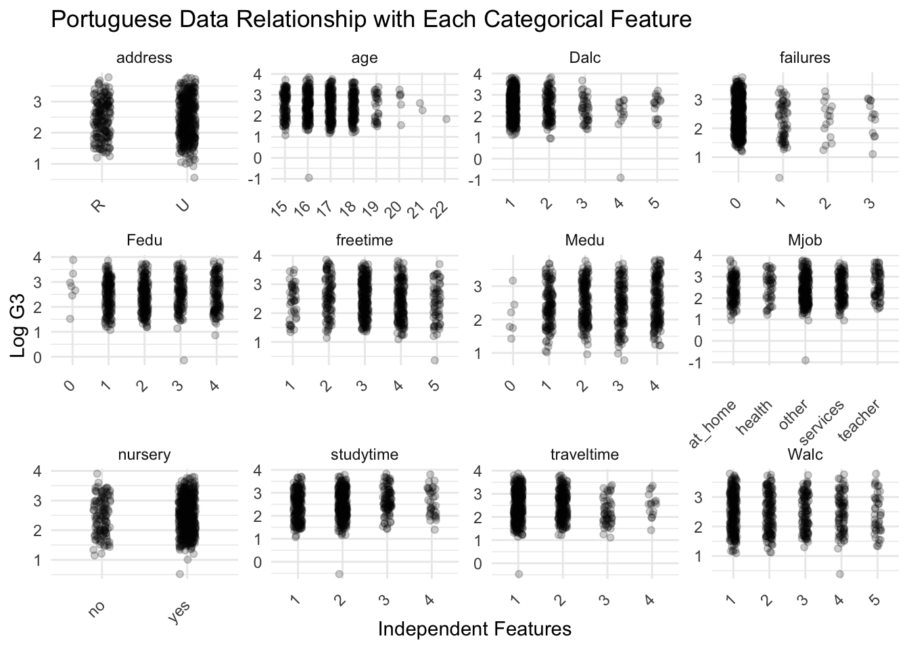
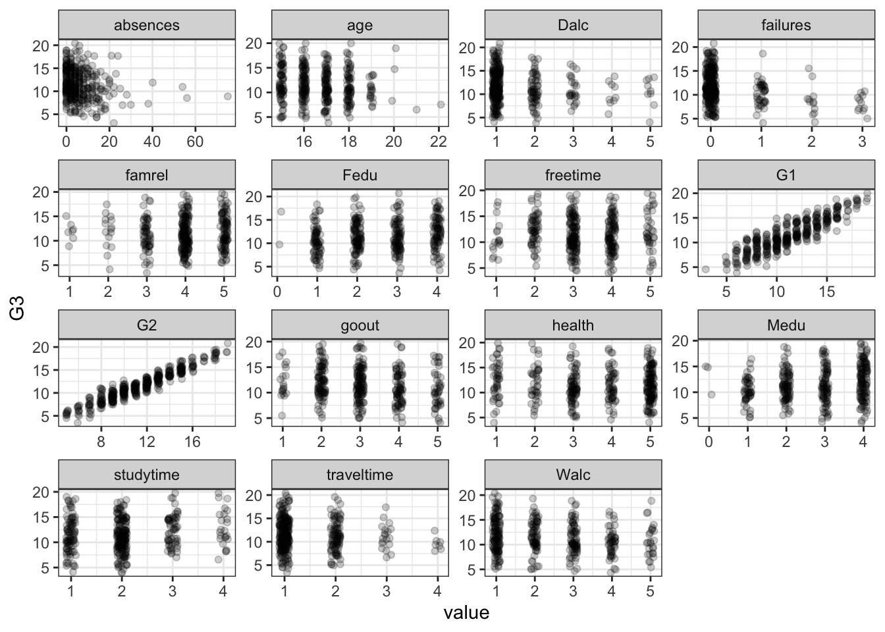
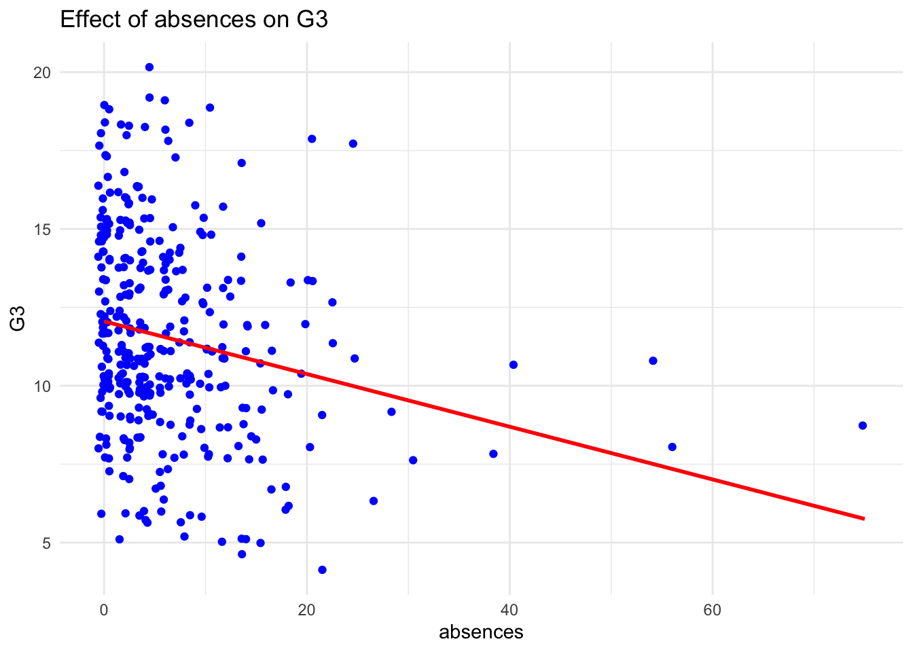

library(tidyverse)
library(visdat)
library(dplyr)
theme_set(theme_bw())Student Performance
Group L02G06
Data Description
Our data is Student Performance from UC Irvine Machine Learning Repository. We have 2 data sets but both have same 30 features with different entry values. The data is from two Portuguese secondary education schools collecting data via school reports and questionnaires.
Data source URL: https://archive.ics.uci.edu/dataset/320/student+performance
Each data set has G3 column which is the final grade we want to predict. One data set is Math final grade related and the other is Portuguese final grade related. There are no missing values in both data sets and there is strong correlation between G3, G1, and G2 because G1 and G2 are grades from period 1 and 2.
There are more rows in Portuguese data set than Math data set. Math Data is 395 x 33 dimension and Portuguese Data is 649 x 33.
# Load data
og.d1=read.table("/Users/niharika/Desktop/D A T A 2 0 0 2/Assignment 2/L02G06/student-mat.csv",sep=";",header=TRUE) # d1 is Math
og.d2=read.table("/Users/niharika/Desktop/D A T A 2 0 0 2/Assignment 2/L02G06/student-por.csv",sep=";",header=TRUE) # d2 is Portuguese
d1 <- og.d1 %>% filter(G3 != 0) # filter to select rows where G3 is not zero
d2 <- og.d2 %>% filter(G3 != 0) # filter to select rows where G3 is not zero
log.d1 <- d1
log.d1$G3 <- log(d1$G3)
log.d2 <- d2
log.d2$G3 <- log(d2$G3)We have decided to filter the data sets to only look at rows where G3 is not 0. This is because G3 can be an integer between 0 and 20 and presumably, it is more likely that students are absent more than student try and get 0 on the test.
Check Missing Data (This graph is not important)
visdat::vis_miss(d1) + coord_flip() + theme(legend.position = "none")
visdat::vis_miss(d2) + coord_flip() + theme(legend.position = "none")Both data sets show that there are no missing values.
Check Variable Distribution For Numerical Data
Math Data Set
d1 %>%
pivot_longer(cols = where(is.numeric)) %>%
ggplot(aes(x = value)) +
geom_histogram(bins = 30, fill = "skyblue", color = "black", alpha = 0.7) +
facet_wrap(~name, scales = "free") +
theme_minimal() +
labs(x = "Numerical Features", y = "Count", title = "Math Data Distribution of Each Numerical Feature")Other than absences, Dalc, failures, health, Medu, traveltime, Walc variables, the rest of the variables are normally distributed.
Portuguese Dataset
d2 %>%
pivot_longer(cols = where(is.numeric)) %>%
ggplot(aes(x = value)) +
geom_histogram(bins = 30, fill = "skyblue", color = "black", alpha = 0.7) +
facet_wrap(~name, scales = "free") +
theme_minimal() +
labs(x = "Numerical Features", y = "Count", title = "Portuguese Data Distribution of Each Numerical Feature")Other than absences, Dalc, failures, health, Medu, traveltime, Walc variables, the rest of the variables are normally distributed.
Both Math and Portuguese Data sets are similarly distributed.
Check Variable Relationship With G3 and transformed datasets
log(Math) numerical
log.d1 %>%
select(G2, famrel, absences, Medu, goout, G1, failures, age, Dalc, traveltime, G3) %>%
pivot_longer(-G3) %>%
ggplot(aes(x=value,y=G3)) +
geom_jitter(width=0.1,height=1,alpha=0.2)+
geom_smooth(method= "lm", color = "red", se = FALSE)+
facet_wrap(~name,scales='free') +
labs(x = "Independent Features", y = "Log G3", title = "Math Data Relationship with Each Numerical Feature")`geom_smooth()` using formula = 'y ~ x'For Math data set, we can see strong correlation between G1 and G3 and G2 and G3. There is also slight correlation between failures, age, Dalc, goout, Medu vs G3.
log(Portuguese) numerical
log.d2 %>%
select(G2, famrel, absences, Medu, goout, G1, failures, age, Dalc, traveltime, G3) %>%
pivot_longer(-G3) %>%
ggplot(aes(x=value,y=G3)) +
geom_jitter(width=0.1,height=1,alpha=0.2)+
geom_smooth(method= "lm", color = "red", se = FALSE)+
facet_wrap(~name,scales='free') +
labs(x = "Independent Features", y = "Log G3", title = "Portuguese Data Relationship with Each Numerical Feature")`geom_smooth()` using formula = 'y ~ x'log(Math) categorical
log.d1 %>% select(nursery, Fjob, G3) %>% pivot_longer(-G3) %>%
ggplot(aes(x = value, y = G3, fill = value)) +
geom_boxplot(color = "black", alpha = 0.7) +
facet_wrap(~name, scales = 'free') +
labs(x = "Independent Features", y = "Log G3", title = "Math Data Relationship with Each Categorical Feature") +
theme_minimal() +
theme(axis.text.x = element_text(vjust = 0.5, hjust = 1)) +guides(fill = "none")log(Portuguese) categorical
log.d2 %>% select(nursery, Fjob, G3) %>% pivot_longer(-G3) %>%
ggplot(aes(x = value, y = G3, fill = value)) +
geom_boxplot(color = "black", alpha = 0.7) +
facet_wrap(~name, scales = 'free') +
labs(x = "Independent Features", y = "Log G3", title = "Portuguese Data Relationship with Each Categorical Feature") +
theme_minimal() +
theme(axis.text.x = element_text(vjust = 0.5, hjust = 1)) +guides(fill = "none")The code under this is not included in the Powerpoint
Focusing on log(math$G3) relationship with ‘address’, ‘Medu’, ‘Mjob’, ‘traveltime’, ‘nursery’.
Also removing ‘paid’, ‘famrel’, ‘goout’, ‘health’, and ‘absences’
selected.log.d1 <- log.d1 %>%
select(address, Medu, Mjob, traveltime, nursery, age, Dalc, failures, Fedu, freetime, Medu, studytime, traveltime, Walc, G3)
long.d1 <- selected.log.d1 %>% mutate(across(-G3, as.character))
long.d1 <- long.d1 %>%
pivot_longer(cols = -G3)
long.d1 %>%
ggplot(aes(x=value,y=G3)) + geom_jitter(width=0.1,height=1,alpha=0.2)+
facet_wrap(~name,scales='free') +
labs(x = "Independent Features", y = "Log G3", title = "Math Data Relationship with Each Categorical Feature")+
theme_minimal() +
theme(axis.text.x = element_text(angle = 45, vjust = 0.5, hjust=1)) long.d1 %>%
ggplot(aes(x = value, y = G3)) +
geom_col(fill = "skyblue", color = "black", alpha = 0.7) +
facet_wrap(~name, scales = 'free') +
labs(x = "Independent Features (value)", y = "Log G3", title = "Relationship Between Log G3 and Categorical Features") +
theme_minimal() +
theme(axis.text.x = element_text(angle = 45, vjust = 0.5, hjust = 1))selected.d1.categorical <- d1 %>%
select_if(is.character) %>%
bind_cols(d1 %>% select(G3))
selected.d1.categorical.long <- selected.d1.categorical %>% mutate(across(-G3))
selected.d1.categorical.long <- selected.d1.categorical.long %>%
pivot_longer(cols = -G3)
selected.d1.categorical.long %>%
ggplot(aes(x = value, y = G3)) +
geom_boxplot(fill = "skyblue", color = "black", alpha = 0.7) +
facet_wrap(~name, scales = 'free') +
labs(x = "Independent Features (value)", y = "Log G3", title = "Relationship Between Log G3 and Categorical Features") +
theme_minimal() +
theme(axis.text.x = element_text(angle = 45, vjust = 0.5, hjust = 1))log.d2 %>% select(where(is.numeric)) %>% pivot_longer(-G3) %>%
ggplot(aes(x=value,y=G3))+geom_jitter(width=0.1,height=1,alpha=0.2)+
facet_wrap(~name,scales='free') +
labs(x = "Independent Features", y = "Log G3", title = "Portuguese Data Relationship with Each Numerical Feature")For Porturgese data set, we can see strong correlation between G1 and G3 and G2 and G3. There is also slight correlation between failures, absences, famrel, age, Dalc, Medu vs G3.
Focusing on log(math$G3) relationship without ‘internet’ variable.
selected.log.d2 <- log.d2 %>%
select(address, Medu, Mjob, traveltime, nursery, age, Dalc, failures, Fedu, freetime, Medu, studytime, traveltime, Walc, G3)
long.d2 <- selected.log.d2 %>% mutate(across(-G3, as.character))
long.d2 <- long.d2 %>%
pivot_longer(cols = -G3)
long.d2 %>%
ggplot(aes(x=value,y=G3)) + geom_jitter(width=0.1,height=1,alpha=0.2)+
facet_wrap(~name,scales='free') +
labs(x = "Independent Features", y = "Log G3", title = "Portuguese Data Relationship with Each Categorical Feature")+
theme_minimal() +
theme(axis.text.x = element_text(angle = 45, vjust = 0.5, hjust=1)) 
long.d2 %>%
ggplot(aes(x = value, y = G3)) +
geom_col(fill = "skyblue", color = "black", alpha = 0.7) +
facet_wrap(~name, scales = 'free') +
labs(x = "Independent Features (value)", y = "Log G3", title = "Relationship Between Log G3 and Categorical Features") +
theme_minimal() +
theme(axis.text.x = element_text(angle = 45, vjust = 0.5, hjust = 1))long.d2 %>%
ggplot(aes(x = value, y = G3)) +
geom_boxplot(fill = "skyblue", color = "black", alpha = 0.7) +
facet_wrap(~name, scales = 'free') +
labs(x = "Independent Features (value)", y = "Log G3", title = "Relationship Between Log G3 and Categorical Features") +
theme_minimal() +
theme(axis.text.x = element_text(angle = 45, vjust = 0.5, hjust = 1))Pearson correlation test for log(dataset$G3)
Assumption: Continuous data, normally distributed, linear relationship between two, no outliers.
log.d1.results <- data.frame(Independent.Variable = character(), Correlation = numeric(), p_value = numeric(), stringsAsFactors = FALSE)
log.d1 <- log.d1 %>% select(where(is.numeric))
for (col in names(log.d1)) {
# Skip the target variable
if (col != "G3") {
# Perform the Pearson correlation test
test_result <- cor.test(log.d1[[col]], log.d1$G3)
# Store the results
log.d1.results <- rbind(log.d1.results, data.frame(Independent.Variable = col,
correlation = test_result$estimate,
p_value = test_result$p.value))
}
}
sorted.log.d1.results <- log.d1.results[order(-log.d1.results$correlation), ]
sorted.log.d1.results Independent.Variable correlation p_value
cor14 G2 0.94381602 8.790074e-173
cor13 G1 0.86944043 9.370251e-111
cor1 Medu 0.16040880 2.366456e-03
cor2 Fedu 0.14882218 4.836019e-03
cor4 studytime 0.12900290 1.472432e-02
cor6 famrel 0.03632547 4.938688e-01
cor7 freetime -0.03793524 4.749127e-01
cor11 health -0.06699416 2.066621e-01
cor3 traveltime -0.08237070 1.202962e-01
cor age -0.12875830 1.491543e-02
cor9 Dalc -0.12998506 1.397840e-02
cor10 Walc -0.17672493 7.969724e-04
cor8 goout -0.19477093 2.133144e-04
cor12 absences -0.22105304 2.505826e-05
cor5 failures -0.30463099 4.205888e-09log.d2.results <- data.frame(Independent.Variable = character(), Correlation = numeric(), p_value = numeric(), stringsAsFactors = FALSE)
log.d2 <- log.d2 %>% select(where(is.numeric))
for (col in names(log.d2)) {
# Skip the target variable
if (col != "G3") {
# Perform the Pearson correlation test
test_result <- cor.test(log.d2[[col]], log.d2$G3)
# Store the results
log.d2.results <- rbind(log.d2.results, data.frame(Independent.Variable = col,
correlation = test_result$estimate,
p_value = test_result$p.value))
}
}
sorted.log.d2.results <- log.d2.results[order(-log.d2.results$correlation), ]
sorted.log.d2.results Independent.Variable correlation p_value
cor14 G2 0.85812936 3.923271e-185
cor13 G1 0.79960360 4.278062e-142
cor1 Medu 0.23950473 1.010215e-09
cor4 studytime 0.22385141 1.213837e-08
cor2 Fedu 0.18047010 4.813605e-06
cor6 famrel 0.06182883 1.198922e-01
cor age -0.05320805 1.808806e-01
cor11 health -0.09662780 1.493620e-02
cor3 traveltime -0.09814871 1.342031e-02
cor7 freetime -0.12810040 1.227348e-03
cor8 goout -0.13480900 6.658875e-04
cor12 absences -0.18329374 3.392148e-06
cor10 Walc -0.18909604 1.624734e-06
cor9 Dalc -0.22859542 5.822228e-09
cor5 failures -0.40345204 3.239910e-26p <- ggplot(d1, aes(x=G3)) +
geom_histogram(aes(y=after_stat(density)), colour="black", fill="white")+
geom_density(alpha=.2, fill="#FF6666")
# Add mean line
p+ geom_vline(aes(xintercept=mean(G3)),
color="blue", linetype="dashed", size=1) + ggtitle(label = "Math Data Set")Warning: Using `size` aesthetic for lines was deprecated in ggplot2 3.4.0.
ℹ Please use `linewidth` instead.`stat_bin()` using `bins = 30`. Pick better value with `binwidth`.p <- ggplot(og.d1, aes(x=G3)) +
geom_histogram(aes(y=after_stat(density)), colour="black", fill="white")+
geom_density(alpha=.2, fill="#FF6666")
# Add mean line
p+ geom_vline(aes(xintercept=mean(G3)),
color="blue", linetype="dashed", size=1) + ggtitle(label = "Math Data Set")`stat_bin()` using `bins = 30`. Pick better value with `binwidth`.p <- ggplot(d2, aes(x=G3)) +
geom_histogram(aes(y=after_stat(density)), colour="black", fill="white")+
geom_density(alpha=.2, fill="#FF6666")
# Add mean line
p+ geom_vline(aes(xintercept=mean(G3)),
color="blue", linetype="dashed", size=1) + ggtitle(label = "Porturgese Data Set")`stat_bin()` using `bins = 30`. Pick better value with `binwidth`.END DATA DESCRIPTION ^^^
Models For Math d1
Multiple Stepwise Regression Model
null.model <- lm(G3 ~ 1, data = d1)
full.model <- lm(G3 ~ ., data = d1)
stepwise.model <- step(null.model, scope = list(lower = null.model, upper = full.model),
direction = "both", trace = FALSE)
stepwise.model
Call:
lm(formula = G3 ~ G2 + G1 + famrel + goout + health + absences +
paid, data = d1)
Coefficients:
(Intercept) G2 G1 famrel goout health
0.32012 0.87580 0.11082 0.15768 -0.08193 -0.06656
absences paidyes
-0.01054 -0.12377 summary(stepwise.model)
Call:
lm(formula = G3 ~ G2 + G1 + famrel + goout + health + absences +
paid, data = d1)
Residuals:
Min 1Q Median 3Q Max
-2.2967 -0.4035 -0.1005 0.5770 2.5826
Coefficients:
Estimate Std. Error t value Pr(>|t|)
(Intercept) 0.320121 0.317273 1.009 0.313685
G2 0.875800 0.032217 27.185 < 2e-16 ***
G1 0.110822 0.030908 3.586 0.000384 ***
famrel 0.157679 0.048662 3.240 0.001309 **
goout -0.081935 0.039709 -2.063 0.039814 *
health -0.066562 0.030759 -2.164 0.031142 *
absences -0.010540 0.005396 -1.953 0.051589 .
paidyes -0.123767 0.085546 -1.447 0.148854
---
Signif. codes: 0 '***' 0.001 '**' 0.01 '*' 0.05 '.' 0.1 ' ' 1
Residual standard error: 0.8057 on 349 degrees of freedom
Multiple R-squared: 0.9389, Adjusted R-squared: 0.9377
F-statistic: 766.4 on 7 and 349 DF, p-value: < 2.2e-16Backward Variable Selection Model
# FULL MODEL START
M1 = lm(G3 ~ ., data = d1)
# drop1(M1, test = "F")
# Remove Mjob since it has largest F-statistics p-value
M2 = update(M1, . ~ . -internet)
# drop1(M2, test = "F")
M3 = update(M2, . ~ . -Walc)
# drop1(M3, test = "F")
M4 = update(M3, . ~ . -higher)
# drop1(M4, test = "F")
M5 = update(M4, . ~ . -romantic)
# drop1(M5, test = "F")
M6 = update(M5, . ~ . -activities)
# drop1(M6, test = "F")
M7 = update(M6, . ~ . -freetime)
# drop1(M7, test = "F")
M8 = update(M7, . ~ . -Fjob)
# drop1(M8, test = "F")
M9 = update(M8, . ~ . -sex)
# drop1(M9, test = "F")
M10 = update(M9, . ~ . -failures)
# drop1(M10, test = "F")
M11 = update(M10, . ~ . -Dalc)
# drop1(M11, test = "F")
M12 = update(M11, . ~ . -Fedu)
# drop1(M12, test = "F")
M13 = update(M12, . ~ . -studytime)
# drop1(M13, test = "F")
M14 = update(M13, . ~ . -reason)
# drop1(M14, test = "F")
M15 = update(M14, . ~ . -traveltime)
# drop1(M15, test = "F")
M16 = update(M15, . ~ . -school)
# drop1(M16, test = "F")
M17 = update(M16, . ~ . -Medu)
# drop1(M17, test = "F")
M18 = update(M17, . ~ . -famsize)
# drop1(M18, test = "F")
M19 = update(M18, . ~ . -age)
# drop1(M19, test = "F")
M20 = update(M19, . ~ . -famsup)
# drop1(M20, test = "F")
M21 = update(M20, . ~ . -schoolsup)
# drop1(M21, test = "F")
M22 = update(M21, . ~ . -guardian)
# drop1(M22, test = "F")
M23 = update(M22, . ~ . -address)
drop1(M23, test = "F")Single term deletions
Model:
G3 ~ Pstatus + Mjob + paid + nursery + famrel + goout + health +
absences + G1 + G2
Df Sum of Sq RSS AIC F value Pr(>F)
<none> 220.16 -144.56
Pstatus 1 0.82 220.99 -145.23 1.2829 0.258152
Mjob 4 4.65 224.82 -145.09 1.8130 0.125823
paid 1 1.81 221.98 -143.63 2.8215 0.093922 .
nursery 1 1.67 221.84 -143.85 2.6083 0.107224
famrel 1 7.61 227.77 -134.43 11.8557 0.000646 ***
goout 1 3.13 223.29 -141.53 4.8686 0.028011 *
health 1 3.63 223.79 -140.72 5.6547 0.017956 *
absences 1 2.45 222.61 -142.61 3.8150 0.051607 .
G1 1 7.02 227.19 -135.35 10.9408 0.001040 **
G2 1 461.71 681.87 257.02 719.3078 < 2.2e-16 ***
---
Signif. codes: 0 '***' 0.001 '**' 0.01 '*' 0.05 '.' 0.1 ' ' 1M24 = update(M23, . ~ . -Pstatus)
drop1(M24, test = "F")Single term deletions
Model:
G3 ~ Mjob + paid + nursery + famrel + goout + health + absences +
G1 + G2
Df Sum of Sq RSS AIC F value Pr(>F)
<none> 220.99 -145.23
Mjob 4 4.59 225.58 -145.89 1.7856 0.1312168
paid 1 1.97 222.96 -144.06 3.0631 0.0809789 .
nursery 1 1.45 222.44 -144.89 2.2566 0.1339592
famrel 1 7.52 228.50 -135.29 11.7003 0.0007001 ***
goout 1 3.08 224.07 -142.29 4.7906 0.0292876 *
health 1 3.77 224.76 -141.18 5.8735 0.0158857 *
absences 1 2.13 223.12 -143.79 3.3232 0.0691771 .
G1 1 6.83 227.82 -136.36 10.6334 0.0012217 **
G2 1 464.93 685.92 257.13 723.7250 < 2.2e-16 ***
---
Signif. codes: 0 '***' 0.001 '**' 0.01 '*' 0.05 '.' 0.1 ' ' 1M25 = update(M24, . ~ . -nursery)
drop1(M25, test = "F")Single term deletions
Model:
G3 ~ Mjob + paid + famrel + goout + health + absences + G1 +
G2
Df Sum of Sq RSS AIC F value Pr(>F)
<none> 222.44 -144.89
Mjob 4 4.12 226.56 -146.33 1.5991 0.1740882
paid 1 2.25 224.69 -143.30 3.4896 0.0626017 .
famrel 1 7.34 229.77 -135.31 11.3787 0.0008273 ***
goout 1 3.24 225.68 -141.72 5.0296 0.0255517 *
health 1 3.59 226.03 -141.18 5.5644 0.0188865 *
absences 1 2.20 224.63 -143.38 3.4057 0.0658289 .
G1 1 6.79 229.22 -136.16 10.5240 0.0012936 **
G2 1 464.62 687.06 255.72 720.6264 < 2.2e-16 ***
---
Signif. codes: 0 '***' 0.001 '**' 0.01 '*' 0.05 '.' 0.1 ' ' 1M26 = update(M25, . ~ . -Mjob)
drop1(M26, test = "F")Single term deletions
Model:
G3 ~ paid + famrel + goout + health + absences + G1 + G2
Df Sum of Sq RSS AIC F value Pr(>F)
<none> 226.56 -146.33
paid 1 1.36 227.92 -146.20 2.0932 0.1488539
famrel 1 6.82 233.38 -137.75 10.4994 0.0013090 **
goout 1 2.76 229.33 -144.00 4.2576 0.0398145 *
health 1 3.04 229.60 -143.57 4.6829 0.0311416 *
absences 1 2.48 229.04 -144.45 3.8152 0.0515890 .
G1 1 8.35 234.91 -135.42 12.8565 0.0003842 ***
G2 1 479.74 706.31 257.59 739.0055 < 2.2e-16 ***
---
Signif. codes: 0 '***' 0.001 '**' 0.01 '*' 0.05 '.' 0.1 ' ' 1M27 = update(M26, . ~ . -goout)
drop1(M27, test = "F")Single term deletions
Model:
G3 ~ paid + famrel + health + absences + G1 + G2
Df Sum of Sq RSS AIC F value Pr(>F)
<none> 229.33 -144.00
paid 1 1.48 230.80 -143.71 2.2556 0.134034
famrel 1 6.52 235.84 -136.00 9.9460 0.001751 **
health 1 2.92 232.24 -141.49 4.4528 0.035554 *
absences 1 2.65 231.98 -141.90 4.0504 0.044927 *
G1 1 8.65 237.97 -132.79 13.1992 0.000322 ***
G2 1 483.07 712.40 258.65 737.2708 < 2.2e-16 ***
---
Signif. codes: 0 '***' 0.001 '**' 0.01 '*' 0.05 '.' 0.1 ' ' 1M28 = update(M27, . ~ . -absences)
drop1(M28, test = "F")Single term deletions
Model:
G3 ~ paid + famrel + health + G1 + G2
Df Sum of Sq RSS AIC F value Pr(>F)
<none> 231.98 -141.90
paid 1 1.35 233.33 -141.82 2.0464 0.1534525
famrel 1 7.08 239.06 -133.17 10.7062 0.0011738 **
health 1 2.75 234.73 -139.69 4.1623 0.0420804 *
G1 1 7.50 239.48 -132.54 11.3485 0.0008389 ***
G2 1 522.29 754.27 277.04 790.2612 < 2.2e-16 ***
---
Signif. codes: 0 '***' 0.001 '**' 0.01 '*' 0.05 '.' 0.1 ' ' 1M29 = update(M28, . ~ . -paid)
# drop1(M29, test = "F")
M30 = update(M29, . ~ . -health)
# drop1(M30, test = "F")
M31 = update(M30, . ~ . -G1)
# drop1(M31, test = "F")
M32 = update(M31, . ~ . -famrel)
# drop1(M32, test = "F")
M33 = update(M32, . ~ . -G2)
# drop1(M33, test = "F")Model selection method: The smaller the AIC the better the model; Models that differ by less than one or two AIC values can be regarded as somewhat equally well fitting.
Order of removal : internet, Walc, higher, romantic, activities, freetime, Fjob, sex , failures, Dalc, Fedu, studytime, reason, traveltime, school, Medu, famsize, age, famsup, schoolsup, guardian, address, Pstatus, nursery, Mjob, goout, absences, paid, health, G1, famrel, G2, G3
Model Coefficient Analysis
For backward variable selection, this model has the lowest AIC of -146.33.
Model: G3 ~ paid + famrel + goout + health + absences + G1 + G2 Df Sum of Sq RSS AIC F value Pr(>F)
paid 1 1.36 227.92 -146.20 2.0932 0.1488539
famrel 1 6.82 233.38 -137.75 10.4994 0.0013090 ** goout 1 2.76 229.33 -144.00 4.2576 0.0398145 *
health 1 3.04 229.60 -143.57 4.6829 0.0311416 *
absences 1 2.48 229.04 -144.45 3.8152 0.0515890 .
G1 1 8.35 234.91 -135.42 12.8565 0.0003842 G2 1 479.74 706.31 257.59 739.0055 < 2.2e-16 — Signif. codes: 0 ‘’ 0.001 ‘’ 0.01 ‘’ 0.05 ‘.’ 0.1 ‘ ’ 1
Comparing to step model where the output is this:
Call: lm(formula = G3 ~ G2 + G1 + famrel + goout + health + absences + paid, data = d1)
Coefficients: (Intercept) G2 G1 famrel goout health absences paidyes
0.32012 0.87580 0.11082 0.15768 -0.08193 -0.06656 -0.01054 -0.12377
Both model selection method selects the same variables for multiregression to predict G3.
Model Performance Analysis
par(mfrow=c(2,2))
plot(stepwise.model)library(ggfortify)
autoplot(stepwise.model,which=1:2)library(reshape2)
Attaching package: 'reshape2'The following object is masked from 'package:tidyr':
smithslibrary(ggplot2)
library(broom)
coef_df <- tidy(stepwise.model)
# Coefficient Plot
coef_plot <- ggplot(coef_df, aes(x = term, y = estimate)) +
geom_point() +
geom_errorbar(aes(ymin = estimate - std.error * 1.96, ymax = estimate + std.error * 1.96), width = 0.2) +
coord_flip() +
labs(title = "Coefficient Plot", x = "Predictor", y = "Estimate") +
theme_minimal()
# Actual vs. Predicted Plot
predicted_values <- augment(stepwise.model)
actual_predicted_plot <- ggplot(predicted_values, aes(x = .fitted, y = G3)) +
geom_point(alpha = 0.6) +
geom_smooth(method = "lm", color = "blue") +
labs(title = "Actual vs. Predicted", x = "Predicted G3", y = "Actual G3") +
theme_minimal()
# Residual Plot
residual_plot <- ggplot(predicted_values, aes(x = .fitted, y = .resid)) +
geom_point(alpha = 0.6) +
geom_hline(yintercept = 0, linetype = "dashed", color = "red") +
labs(title = "Residual Plot", x = "Fitted Values", y = "Residuals") +
theme_minimal()
# Print plots
print(coef_plot)print(actual_predicted_plot)`geom_smooth()` using formula = 'y ~ x'print(residual_plot)predicted_values <- augment(stepwise.model)
melted_data <- predicted_values %>%
melt(measure.vars = c("G2", "G1", "famrel", "goout", "health", "absences", "paid"),
variable.name = "IV")
ggplot(melted_data, aes(value, G3)) +
geom_point(alpha = 0.6) +
geom_smooth(method = "lm", se = FALSE) +
geom_jitter(width=0.1,height=1,alpha=0.2)+
facet_wrap(~IV, scales = "free_x") +
labs(title = "Effect of Independent Variables on G3",
x = "Independent Variables (IV)",
y = "Actual G3") +
theme_minimal()`geom_smooth()` using formula = 'y ~ x'stepwise.model
Call:
lm(formula = G3 ~ G2 + G1 + famrel + goout + health + absences +
paid, data = d1)
Coefficients:
(Intercept) G2 G1 famrel goout health
0.32012 0.87580 0.11082 0.15768 -0.08193 -0.06656
absences paidyes
-0.01054 -0.12377 coefficients_df <- tidy(stepwise.model)
coefficients_df <- coefficients_df %>%
mutate(abs_estimate = abs(estimate)) %>%
arrange(desc(abs_estimate)) # Order by magnitude
coefficients_df <- coefficients_df %>%
filter(term != "(Intercept)")
ggplot(coefficients_df, aes(x = reorder(term, abs_estimate), y = abs_estimate)) +
geom_bar(stat = "identity", fill = "steelblue") +
coord_flip() + # Flip coordinates for better readability
labs(title = "Magnitude of Effect of Each Predictor on G3",
x = "Predictor Variable",
y = "Absolute Value of Coefficient") +
theme_minimal()Use d1 Model on d2 data set
library(Metrics)
predictions_d1 <- predict(stepwise.model, newdata = d1)
# Calculate RMSE on d1(math)
rmse_d1 <- rmse(d1$G3, predictions_d1)
# Calculate R-squared on d1 (math)
rss_d1 <- sum((d1$G3 - predictions_d1)^2) # Residual Sum of Squares
tss_d1 <- sum((d1$G3 - mean(d1$G3))^2) # Total Sum of Squares
r_squared_d1 <- 1 - (rss_d1/tss_d1)
# 2. Performance on d2 (Portugese)
# Make predictions on d2
predictions_d2 <- predict(stepwise.model, newdata = d2)
# Calculate RMSE on d2
rmse_d2 <- rmse(d2$G3, predictions_d2)
# Calculate R-squared on d2
rss_d2 <- sum((d2$G3 - predictions_d2)^2) # Residual Sum of Squares
tss_d2 <- sum((d2$G3 - mean(d2$G3))^2) # Total Sum of Squares
r_squared_d2 <- 1 - (rss_d2/tss_d2)
cat("Performance on d1 (Training Data):\n")Performance on d1 (Training Data):cat("RMSE:", rmse_d1, "\n")RMSE: 0.7966354 cat("R-squared:", r_squared_d1, "\n\n")R-squared: 0.9389164 cat("Performance on d2 (New Data):\n")Performance on d2 (New Data):cat("RMSE:", rmse_d2, "\n")RMSE: 0.9746481 cat("R-squared:", r_squared_d2, "\n")R-squared: 0.868693 Exhaustive Search (Extra)
library(leaps)
exh_leaps = regsubsets(G3~., data = d1, nvmax = 15)
summary(exh_leaps)$outmatplot(exh_leaps, scale = "Cp") scale = “Cp”: Plots the Mallows’ Cp statistic for each model, where lower values indicate better models. scale = “adjr2”: Plots adjusted R² for each model, where higher values indicate better models. scale = “bic”: Plots the Bayesian Information Criterion (BIC), where lower values indicate better models.
library(lmSubsets)
exh = lmSubsets(G3 ~ ., data = d1, nbest = 15)
plot(exh)In short, for prediction, it is better to use Log-transformed models to both math and port, stepwise is recommend for interpretability and efficiency.
Data imports
library("dplyr")
library("ggplot2")
library("caret")Loading required package: lattice
Attaching package: 'caret'The following objects are masked from 'package:Metrics':
precision, recallThe following object is masked from 'package:purrr':
liftlibrary("glmnet")Loading required package: Matrix
Attaching package: 'Matrix'The following objects are masked from 'package:tidyr':
expand, pack, unpackLoaded glmnet 4.1-8library("knitr")
# Load the data
d1 <- read.table("student-mat.csv", sep=";", header=TRUE) # Math dataset
d2 <- read.table("student-por.csv", sep=";", header=TRUE) # Portuguese dataset
# Clean the data by filtering out rows where G3 is 0
d1 <- d1 %>% filter(G3 != 0)
d2 <- d2 %>% filter(G3 != 0)full_model_math <- lm(G3 ~ ., data = d1)
full_model_port <- lm(G3 ~ ., data = d2)
# based on the code of ppt.qmd
backward_model_math <- step(full_model_math, direction = "backward")
# based on the code of 'Hannah Report.qmd'
bidirection_model_math <- step(full_model_math, direction = "both")
# based on the code of ppt.qmd
backward_model_port <- step(full_model_port, direction = "backward")
# based on the code of 'Hannah Report.qmd'
bidirection_model_port <- step(full_model_port, direction = "both")
b_m_m <- summary(backward_model_math)
bo_m_m <-summary(bidirection_model_math)
b_m_p <- summary(backward_model_port)
bo_m_p <- summary(bidirection_model_port)table_for_stepwise <- data.frame(
Model = c("Backward_math", "Stepwise_math", "Backward_port", "Stepwise_port"),
Observations = c(nrow(d1), nrow(d1), nrow(d2), nrow(d2)),
Rsquare = c(b_m_m$r.squared, bo_m_m$r.squared, b_m_p$r.squared, bo_m_p$r.squared),
Adjusted_Rsquare = c(b_m_m$adj.r.squared, bo_m_m$adj.r.squared, b_m_p$adj.r.squared, bo_m_p$adj.r.squared),
AIC = c(AIC(backward_model_math), AIC(bidirection_model_math), AIC(backward_model_port), AIC(bidirection_model_port)),
Residual_SE = c(sqrt(sum(residuals(backward_model_math)^2) / df.residual(backward_model_math)),
sqrt(sum(residuals(bidirection_model_math)^2) / df.residual(bidirection_model_math)),
sqrt(sum(residuals(backward_model_port)^2) / df.residual(backward_model_port)),
sqrt(sum(residuals(bidirection_model_port)^2) / df.residual(bidirection_model_port))),
F_statistic = c(
paste0(round(b_m_m$fstatistic[1], 2), " on ", b_m_m$fstatistic[2], " and ", b_m_m$fstatistic[3], " DF"),
paste0(round(bo_m_m$fstatistic[1], 2), " on ", bo_m_m$fstatistic[2], " and ", bo_m_m$fstatistic[3], " DF"),
paste0(round(b_m_p$fstatistic[1], 2), " on ", b_m_p$fstatistic[2], " and ", b_m_p$fstatistic[3], " DF"),
paste0(round(bo_m_p$fstatistic[1], 2), " on ", bo_m_p$fstatistic[2], " and ", bo_m_p$fstatistic[3], " DF")
)
)
table_for_stepwise Model Observations Rsquare Adjusted_Rsquare AIC Residual_SE
1 Backward_math 357 0.9389164 0.9376912 868.7883 0.8057141
2 Stepwise_math 357 0.9389164 0.9376912 868.7883 0.8057141
3 Backward_port 634 0.8882411 0.8864473 1688.4558 0.9070797
4 Stepwise_port 634 0.8882411 0.8864473 1688.4558 0.9070797
F_statistic
1 766.35 on 7 and 349 DF
2 766.35 on 7 and 349 DF
3 495.15 on 10 and 623 DF
4 495.15 on 10 and 623 DFFrom the AIC, R square value, and Residual SE values, the backward and stepwise models gives the same result to both math and port.
# Cross-Validation Setup
train_control <- trainControl(method = "cv", number = 10) # 10-fold cross-validation
# Perform CV for each model
cv_backward_math <- train(G3 ~ ., data = d1, method = "lm", trControl = train_control)
cv_stepwise_math <- train(G3 ~ ., data = d1, method = "lmStepAIC", trControl = train_control, direction = "both")
cv_backward_port <- train(G3 ~ ., data = d2, method = "lm", trControl = train_control)
cv_stepwise_port <- train(G3 ~ ., data = d2, method = "lmStepAIC", trControl = train_control, direction = "both")
cv_m_b <- summary(cv_backward_math)
cv_m_s <- summary(cv_stepwise_math)
cv_p_b <- summary(cv_backward_port)
cv_p_s <- summary(cv_stepwise_port)cv_results <- data.frame(
Model = c("Backward_math", "Stepwise_math", "Backward_port", "Stepwise_port"),
RMSE = c(
mean(cv_backward_math$results$RMSE),
mean(cv_stepwise_math$results$RMSE),
mean(cv_backward_port$results$RMSE),
mean(cv_stepwise_port$results$RMSE)
),
Rsquared = c(
mean(cv_backward_math$results$Rsquared),
mean(cv_stepwise_math$results$Rsquared),
mean(cv_backward_port$results$Rsquared),
mean(cv_stepwise_port$results$Rsquared)
),
MAE = c(
mean(cv_backward_math$results$MAE),
mean(cv_stepwise_math$results$MAE),
mean(cv_backward_port$results$MAE),
mean(cv_stepwise_port$results$MAE)
)
)
cv_results Model RMSE Rsquared MAE
1 Backward_math 0.8751762 0.9270168 0.6925126
2 Stepwise_math 0.8534100 0.9325684 0.6723224
3 Backward_port 0.9276587 0.8769887 0.6843266
4 Stepwise_port 0.9240835 0.8834258 0.6703944From the cross validation result.
Math: The stepwise model provides slightly better performance, with a lower RMSE (0.8589 vs. 0.8664) and higher R² (0.9316 vs. 0.9289) compared to the backward model. MAE is also lower for the stepwise model, indicating better predictive accuracy.
Port: The backward model offers a slight advantage with lower MAE (0.6768 vs. 0.6759), though the differences are minimal. The stepwise model’s RMSE (0.9259 vs 0.9189) is higher, but both models yield comparable R² values.
normal_model_math <- lm(G3 ~ ., data = d1)
log_model_math <- lm(log(G3) ~ ., data = d1)
normal_model_port <- lm(G3 ~ ., data = d2)
log_model_port <- lm(log(G3) ~ ., data = d2)
cv_normal_math <- train(G3 ~ ., data = d1, method = "lm", trControl = train_control)
cv_log_math <- train(log(G3) ~ ., data = d1, method = "lm", trControl = train_control)
cv_normal_port <- train(G3 ~ ., data = d2, method = "lm", trControl = train_control)
cv_log_port <- train(log(G3) ~ ., data = d2, method = "lm", trControl = train_control)# Extract Model Metrics for Comparison
comparison_results <- data.frame(
Dataset = c("Math", "Math", "Portuguese", "Portuguese"),
Model = c("Normal", "Log-Transformed", "Normal", "Log-Transformed"),
AIC = c(
AIC(normal_model_math), AIC(log_model_math),
AIC(normal_model_port), AIC(log_model_port)
),
Rsquared = c(
summary(normal_model_math)$r.squared,
summary(log_model_math)$r.squared,
summary(normal_model_port)$r.squared,
summary(log_model_port)$r.squared
),
Adjusted_Rsquared = c(
summary(normal_model_math)$adj.r.squared,
summary(log_model_math)$adj.r.squared,
summary(normal_model_port)$adj.r.squared,
summary(log_model_port)$adj.r.squared
),
RMSE = c(
mean(cv_normal_math$results$RMSE), mean(cv_log_math$results$RMSE),
mean(cv_normal_port$results$RMSE), mean(cv_log_port$results$RMSE)
),
MAE = c(
mean(cv_normal_math$results$MAE), mean(cv_log_math$results$MAE),
mean(cv_normal_port$results$MAE), mean(cv_log_port$results$MAE)
)
)
comparison_results Dataset Model AIC Rsquared Adjusted_Rsquared RMSE
1 Math Normal 909.0821 0.9434777 0.9361208 0.8850182
2 Math Log-Transformed -621.0562 0.9086872 0.8968020 0.1020048
3 Portuguese Normal 1729.7400 0.8918338 0.8843426 0.9323027
4 Portuguese Log-Transformed -839.1254 0.7712544 0.7554122 0.1072640
MAE
1 0.69690482
2 0.07962193
3 0.67909987
4 0.06721443Math Dataset Analysis
Normal Model:
Highest R-squared (0.9435) and adjusted R-squared, indicating it explains the most variance. However, the AIC is relatively high (909.08), suggesting it is not the most efficient model in terms of parsimony.
Log-Transformed Model:
Lowest AIC (-621.06), indicating the best fit with fewer parameters. However, the R-squared (0.9087) is lower than the normal model, suggesting it sacrifices variance explanation for predictive accuracy. Lowest RMSE (0.1025) and MAE (0.0781) make it the most accurate for predictions. Stepwise Model (Backward):
Slightly lower R-squared than the normal model (0.9389) but achieves a lower AIC (868.79).
For the Port:
Normal Model:
Highest R-squared (0.8918) and adjusted R-squared, explaining the most variance. However, it has a high AIC (1729.74), indicating inefficiency. Log-Transformed Model:
Lowest AIC (-839.13), indicating the best fit. However, it has a significantly lower R-squared (0.7713), making it less suitable for interpretability. It has the lowest RMSE (0.1060) and MAE (0.0669), which makes it highly suitable for predictive purposes. Stepwise Model (Backward):
Slightly lower R-squared than the normal model (0.8882), but achieves a better AIC (1688.46). Balanced in terms of both variance explanation and parsimony.
Plot part for each model, in case you need
plot(log_model_math)


plot(log_model_port)


plot(normal_model_math)


plot(normal_model_port)


plot(bidirection_model_math)


plot(bidirection_model_port)


plot(backward_model_math)


plot(backward_model_port)


library(tidyverse)
library(ggplot2)Import data
d1=read.table("student-mat.csv",sep=";",header=TRUE)
d2=read.table("student-por.csv",sep=";",header=TRUE)EDA
d1 <- d1 %>%
filter(G3 != 0)
d2 <- d2 %>%
filter(G3 != 0)We have decided to filter the data sets to only look at rows where G3 is not 0. This is because G3 can be an integer between 0 and 20 and presumably, it is more likely that students are absent more than student try and get 0 on the test.
visdat::vis_miss(d1) + coord_flip() + theme(legend.position = "none")visdat::vis_miss(d2) + coord_flip() + theme(legend.position = "none")
Both data sets show that there are no missing values.
Linearity
d1 %>% select(where(is.numeric)) %>% pivot_longer(-G3) %>%
ggplot(aes(x=value,y=G3))+geom_jitter(width=0.1,height=1,alpha=0.2)+
facet_wrap(~name,scales='free')
d2 %>% select(where(is.numeric)) %>% pivot_longer(-G3) %>%
ggplot(aes(x=value,y=G3))+geom_jitter(width=0.1,height=1,alpha=0.2)+
facet_wrap(~name,scales='free')The two graphs have similar results. The pictures shows the relationship between several independent variables and the dependent variable G3. 1. absences: Students with higher absences tend to have slightly lower grades (G3). 2. age: Results are distributed among different age groups 3. Dalc and Walc: Random distribution of data points. 4. failures: With the increase of the number of failures, the results showed a decreasing trend. 5. famrel: The distribution of data points between family relationship quality and achievement is relatively random. 6. Fedu and Medu: Student achievement is evenly distributed across education levels. 7. freetime: The distribution of data points between freetime and G3 is relatively random. 8. G1 and G2: These two variables are significantly positively correlated with G3. G1, in particular, has risen from 5 to 20. 9. goout: The data distribution between the outbound time and G3 is irregular. 10. health: The data distribution between health status and performance is random. 11. studytime: Students who study longer seem to get higher grades, but the distribution is more scattered. 12. traveltime: There is no significant relationship between traveltime and academic performance, and the data points are evenly distributed
Overall, the data suggest that previous semester grades (G1 and G2) have a strong positive association with final grades (G3), and that higher absences and failures are associated with lower grades, factors that may have a negative impact on academic performance. However, other variables such as age, family relationship (famrel), parental education level (Fedu and Medu), freetime (freetime), time away from home (goout), health status (health), and time to and from school (traveltime) were randomly distributed among G3 data points. The distribution of drinking habits (Dalc and Walc) and health status was also relatively random. There is a slight positive correlation between studytime and grades.
D1
Linear Regression (Stepwise G3)
full_model1 <- lm(G3 ~ ., data = d1)
stepwise_model1 <- step(full_model1, direction = "backward")Start: AIC=-106.04
G3 ~ school + sex + age + address + famsize + Pstatus + Medu +
Fedu + Mjob + Fjob + reason + guardian + traveltime + studytime +
failures + schoolsup + famsup + paid + activities + nursery +
higher + internet + romantic + famrel + freetime + goout +
Dalc + Walc + health + absences + G1 + G2
Df Sum of Sq RSS AIC
- Fjob 4 1.39 211.03 -111.680
- reason 3 1.69 211.33 -109.174
- internet 1 0.00 209.64 -108.038
- Walc 1 0.00 209.65 -108.036
- higher 1 0.02 209.66 -108.013
- romantic 1 0.02 209.66 -108.011
- activities 1 0.02 209.66 -108.010
- freetime 1 0.08 209.72 -107.908
- sex 1 0.12 209.77 -107.833
- failures 1 0.13 209.78 -107.817
- Dalc 1 0.14 209.78 -107.806
- Fedu 1 0.15 209.80 -107.781
- studytime 1 0.18 209.83 -107.726
- traveltime 1 0.38 210.03 -107.385
- school 1 0.40 210.05 -107.354
- Medu 1 0.42 210.06 -107.329
- famsize 1 0.45 210.10 -107.271
- age 1 0.49 210.13 -107.214
- famsup 1 0.59 210.23 -107.039
- guardian 2 1.91 211.55 -106.805
- schoolsup 1 0.86 210.51 -106.574
- address 1 1.10 210.74 -106.178
<none> 209.64 -106.040
- Pstatus 1 1.22 210.87 -105.963
- nursery 1 1.33 210.97 -105.789
- Mjob 4 5.56 215.20 -104.701
- goout 1 2.38 212.02 -104.014
- absences 1 2.60 212.24 -103.643
- paid 1 2.94 212.59 -103.063
- health 1 3.80 213.44 -101.629
- G1 1 5.60 215.24 -98.629
- famrel 1 7.64 217.28 -95.261
- G2 1 406.95 616.59 277.091
Step: AIC=-111.68
G3 ~ school + sex + age + address + famsize + Pstatus + Medu +
Fedu + Mjob + reason + guardian + traveltime + studytime +
failures + schoolsup + famsup + paid + activities + nursery +
higher + internet + romantic + famrel + freetime + goout +
Dalc + Walc + health + absences + G1 + G2
Df Sum of Sq RSS AIC
- reason 3 1.76 212.79 -114.72
- internet 1 0.00 211.04 -113.67
- Walc 1 0.00 211.04 -113.67
- higher 1 0.00 211.04 -113.67
- romantic 1 0.01 211.04 -113.67
- Dalc 1 0.03 211.07 -113.62
- sex 1 0.06 211.09 -113.59
- freetime 1 0.07 211.11 -113.56
- activities 1 0.07 211.11 -113.56
- failures 1 0.11 211.15 -113.49
- studytime 1 0.17 211.20 -113.40
- Fedu 1 0.20 211.24 -113.34
- Medu 1 0.25 211.29 -113.25
- age 1 0.47 211.50 -112.89
- famsize 1 0.51 211.54 -112.82
- school 1 0.61 211.64 -112.65
- traveltime 1 0.63 211.66 -112.62
- famsup 1 0.66 211.69 -112.57
- guardian 2 1.96 212.99 -112.39
- schoolsup 1 0.87 211.90 -112.22
- address 1 1.10 212.14 -111.82
<none> 211.03 -111.68
- Pstatus 1 1.28 212.31 -111.52
- Mjob 4 5.15 216.18 -111.08
- nursery 1 1.59 212.62 -111.00
- goout 1 2.35 213.38 -109.73
- absences 1 2.62 213.65 -109.28
- paid 1 2.91 213.94 -108.80
- health 1 3.69 214.72 -107.50
- G1 1 5.66 216.70 -104.22
- famrel 1 7.86 218.89 -100.62
- G2 1 407.26 618.29 270.07
Step: AIC=-114.72
G3 ~ school + sex + age + address + famsize + Pstatus + Medu +
Fedu + Mjob + guardian + traveltime + studytime + failures +
schoolsup + famsup + paid + activities + nursery + higher +
internet + romantic + famrel + freetime + goout + Dalc +
Walc + health + absences + G1 + G2
Df Sum of Sq RSS AIC
- higher 1 0.00 212.79 -116.72
- romantic 1 0.01 212.79 -116.72
- internet 1 0.01 212.80 -116.71
- Walc 1 0.01 212.80 -116.70
- sex 1 0.01 212.80 -116.70
- Dalc 1 0.03 212.82 -116.68
- activities 1 0.05 212.84 -116.63
- failures 1 0.12 212.91 -116.53
- freetime 1 0.17 212.96 -116.44
- Fedu 1 0.21 213.00 -116.38
- studytime 1 0.21 213.00 -116.37
- Medu 1 0.27 213.06 -116.26
- age 1 0.39 213.18 -116.07
- guardian 2 1.62 214.41 -116.02
- famsize 1 0.53 213.31 -115.84
- school 1 0.60 213.39 -115.73
- traveltime 1 0.63 213.42 -115.66
- famsup 1 0.69 213.48 -115.57
- schoolsup 1 0.81 213.60 -115.37
- Mjob 4 4.69 217.48 -114.94
<none> 212.79 -114.72
- Pstatus 1 1.28 214.07 -114.58
- address 1 1.42 214.21 -114.34
- nursery 1 1.48 214.27 -114.25
- absences 1 2.03 214.82 -113.34
- paid 1 2.43 215.22 -112.67
- goout 1 2.50 215.29 -112.55
- health 1 4.03 216.82 -110.03
- G1 1 6.09 218.88 -106.65
- famrel 1 7.64 220.43 -104.14
- G2 1 410.64 623.43 267.03
Step: AIC=-116.72
G3 ~ school + sex + age + address + famsize + Pstatus + Medu +
Fedu + Mjob + guardian + traveltime + studytime + failures +
schoolsup + famsup + paid + activities + nursery + internet +
romantic + famrel + freetime + goout + Dalc + Walc + health +
absences + G1 + G2
Df Sum of Sq RSS AIC
- romantic 1 0.00 212.80 -118.71
- internet 1 0.01 212.80 -118.71
- Walc 1 0.01 212.80 -118.70
- sex 1 0.02 212.81 -118.70
- Dalc 1 0.03 212.82 -118.68
- activities 1 0.05 212.84 -118.63
- failures 1 0.12 212.91 -118.52
- freetime 1 0.17 212.96 -118.44
- Fedu 1 0.21 213.00 -118.37
- studytime 1 0.21 213.00 -118.37
- Medu 1 0.27 213.06 -118.26
- age 1 0.39 213.19 -118.06
- guardian 2 1.64 214.43 -117.99
- famsize 1 0.52 213.32 -117.84
- school 1 0.59 213.39 -117.72
- traveltime 1 0.63 213.42 -117.66
- famsup 1 0.69 213.48 -117.57
- schoolsup 1 0.81 213.60 -117.37
- Mjob 4 4.70 217.49 -116.92
<none> 212.79 -116.72
- Pstatus 1 1.28 214.07 -116.58
- address 1 1.42 214.22 -116.34
- nursery 1 1.48 214.27 -116.25
- absences 1 2.06 214.85 -115.29
- paid 1 2.44 215.23 -114.65
- goout 1 2.51 215.30 -114.54
- health 1 4.03 216.82 -112.03
- G1 1 6.16 218.95 -108.54
- famrel 1 7.64 220.43 -106.14
- G2 1 413.02 625.81 266.39
Step: AIC=-118.71
G3 ~ school + sex + age + address + famsize + Pstatus + Medu +
Fedu + Mjob + guardian + traveltime + studytime + failures +
schoolsup + famsup + paid + activities + nursery + internet +
famrel + freetime + goout + Dalc + Walc + health + absences +
G1 + G2
Df Sum of Sq RSS AIC
- internet 1 0.01 212.80 -120.70
- Walc 1 0.01 212.81 -120.69
- sex 1 0.02 212.81 -120.69
- Dalc 1 0.03 212.82 -120.67
- activities 1 0.05 212.85 -120.63
- failures 1 0.12 212.92 -120.51
- freetime 1 0.17 212.96 -120.44
- Fedu 1 0.21 213.00 -120.37
- studytime 1 0.21 213.01 -120.35
- Medu 1 0.27 213.06 -120.26
- age 1 0.41 213.20 -120.03
- guardian 2 1.63 214.43 -119.98
- famsize 1 0.52 213.32 -119.84
- school 1 0.59 213.39 -119.72
- traveltime 1 0.64 213.43 -119.65
- famsup 1 0.69 213.48 -119.56
- schoolsup 1 0.81 213.61 -119.36
- Mjob 4 4.71 217.50 -118.91
<none> 212.80 -118.71
- Pstatus 1 1.28 214.08 -118.57
- address 1 1.43 214.23 -118.32
- nursery 1 1.47 214.27 -118.25
- absences 1 2.06 214.86 -117.27
- paid 1 2.44 215.24 -116.64
- goout 1 2.52 215.31 -116.51
- health 1 4.03 216.82 -114.02
- G1 1 6.19 218.98 -110.48
- famrel 1 7.65 220.45 -108.10
- G2 1 413.95 626.74 264.92
Step: AIC=-120.7
G3 ~ school + sex + age + address + famsize + Pstatus + Medu +
Fedu + Mjob + guardian + traveltime + studytime + failures +
schoolsup + famsup + paid + activities + nursery + famrel +
freetime + goout + Dalc + Walc + health + absences + G1 +
G2
Df Sum of Sq RSS AIC
- Walc 1 0.01 212.81 -122.68
- sex 1 0.02 212.82 -122.67
- Dalc 1 0.03 212.83 -122.66
- activities 1 0.05 212.85 -122.62
- failures 1 0.12 212.92 -122.50
- freetime 1 0.17 212.97 -122.42
- studytime 1 0.21 213.01 -122.35
- Fedu 1 0.21 213.01 -122.35
- Medu 1 0.26 213.07 -122.26
- age 1 0.42 213.22 -122.01
- guardian 2 1.63 214.43 -121.98
- famsize 1 0.52 213.32 -121.83
- school 1 0.59 213.39 -121.72
- traveltime 1 0.63 213.43 -121.64
- famsup 1 0.69 213.49 -121.55
- schoolsup 1 0.81 213.61 -121.34
- Mjob 4 4.72 217.52 -120.88
<none> 212.80 -120.70
- Pstatus 1 1.33 214.13 -120.48
- address 1 1.44 214.24 -120.29
- nursery 1 1.47 214.27 -120.25
- absences 1 2.18 214.98 -119.06
- paid 1 2.48 215.28 -118.57
- goout 1 2.55 215.35 -118.45
- health 1 4.03 216.83 -116.01
- G1 1 6.29 219.09 -112.31
- famrel 1 7.65 220.45 -110.10
- G2 1 419.76 632.56 266.22
Step: AIC=-122.68
G3 ~ school + sex + age + address + famsize + Pstatus + Medu +
Fedu + Mjob + guardian + traveltime + studytime + failures +
schoolsup + famsup + paid + activities + nursery + famrel +
freetime + goout + Dalc + health + absences + G1 + G2
Df Sum of Sq RSS AIC
- sex 1 0.01 212.83 -124.66
- activities 1 0.05 212.87 -124.60
- Dalc 1 0.07 212.88 -124.57
- failures 1 0.13 212.94 -124.47
- freetime 1 0.18 212.99 -124.39
- studytime 1 0.20 213.01 -124.34
- Fedu 1 0.21 213.02 -124.34
- Medu 1 0.28 213.09 -124.22
- age 1 0.42 213.23 -123.99
- guardian 2 1.66 214.47 -123.91
- famsize 1 0.51 213.33 -123.82
- school 1 0.61 213.42 -123.66
- traveltime 1 0.64 213.45 -123.62
- famsup 1 0.68 213.49 -123.55
- schoolsup 1 0.84 213.66 -123.27
<none> 212.81 -122.68
- Mjob 4 4.85 217.66 -122.64
- Pstatus 1 1.32 214.14 -122.47
- address 1 1.43 214.24 -122.29
- nursery 1 1.53 214.34 -122.13
- absences 1 2.17 214.98 -121.06
- paid 1 2.47 215.28 -120.57
- goout 1 2.84 215.65 -119.96
- health 1 4.02 216.83 -118.00
- G1 1 6.27 219.09 -114.31
- famrel 1 7.68 220.50 -112.02
- G2 1 419.75 632.57 264.22
Step: AIC=-124.66
G3 ~ school + age + address + famsize + Pstatus + Medu + Fedu +
Mjob + guardian + traveltime + studytime + failures + schoolsup +
famsup + paid + activities + nursery + famrel + freetime +
goout + Dalc + health + absences + G1 + G2
Df Sum of Sq RSS AIC
- Dalc 1 0.06 212.89 -126.56
- activities 1 0.06 212.89 -126.56
- failures 1 0.13 212.95 -126.45
- freetime 1 0.19 213.01 -126.34
- Fedu 1 0.20 213.03 -126.32
- studytime 1 0.24 213.07 -126.25
- Medu 1 0.28 213.11 -126.19
- age 1 0.42 213.25 -125.96
- guardian 2 1.67 214.49 -125.88
- famsize 1 0.52 213.35 -125.78
- school 1 0.60 213.43 -125.66
- traveltime 1 0.63 213.46 -125.60
- famsup 1 0.70 213.53 -125.48
- schoolsup 1 0.83 213.66 -125.27
<none> 212.83 -124.66
- Mjob 4 4.84 217.67 -124.63
- Pstatus 1 1.32 214.15 -124.45
- address 1 1.44 214.27 -124.25
- nursery 1 1.52 214.35 -124.11
- absences 1 2.16 214.98 -123.06
- paid 1 2.45 215.28 -122.57
- goout 1 2.83 215.66 -121.95
- health 1 4.07 216.90 -119.89
- G1 1 6.26 219.09 -116.30
- famrel 1 7.67 220.50 -114.02
- G2 1 419.84 632.66 262.28
Step: AIC=-126.56
G3 ~ school + age + address + famsize + Pstatus + Medu + Fedu +
Mjob + guardian + traveltime + studytime + failures + schoolsup +
famsup + paid + activities + nursery + famrel + freetime +
goout + health + absences + G1 + G2
Df Sum of Sq RSS AIC
- activities 1 0.07 212.96 -128.44
- failures 1 0.14 213.02 -128.33
- freetime 1 0.16 213.05 -128.29
- Fedu 1 0.21 213.09 -128.22
- studytime 1 0.22 213.10 -128.20
- Medu 1 0.26 213.15 -128.12
- age 1 0.44 213.32 -127.83
- guardian 2 1.68 214.57 -127.75
- famsize 1 0.49 213.38 -127.73
- school 1 0.59 213.48 -127.57
- traveltime 1 0.67 213.56 -127.44
- famsup 1 0.69 213.58 -127.40
- schoolsup 1 0.82 213.70 -127.19
- Mjob 4 4.80 217.68 -126.61
<none> 212.89 -126.56
- Pstatus 1 1.34 214.22 -126.33
- address 1 1.40 214.29 -126.22
- nursery 1 1.61 214.49 -125.87
- absences 1 2.12 215.00 -125.03
- paid 1 2.40 215.28 -124.56
- goout 1 2.79 215.67 -123.92
- health 1 4.02 216.90 -121.89
- G1 1 6.23 219.12 -118.27
- famrel 1 7.62 220.50 -116.01
- G2 1 420.54 633.42 260.70
Step: AIC=-128.44
G3 ~ school + age + address + famsize + Pstatus + Medu + Fedu +
Mjob + guardian + traveltime + studytime + failures + schoolsup +
famsup + paid + nursery + famrel + freetime + goout + health +
absences + G1 + G2
Df Sum of Sq RSS AIC
- failures 1 0.14 213.10 -130.21
- freetime 1 0.18 213.14 -130.14
- studytime 1 0.19 213.15 -130.12
- Fedu 1 0.22 213.17 -130.08
- Medu 1 0.27 213.23 -129.99
- age 1 0.46 213.42 -129.67
- guardian 2 1.67 214.63 -129.65
- famsize 1 0.50 213.45 -129.61
- school 1 0.56 213.51 -129.51
- traveltime 1 0.66 213.61 -129.34
- famsup 1 0.71 213.67 -129.25
- schoolsup 1 0.85 213.81 -129.02
- Mjob 4 4.74 217.70 -128.58
<none> 212.96 -128.44
- Pstatus 1 1.43 214.39 -128.05
- address 1 1.51 214.47 -127.92
- nursery 1 1.61 214.56 -127.76
- absences 1 2.15 215.10 -126.86
- paid 1 2.37 215.32 -126.50
- goout 1 2.84 215.80 -125.71
- health 1 4.03 216.98 -123.76
- G1 1 6.22 219.17 -120.17
- famrel 1 7.57 220.53 -117.98
- G2 1 420.49 633.44 258.71
Step: AIC=-130.21
G3 ~ school + age + address + famsize + Pstatus + Medu + Fedu +
Mjob + guardian + traveltime + studytime + schoolsup + famsup +
paid + nursery + famrel + freetime + goout + health + absences +
G1 + G2
Df Sum of Sq RSS AIC
- freetime 1 0.17 213.26 -131.93
- studytime 1 0.17 213.27 -131.92
- Fedu 1 0.27 213.37 -131.75
- Medu 1 0.28 213.37 -131.74
- guardian 2 1.53 214.63 -131.65
- famsize 1 0.50 213.60 -131.37
- age 1 0.53 213.63 -131.32
- school 1 0.58 213.68 -131.23
- traveltime 1 0.68 213.78 -131.07
- famsup 1 0.69 213.78 -131.06
- schoolsup 1 0.83 213.93 -130.81
<none> 213.10 -130.21
- Mjob 4 4.90 217.99 -130.10
- Pstatus 1 1.43 214.52 -129.83
- address 1 1.46 214.56 -129.77
- nursery 1 1.62 214.72 -129.50
- absences 1 2.11 215.21 -128.69
- paid 1 2.49 215.59 -128.06
- goout 1 2.76 215.86 -127.62
- health 1 4.00 217.09 -125.58
- G1 1 6.07 219.17 -122.17
- famrel 1 7.48 220.57 -119.89
- G2 1 421.15 634.25 257.17
Step: AIC=-131.93
G3 ~ school + age + address + famsize + Pstatus + Medu + Fedu +
Mjob + guardian + traveltime + studytime + schoolsup + famsup +
paid + nursery + famrel + goout + health + absences + G1 +
G2
Df Sum of Sq RSS AIC
- studytime 1 0.24 213.50 -133.53
- Fedu 1 0.24 213.51 -133.52
- Medu 1 0.28 213.54 -133.47
- famsize 1 0.50 213.76 -133.09
- guardian 2 1.71 214.97 -133.08
- age 1 0.60 213.86 -132.93
- famsup 1 0.63 213.89 -132.88
- school 1 0.63 213.90 -132.87
- traveltime 1 0.73 213.99 -132.72
- schoolsup 1 0.82 214.09 -132.55
<none> 213.26 -131.93
- Mjob 4 4.88 218.15 -131.85
- Pstatus 1 1.46 214.73 -131.49
- address 1 1.47 214.73 -131.49
- nursery 1 1.61 214.87 -131.25
- absences 1 2.02 215.28 -130.56
- paid 1 2.40 215.66 -129.94
- goout 1 3.56 216.82 -128.02
- health 1 4.10 217.36 -127.13
- G1 1 5.95 219.21 -124.11
- famrel 1 7.32 220.58 -121.89
- G2 1 423.35 636.62 256.50
Step: AIC=-133.53
G3 ~ school + age + address + famsize + Pstatus + Medu + Fedu +
Mjob + guardian + traveltime + schoolsup + famsup + paid +
nursery + famrel + goout + health + absences + G1 + G2
Df Sum of Sq RSS AIC
- Medu 1 0.22 213.72 -135.16
- Fedu 1 0.32 213.82 -135.00
- guardian 2 1.66 215.17 -134.76
- famsize 1 0.53 214.03 -134.65
- age 1 0.63 214.14 -134.47
- traveltime 1 0.65 214.15 -134.44
- school 1 0.70 214.20 -134.36
- famsup 1 0.77 214.27 -134.25
- schoolsup 1 0.78 214.28 -134.22
- Mjob 4 4.70 218.20 -133.76
<none> 213.50 -133.53
- address 1 1.38 214.88 -133.23
- Pstatus 1 1.46 214.97 -133.09
- nursery 1 1.52 215.02 -133.00
- absences 1 2.19 215.69 -131.90
- paid 1 2.25 215.75 -131.79
- goout 1 3.58 217.08 -129.59
- health 1 4.19 217.69 -128.59
- G1 1 6.29 219.79 -125.17
- famrel 1 7.43 220.94 -123.31
- G2 1 423.16 636.66 254.53
Step: AIC=-135.16
G3 ~ school + age + address + famsize + Pstatus + Fedu + Mjob +
guardian + traveltime + schoolsup + famsup + paid + nursery +
famrel + goout + health + absences + G1 + G2
Df Sum of Sq RSS AIC
- guardian 2 1.58 215.31 -136.52
- famsize 1 0.46 214.19 -136.39
- age 1 0.63 214.35 -136.11
- traveltime 1 0.65 214.38 -136.07
- school 1 0.70 214.43 -135.99
- famsup 1 0.73 214.46 -135.93
- schoolsup 1 0.76 214.49 -135.89
- Fedu 1 0.86 214.59 -135.72
- Mjob 4 4.57 218.30 -135.60
<none> 213.72 -135.16
- address 1 1.33 215.06 -134.94
- Pstatus 1 1.38 215.10 -134.86
- nursery 1 1.58 215.30 -134.53
- paid 1 2.29 216.01 -133.35
- absences 1 2.41 216.14 -133.15
- goout 1 3.65 217.38 -131.10
- health 1 4.00 217.73 -130.53
- G1 1 6.48 220.20 -126.50
- famrel 1 7.37 221.09 -125.06
- G2 1 425.58 639.31 254.01
Step: AIC=-136.52
G3 ~ school + age + address + famsize + Pstatus + Fedu + Mjob +
traveltime + schoolsup + famsup + paid + nursery + famrel +
goout + health + absences + G1 + G2
Df Sum of Sq RSS AIC
- age 1 0.13 215.43 -138.32
- famsize 1 0.34 215.65 -137.96
- traveltime 1 0.59 215.89 -137.55
- famsup 1 0.60 215.91 -137.53
- school 1 0.63 215.93 -137.49
- Fedu 1 0.74 216.05 -137.29
- schoolsup 1 0.85 216.16 -137.12
- Mjob 4 4.56 219.87 -137.04
- address 1 1.15 216.45 -136.63
- Pstatus 1 1.20 216.51 -136.54
<none> 215.31 -136.52
- nursery 1 1.34 216.65 -136.31
- paid 1 2.29 217.60 -134.75
- absences 1 2.84 218.15 -133.84
- goout 1 3.32 218.63 -133.06
- health 1 3.92 219.23 -132.08
- G1 1 6.49 221.79 -127.93
- famrel 1 7.00 222.30 -127.11
- G2 1 425.21 640.52 250.68
Step: AIC=-138.32
G3 ~ school + address + famsize + Pstatus + Fedu + Mjob + traveltime +
schoolsup + famsup + paid + nursery + famrel + goout + health +
absences + G1 + G2
Df Sum of Sq RSS AIC
- famsize 1 0.33 215.77 -139.76
- school 1 0.51 215.94 -139.47
- traveltime 1 0.57 216.00 -139.37
- famsup 1 0.59 216.02 -139.34
- Fedu 1 0.79 216.22 -139.01
- Mjob 4 4.51 219.94 -138.93
- schoolsup 1 1.06 216.49 -138.57
- address 1 1.13 216.56 -138.46
- Pstatus 1 1.19 216.63 -138.34
<none> 215.43 -138.32
- nursery 1 1.38 216.82 -138.03
- paid 1 2.29 217.72 -136.54
- absences 1 2.72 218.15 -135.84
- goout 1 3.22 218.65 -135.02
- health 1 3.98 219.41 -133.79
- G1 1 7.05 222.49 -128.81
- famrel 1 7.29 222.72 -128.44
- G2 1 441.71 657.15 257.83
Step: AIC=-139.76
G3 ~ school + address + Pstatus + Fedu + Mjob + traveltime +
schoolsup + famsup + paid + nursery + famrel + goout + health +
absences + G1 + G2
Df Sum of Sq RSS AIC
- traveltime 1 0.49 216.26 -140.95
- school 1 0.60 216.36 -140.78
- famsup 1 0.62 216.39 -140.73
- Mjob 4 4.31 220.07 -140.71
- Fedu 1 0.70 216.46 -140.61
- address 1 1.02 216.78 -140.08
- Pstatus 1 1.03 216.80 -140.06
- schoolsup 1 1.06 216.82 -140.02
<none> 215.77 -139.76
- nursery 1 1.57 217.34 -139.17
- paid 1 2.26 218.02 -138.05
- absences 1 2.77 218.54 -137.21
- goout 1 3.23 219.00 -136.46
- health 1 3.96 219.72 -135.28
- G1 1 7.06 222.82 -130.27
- famrel 1 7.32 223.08 -129.86
- G2 1 441.39 657.16 255.84
Step: AIC=-140.95
G3 ~ school + address + Pstatus + Fedu + Mjob + schoolsup + famsup +
paid + nursery + famrel + goout + health + absences + G1 +
G2
Df Sum of Sq RSS AIC
- school 1 0.43 216.69 -142.24
- Mjob 4 4.27 220.53 -141.97
- famsup 1 0.69 216.95 -141.81
- address 1 0.75 217.01 -141.72
- Fedu 1 0.91 217.17 -141.45
- Pstatus 1 1.03 217.29 -141.25
- schoolsup 1 1.04 217.30 -141.24
<none> 216.26 -140.95
- nursery 1 1.50 217.76 -140.48
- paid 1 2.38 218.64 -139.05
- absences 1 2.76 219.01 -138.43
- goout 1 3.09 219.35 -137.88
- health 1 3.91 220.17 -136.55
- G1 1 7.02 223.28 -131.54
- famrel 1 7.28 223.54 -131.13
- G2 1 441.51 657.77 254.17
Step: AIC=-142.24
G3 ~ address + Pstatus + Fedu + Mjob + schoolsup + famsup + paid +
nursery + famrel + goout + health + absences + G1 + G2
Df Sum of Sq RSS AIC
- Mjob 4 4.33 221.02 -143.17
- famsup 1 0.87 217.56 -142.81
- schoolsup 1 0.87 217.56 -142.81
- Fedu 1 0.95 217.64 -142.68
- Pstatus 1 1.04 217.74 -142.52
- address 1 1.13 217.82 -142.38
<none> 216.69 -142.24
- nursery 1 1.40 218.09 -141.94
- paid 1 2.43 219.12 -140.25
- absences 1 2.50 219.19 -140.15
- goout 1 3.24 219.93 -138.93
- health 1 3.77 220.46 -138.07
- G1 1 6.76 223.45 -133.28
- famrel 1 7.48 224.17 -132.12
- G2 1 453.34 670.03 258.76
Step: AIC=-143.17
G3 ~ address + Pstatus + Fedu + schoolsup + famsup + paid + nursery +
famrel + goout + health + absences + G1 + G2
Df Sum of Sq RSS AIC
- Fedu 1 0.31 221.34 -144.66
- Pstatus 1 0.91 221.94 -143.70
- nursery 1 1.08 222.11 -143.42
<none> 221.02 -143.17
- famsup 1 1.25 222.28 -143.15
- schoolsup 1 1.28 222.30 -143.11
- address 1 1.41 222.43 -142.90
- paid 1 1.74 222.77 -142.36
- absences 1 2.91 223.93 -140.50
- goout 1 2.97 223.99 -140.40
- health 1 3.35 224.37 -139.81
- famrel 1 6.92 227.94 -134.16
- G1 1 8.38 229.40 -131.89
- G2 1 462.24 683.26 257.75
Step: AIC=-144.66
G3 ~ address + Pstatus + schoolsup + famsup + paid + nursery +
famrel + goout + health + absences + G1 + G2
Df Sum of Sq RSS AIC
- Pstatus 1 0.84 222.18 -145.31
- famsup 1 1.07 222.41 -144.94
<none> 221.34 -144.66
- nursery 1 1.29 222.62 -144.59
- schoolsup 1 1.35 222.69 -144.49
- address 1 1.37 222.70 -144.47
- paid 1 1.80 223.14 -143.77
- absences 1 2.97 224.31 -141.90
- goout 1 3.12 224.46 -141.67
- health 1 3.41 224.75 -141.21
- famrel 1 6.96 228.30 -135.61
- G1 1 8.29 229.63 -133.53
- G2 1 462.76 684.09 256.18
Step: AIC=-145.31
G3 ~ address + schoolsup + famsup + paid + nursery + famrel +
goout + health + absences + G1 + G2
Df Sum of Sq RSS AIC
- famsup 1 1.01 223.19 -145.69
- nursery 1 1.09 223.27 -145.57
<none> 222.18 -145.31
- schoolsup 1 1.27 223.45 -145.27
- address 1 1.41 223.59 -145.05
- paid 1 1.93 224.11 -144.22
- absences 1 2.60 224.78 -143.15
- goout 1 3.05 225.23 -142.44
- health 1 3.49 225.67 -141.74
- famrel 1 6.88 229.06 -136.42
- G1 1 8.05 230.23 -134.60
- G2 1 467.38 689.56 257.02
Step: AIC=-145.69
G3 ~ address + schoolsup + paid + nursery + famrel + goout +
health + absences + G1 + G2
Df Sum of Sq RSS AIC
- nursery 1 1.04 224.23 -146.03
- schoolsup 1 1.06 224.25 -145.99
<none> 223.19 -145.69
- paid 1 1.30 224.49 -145.62
- address 1 1.42 224.60 -145.43
- absences 1 2.49 225.68 -143.73
- goout 1 3.12 226.31 -142.74
- health 1 3.28 226.47 -142.49
- famrel 1 6.77 229.96 -137.01
- G1 1 7.79 230.98 -135.44
- G2 1 468.87 692.05 256.31
Step: AIC=-146.03
G3 ~ address + schoolsup + paid + famrel + goout + health + absences +
G1 + G2
Df Sum of Sq RSS AIC
- schoolsup 1 1.19 225.43 -146.13
- address 1 1.24 225.47 -146.06
<none> 224.23 -146.03
- paid 1 1.57 225.80 -145.54
- absences 1 2.56 226.79 -143.97
- health 1 3.21 227.44 -142.95
- goout 1 3.30 227.53 -142.82
- famrel 1 6.67 230.90 -137.57
- G1 1 7.63 231.86 -136.08
- G2 1 468.89 693.12 254.86
Step: AIC=-146.13
G3 ~ address + paid + famrel + goout + health + absences + G1 +
G2
Df Sum of Sq RSS AIC
- address 1 1.14 226.56 -146.33
<none> 225.43 -146.13
- paid 1 1.44 226.87 -145.85
- absences 1 2.46 227.89 -144.25
- health 1 2.99 228.42 -143.42
- goout 1 3.02 228.45 -143.37
- famrel 1 6.56 231.98 -137.89
- G1 1 8.72 234.15 -134.58
- G2 1 468.14 693.56 253.09
Step: AIC=-146.33
G3 ~ paid + famrel + goout + health + absences + G1 + G2
Df Sum of Sq RSS AIC
<none> 226.56 -146.33
- paid 1 1.36 227.92 -146.20
- absences 1 2.48 229.04 -144.45
- goout 1 2.76 229.33 -144.00
- health 1 3.04 229.60 -143.57
- famrel 1 6.82 233.38 -137.75
- G1 1 8.35 234.91 -135.42
- G2 1 479.74 706.31 257.59summary(stepwise_model1)
Call:
lm(formula = G3 ~ paid + famrel + goout + health + absences +
G1 + G2, data = d1)
Residuals:
Min 1Q Median 3Q Max
-2.2967 -0.4035 -0.1005 0.5770 2.5826
Coefficients:
Estimate Std. Error t value Pr(>|t|)
(Intercept) 0.320121 0.317273 1.009 0.313685
paidyes -0.123767 0.085546 -1.447 0.148854
famrel 0.157679 0.048662 3.240 0.001309 **
goout -0.081935 0.039709 -2.063 0.039814 *
health -0.066562 0.030759 -2.164 0.031142 *
absences -0.010540 0.005396 -1.953 0.051589 .
G1 0.110822 0.030908 3.586 0.000384 ***
G2 0.875800 0.032217 27.185 < 2e-16 ***
---
Signif. codes: 0 '***' 0.001 '**' 0.01 '*' 0.05 '.' 0.1 ' ' 1
Residual standard error: 0.8057 on 349 degrees of freedom
Multiple R-squared: 0.9389, Adjusted R-squared: 0.9377
F-statistic: 766.4 on 7 and 349 DF, p-value: < 2.2e-16Discussion
The code creates a linear regression model with all the variables in d1 as predictors and G3 as the target variable. We chose to use the step function in R for Stepwise Regression to automate variable selection on the target variable (G3). The ‘step’ function can optimize the linear model through different directions (such as forward selection, backward selection, or two-way selection), and finally obtain a simplified model with the best fit. Reduce the number of variables in the model by progressively removing variables according to the specified direction (’ “backward” ‘). This helps to simplify the model by removing variables that have little impact on the model fit. And the ’step’ function evaluates the fit of the model according to the AIC (Akaike Information Criterion) value of each step. A model with a lower AIC value is generally superior because it balances the complexity of the model with the fit effect. This function automates a step-by-step regression in the specified direction, starting with the model containing all variables and removing the variable that has the least impact on the model fit at each step until AIC can no longer be reduced. Instead of manually testing the addition or removal of each variable, you end up with an optimized model that contains variables that have a significant impact on the results, while also simplifying the model. We used a backward selection method, starting with a full model containing all potential predictors and gradually removing the less significant variables. This ensures that the model does not miss important variables, especially if it is uncertain at the beginning which variables have an effect on the target variable. We are not sure whether the data set contains multicollinearity variables, and backward selection can also help us identify and remove redundant variables. This method can reduce the instability caused by high correlation between dependent variables when gradually removing variables, so as to obtain a more streamlined and robust model. It relies on statistical significance to progressively remove variables. For each variable in the model, it calculates the effect of the variable’s removal on the overall model. Those variables that do not significantly reduce model fit will be removed. Multiple R-squared is an indicator of a model’s explanatory power. It represents the proportion of variation in the dependent variable (target variable) that the predictor variables in the model collectively explain. The Multiple R-squared value is 0.9389, which means that in this model, the independent variable explains 93.89% of the total variation of G score, and the model can accurately describe the variation of G3 score, only 6.11% of the variation is not explained by the model. The influence of the number of predictor variables on the complexity of the model is considered. Ordinary R² values increase with the number of independent variables, even if they do not contribute materially to the explanatory power of the model, which can lead to overfitting. We have introduced an adjustment factor for R², and the adjusted R² will only increase if the newly added variable significantly improves the fit of the model, otherwise it may decrease. A higher R² value generally indicates that the model has a better fit. The results showed that Adjusted R-squared is 0.9377, indicating a strong correlation between the independent variables in the model and G3 scores, and the model fitting effect was very good. The F-statistic measures the explanatory power of the total variation of all the independent variables (predictors) in the model relative to the residual (error) of the model. It assesses whether the independent variables in the model collectively significantly explain the variation in the dependent variable (target variable). A higher F-value means that the independent variables of the model can more significantly account for changes in the dependent variables. The result shows that the f-statistic is 766.4, which indicates that the independent variable in the model has a strong explanatory power for the dependent variable G3. The P-value, together with the f-statistic, is used to test the significance of the model as a whole. It represents the probability of observing the current f-statistic or more extreme values under the null hypothesis (that is, the independent variable does not have any explanatory power for the dependent variable). The p-value is very small (< 2.2e-16) and close to 0, which means that the model is significant overall. According to the results of regression analysis, the regression coefficients of each variable show their influence and direction on the G3 score. When all variables are zero, the predicted G3 score is 0.3201. Receiving ‘paid’ has a negative effect on grades, with a coefficient of -0.123767, and is expected to reduce G3 scores by 0.1238. ‘famrel’ has a positive effect on grades, with a coefficient of 0.157679, and each unit increase increases G3 scores by 0.1577. ‘goout’ and ‘health’ had a negative effect on grades, with coefficients of -0.081935 and -0.066562, respectively, and each unit increase resulted in a drop of 0.0819 and 0.0666 in G3 scores, respectively. absences also had a negative effect on grades, with a coefficient of -0.010540, with each additional absences decreasing the score by 0.0105. ‘G1’ and ‘G2’ have significant positive effects on the final score, the coefficients are 0.110822 and 0.875880 respectively, especially ‘G2’, each unit increase, G3 score increased by 0.8759. Together, these coefficients reveal the expected impact of each variable on the G3 score and its strength. The P-value of each variable indicates its statistical significance in the model. The p value of the intercept term is 0.3137, which is not significant. , ‘paid’) had a p-value of 0.1489, indicating a non-significant relationship with G3 scores. On the contrary, the P-values of ‘famrel’, ‘goout’ and ‘health’ are 0.0013, 0.0398 and 0.0311, respectively, indicating that they have a significant impact on G3. The p value of ‘absences’ is 0.0516, close to 0.05, showing marginal significance and limited influence on G3. The p values of ‘G1’ and ‘G2’ are 0.0004 and close to 0 (< 2e-16), respectively, which are very significant. Overall, family relationships, time away from home, health status and two test scores were significant predictors. In conclusion, the model results show that significant factors affecting G3 scores include family relationship (’ famrel ‘), time spent away from home (’ goout ‘), health status (’ health ‘), and previous test scores (’ G1 ‘and’ G2 ‘). Among them, ’famrel’, ‘G1’ and ‘G2’ have positive effects on G3 scores, especially ‘G2’, which has high significance. On the other hand, ‘goout’ and ‘health’ had a negative effect on G3 scores, suggesting that more frequent outings and poor health might lead to lower grades. While the number of absences (’ absences’) was only marginally significant, the variables as a whole explained most of the variation in the target score, and the model fit was high (R² = 93.89%), suggesting that the effect of these variables on G3 was statistically significant.
Normality
residuals <- residuals(full_model1)
qqnorm(residuals)
qqline(residuals, col = "blue")
This plot is a normal Q-Q plot used to evaluate the normality assumptions for the residuals of linear regression models. In this graph: The horizontal axis represents the theoretical quantile, the expected residual distribution under a normal distribution, and the vertical axis represents the sample quantile, the actual residual distribution. If the residuals follow a normal distribution, the scatter points should be distributed in a straight line along the blue reference line. As can be seen from the graph, most of the scattered points are close to the reference line, especially in the middle part of the graph, which indicates that the residual is roughly in line with the normal distribution. However, a small number of points at both ends (especially the bottom left and top right) deviating from the reference line may suggest some slight deviation or extreme values. In general, the figure shows that the residual error of the model basically conforms to the normal hypothesis, and the deviation of a few extreme points usually does not significantly affect the overall hypothesis of the model, so the normal hypothesis of the model is basically satisfied.
Homoscedasticity
Since there is heteroscedasticity between the residual and the predicted value, we can reduce this phenomenon by logarithmic transformation of the target variable and make the residual closer to the homoscedasticity.
Assumption:
1.The mean residual should be zero
2.Homogeneity of variance
plot(stepwise_model1$fitted.values, residuals(stepwise_model1),
main = "Residuals vs Fitted",
xlab = "Fitted Values", ylab = "Residuals",
pch = 20, col = "blue")
abline(h = 0, col = "red")This residuals plot shows the relationship between model fit values and residuals. The residuals show a clustered diagonal distribution, which indicates that the multivariate linear model may not include all the variables that have an impact on the final score, possibly because there are unmodeled nonlinear relationships or some important variables are not included. The residuals are distributed around the red zero line, indicating that the mean residuals are zero. However, the clustered distribution of the data and variance heterogeneity suggest that the assumption of homogeneity of variance may not be satisfied, meaning that the variance of the residuals is not consistent. There are no obvious extreme outliers in the figure, indicating that most of the residual is distributed within the normal range.
Linear Regression (Stepwise log(G3))
full_model2 <- lm(log(G3) ~ ., data = d1)
stepwise_model2 <- step(full_model2, direction = "backward")Start: AIC=-1636.18
log(G3) ~ school + sex + age + address + famsize + Pstatus +
Medu + Fedu + Mjob + Fjob + reason + guardian + traveltime +
studytime + failures + schoolsup + famsup + paid + activities +
nursery + higher + internet + romantic + famrel + freetime +
goout + Dalc + Walc + health + absences + G1 + G2
Df Sum of Sq RSS AIC
- Fjob 4 0.0119 2.8963 -1642.7
- guardian 2 0.0025 2.8869 -1639.9
- reason 3 0.0253 2.9096 -1639.1
- famsup 1 0.0004 2.8848 -1638.1
- Walc 1 0.0010 2.8854 -1638.0
- internet 1 0.0017 2.8861 -1638.0
- Fedu 1 0.0020 2.8863 -1637.9
- sex 1 0.0026 2.8870 -1637.8
- activities 1 0.0052 2.8896 -1637.5
- studytime 1 0.0052 2.8896 -1637.5
- paid 1 0.0054 2.8898 -1637.5
- famsize 1 0.0055 2.8899 -1637.5
- schoolsup 1 0.0059 2.8903 -1637.4
- Dalc 1 0.0080 2.8924 -1637.2
- higher 1 0.0084 2.8928 -1637.1
- freetime 1 0.0085 2.8929 -1637.1
- school 1 0.0098 2.8942 -1637.0
- romantic 1 0.0120 2.8964 -1636.7
- age 1 0.0126 2.8970 -1636.6
- failures 1 0.0144 2.8987 -1636.4
- Pstatus 1 0.0148 2.8992 -1636.3
<none> 2.8844 -1636.2
- health 1 0.0191 2.9035 -1635.8
- G1 1 0.0238 2.9082 -1635.2
- traveltime 1 0.0242 2.9086 -1635.2
- address 1 0.0335 2.9179 -1634.1
- nursery 1 0.0357 2.9201 -1633.8
- absences 1 0.0476 2.9320 -1632.3
- Medu 1 0.0497 2.9340 -1632.1
- Mjob 4 0.0995 2.9839 -1632.1
- goout 1 0.0576 2.9420 -1631.1
- famrel 1 0.0617 2.9460 -1630.6
- G2 1 3.4812 6.3656 -1355.6
Step: AIC=-1642.7
log(G3) ~ school + sex + age + address + famsize + Pstatus +
Medu + Fedu + Mjob + reason + guardian + traveltime + studytime +
failures + schoolsup + famsup + paid + activities + nursery +
higher + internet + romantic + famrel + freetime + goout +
Dalc + Walc + health + absences + G1 + G2
Df Sum of Sq RSS AIC
- guardian 2 0.0016 2.8979 -1646.5
- reason 3 0.0264 2.9227 -1645.5
- famsup 1 0.0004 2.8967 -1644.7
- Fedu 1 0.0006 2.8969 -1644.6
- internet 1 0.0018 2.8981 -1644.5
- sex 1 0.0020 2.8983 -1644.5
- Walc 1 0.0026 2.8989 -1644.4
- paid 1 0.0043 2.9006 -1644.2
- activities 1 0.0044 2.9007 -1644.2
- famsize 1 0.0051 2.9014 -1644.1
- Dalc 1 0.0057 2.9020 -1644.0
- studytime 1 0.0058 2.9021 -1644.0
- schoolsup 1 0.0078 2.9041 -1643.7
- higher 1 0.0084 2.9047 -1643.7
- freetime 1 0.0085 2.9048 -1643.7
- school 1 0.0110 2.9073 -1643.3
- age 1 0.0111 2.9074 -1643.3
- romantic 1 0.0116 2.9079 -1643.3
- Pstatus 1 0.0142 2.9105 -1643.0
<none> 2.8963 -1642.7
- failures 1 0.0168 2.9131 -1642.6
- health 1 0.0189 2.9153 -1642.4
- G1 1 0.0215 2.9178 -1642.1
- traveltime 1 0.0270 2.9233 -1641.4
- address 1 0.0327 2.9290 -1640.7
- nursery 1 0.0373 2.9336 -1640.1
- absences 1 0.0469 2.9433 -1639.0
- Medu 1 0.0477 2.9441 -1638.9
- Mjob 4 0.0994 2.9958 -1638.7
- goout 1 0.0607 2.9570 -1637.3
- famrel 1 0.0680 2.9643 -1636.4
- G2 1 3.4898 6.3861 -1362.4
Step: AIC=-1646.51
log(G3) ~ school + sex + age + address + famsize + Pstatus +
Medu + Fedu + Mjob + reason + traveltime + studytime + failures +
schoolsup + famsup + paid + activities + nursery + higher +
internet + romantic + famrel + freetime + goout + Dalc +
Walc + health + absences + G1 + G2
Df Sum of Sq RSS AIC
- reason 3 0.0255 2.9234 -1649.4
- famsup 1 0.0003 2.8982 -1648.5
- Fedu 1 0.0006 2.8985 -1648.4
- internet 1 0.0018 2.8997 -1648.3
- sex 1 0.0021 2.9000 -1648.2
- Walc 1 0.0029 2.9008 -1648.2
- paid 1 0.0044 2.9023 -1648.0
- activities 1 0.0046 2.9025 -1648.0
- famsize 1 0.0047 2.9026 -1647.9
- studytime 1 0.0055 2.9034 -1647.8
- Dalc 1 0.0056 2.9035 -1647.8
- schoolsup 1 0.0079 2.9058 -1647.5
- age 1 0.0095 2.9074 -1647.3
- freetime 1 0.0095 2.9075 -1647.3
- higher 1 0.0095 2.9075 -1647.3
- school 1 0.0107 2.9086 -1647.2
- romantic 1 0.0113 2.9092 -1647.1
- Pstatus 1 0.0137 2.9116 -1646.8
<none> 2.8979 -1646.5
- health 1 0.0186 2.9165 -1646.2
- G1 1 0.0215 2.9194 -1645.9
- failures 1 0.0226 2.9205 -1645.7
- traveltime 1 0.0267 2.9246 -1645.2
- address 1 0.0323 2.9302 -1644.5
- nursery 1 0.0362 2.9341 -1644.1
- Medu 1 0.0476 2.9455 -1642.7
- Mjob 4 0.0990 2.9969 -1642.5
- absences 1 0.0494 2.9473 -1642.5
- goout 1 0.0600 2.9579 -1641.2
- famrel 1 0.0671 2.9650 -1640.3
- G2 1 3.4891 6.3870 -1366.4
Step: AIC=-1649.38
log(G3) ~ school + sex + age + address + famsize + Pstatus +
Medu + Fedu + Mjob + traveltime + studytime + failures +
schoolsup + famsup + paid + activities + nursery + higher +
internet + romantic + famrel + freetime + goout + Dalc +
Walc + health + absences + G1 + G2
Df Sum of Sq RSS AIC
- famsup 1 0.0006 2.9240 -1651.3
- Fedu 1 0.0007 2.9241 -1651.3
- sex 1 0.0007 2.9242 -1651.3
- internet 1 0.0020 2.9254 -1651.1
- paid 1 0.0029 2.9263 -1651.0
- Walc 1 0.0035 2.9269 -1651.0
- Dalc 1 0.0045 2.9279 -1650.8
- activities 1 0.0046 2.9280 -1650.8
- famsize 1 0.0049 2.9283 -1650.8
- higher 1 0.0063 2.9297 -1650.6
- studytime 1 0.0066 2.9300 -1650.6
- schoolsup 1 0.0071 2.9306 -1650.5
- age 1 0.0094 2.9329 -1650.2
- romantic 1 0.0102 2.9336 -1650.1
- school 1 0.0108 2.9342 -1650.1
- freetime 1 0.0128 2.9363 -1649.8
- Pstatus 1 0.0140 2.9375 -1649.7
<none> 2.9234 -1649.4
- health 1 0.0197 2.9431 -1649.0
- failures 1 0.0201 2.9435 -1648.9
- G1 1 0.0247 2.9481 -1648.4
- traveltime 1 0.0278 2.9513 -1648.0
- nursery 1 0.0348 2.9582 -1647.2
- absences 1 0.0403 2.9637 -1646.5
- address 1 0.0410 2.9645 -1646.4
- Mjob 4 0.0928 3.0163 -1646.2
- Medu 1 0.0503 2.9738 -1645.3
- goout 1 0.0620 2.9855 -1643.9
- famrel 1 0.0652 2.9886 -1643.5
- G2 1 3.5109 6.4344 -1369.7
Step: AIC=-1651.31
log(G3) ~ school + sex + age + address + famsize + Pstatus +
Medu + Fedu + Mjob + traveltime + studytime + failures +
schoolsup + paid + activities + nursery + higher + internet +
romantic + famrel + freetime + goout + Dalc + Walc + health +
absences + G1 + G2
Df Sum of Sq RSS AIC
- sex 1 0.0009 2.9249 -1653.2
- Fedu 1 0.0009 2.9249 -1653.2
- internet 1 0.0020 2.9260 -1653.1
- paid 1 0.0024 2.9264 -1653.0
- Walc 1 0.0033 2.9273 -1652.9
- activities 1 0.0045 2.9285 -1652.8
- Dalc 1 0.0046 2.9286 -1652.8
- famsize 1 0.0049 2.9289 -1652.7
- higher 1 0.0062 2.9302 -1652.5
- schoolsup 1 0.0070 2.9310 -1652.5
- studytime 1 0.0072 2.9312 -1652.4
- age 1 0.0093 2.9333 -1652.2
- romantic 1 0.0101 2.9341 -1652.1
- school 1 0.0116 2.9356 -1651.9
- freetime 1 0.0124 2.9364 -1651.8
- Pstatus 1 0.0138 2.9378 -1651.6
<none> 2.9240 -1651.3
- health 1 0.0194 2.9434 -1650.9
- failures 1 0.0202 2.9442 -1650.8
- G1 1 0.0243 2.9483 -1650.3
- traveltime 1 0.0288 2.9528 -1649.8
- nursery 1 0.0352 2.9592 -1649.0
- absences 1 0.0399 2.9639 -1648.5
- address 1 0.0407 2.9648 -1648.4
- Mjob 4 0.0944 3.0184 -1648.0
- Medu 1 0.0502 2.9742 -1647.2
- goout 1 0.0622 2.9863 -1645.8
- famrel 1 0.0648 2.9888 -1645.5
- G2 1 3.5110 6.4350 -1371.7
Step: AIC=-1653.2
log(G3) ~ school + age + address + famsize + Pstatus + Medu +
Fedu + Mjob + traveltime + studytime + failures + schoolsup +
paid + activities + nursery + higher + internet + romantic +
famrel + freetime + goout + Dalc + Walc + health + absences +
G1 + G2
Df Sum of Sq RSS AIC
- Fedu 1 0.0010 2.9258 -1655.1
- paid 1 0.0022 2.9270 -1654.9
- internet 1 0.0022 2.9270 -1654.9
- Walc 1 0.0029 2.9278 -1654.8
- activities 1 0.0040 2.9289 -1654.7
- Dalc 1 0.0042 2.9291 -1654.7
- famsize 1 0.0051 2.9299 -1654.6
- higher 1 0.0057 2.9306 -1654.5
- schoolsup 1 0.0065 2.9314 -1654.4
- studytime 1 0.0089 2.9337 -1654.1
- age 1 0.0094 2.9343 -1654.1
- romantic 1 0.0105 2.9353 -1653.9
- school 1 0.0114 2.9362 -1653.8
- freetime 1 0.0131 2.9380 -1653.6
- Pstatus 1 0.0137 2.9386 -1653.5
<none> 2.9249 -1653.2
- health 1 0.0201 2.9449 -1652.8
- failures 1 0.0202 2.9450 -1652.8
- G1 1 0.0239 2.9487 -1652.3
- traveltime 1 0.0287 2.9536 -1651.7
- nursery 1 0.0355 2.9603 -1650.9
- absences 1 0.0391 2.9639 -1650.5
- address 1 0.0412 2.9660 -1650.2
- Mjob 4 0.0942 3.0191 -1649.9
- Medu 1 0.0505 2.9754 -1649.1
- goout 1 0.0615 2.9863 -1647.8
- famrel 1 0.0640 2.9889 -1647.5
- G2 1 3.5108 6.4357 -1373.7
Step: AIC=-1655.09
log(G3) ~ school + age + address + famsize + Pstatus + Medu +
Mjob + traveltime + studytime + failures + schoolsup + paid +
activities + nursery + higher + internet + romantic + famrel +
freetime + goout + Dalc + Walc + health + absences + G1 +
G2
Df Sum of Sq RSS AIC
- internet 1 0.0020 2.9278 -1656.8
- paid 1 0.0022 2.9280 -1656.8
- Walc 1 0.0031 2.9289 -1656.7
- Dalc 1 0.0041 2.9299 -1656.6
- activities 1 0.0042 2.9300 -1656.6
- famsize 1 0.0053 2.9311 -1656.4
- higher 1 0.0055 2.9314 -1656.4
- schoolsup 1 0.0061 2.9319 -1656.3
- studytime 1 0.0082 2.9341 -1656.1
- age 1 0.0094 2.9352 -1655.9
- romantic 1 0.0106 2.9364 -1655.8
- school 1 0.0110 2.9369 -1655.7
- freetime 1 0.0135 2.9393 -1655.4
- Pstatus 1 0.0140 2.9399 -1655.4
<none> 2.9258 -1655.1
- health 1 0.0195 2.9453 -1654.7
- failures 1 0.0216 2.9474 -1654.5
- G1 1 0.0243 2.9501 -1654.1
- traveltime 1 0.0279 2.9537 -1653.7
- nursery 1 0.0347 2.9606 -1652.9
- absences 1 0.0396 2.9654 -1652.3
- address 1 0.0408 2.9666 -1652.2
- Mjob 4 0.0935 3.0194 -1651.8
- Medu 1 0.0580 2.9839 -1650.1
- goout 1 0.0612 2.9870 -1649.7
- famrel 1 0.0640 2.9898 -1649.4
- G2 1 3.5109 6.4367 -1375.6
Step: AIC=-1656.84
log(G3) ~ school + age + address + famsize + Pstatus + Medu +
Mjob + traveltime + studytime + failures + schoolsup + paid +
activities + nursery + higher + romantic + famrel + freetime +
goout + Dalc + Walc + health + absences + G1 + G2
Df Sum of Sq RSS AIC
- paid 1 0.0025 2.9303 -1658.5
- Walc 1 0.0031 2.9310 -1658.5
- Dalc 1 0.0038 2.9316 -1658.4
- activities 1 0.0041 2.9319 -1658.3
- famsize 1 0.0053 2.9331 -1658.2
- higher 1 0.0056 2.9334 -1658.2
- schoolsup 1 0.0061 2.9339 -1658.1
- studytime 1 0.0076 2.9355 -1657.9
- romantic 1 0.0098 2.9377 -1657.6
- age 1 0.0100 2.9379 -1657.6
- school 1 0.0109 2.9387 -1657.5
- freetime 1 0.0137 2.9415 -1657.2
- Pstatus 1 0.0158 2.9436 -1656.9
<none> 2.9278 -1656.8
- health 1 0.0186 2.9464 -1656.6
- failures 1 0.0210 2.9488 -1656.3
- G1 1 0.0259 2.9537 -1655.7
- traveltime 1 0.0275 2.9553 -1655.5
- nursery 1 0.0341 2.9620 -1654.7
- address 1 0.0389 2.9668 -1654.1
- Mjob 4 0.0916 3.0194 -1653.8
- absences 1 0.0436 2.9714 -1653.6
- Medu 1 0.0573 2.9851 -1651.9
- famrel 1 0.0629 2.9908 -1651.2
- goout 1 0.0631 2.9909 -1651.2
- G2 1 3.5463 6.4741 -1375.5
Step: AIC=-1658.54
log(G3) ~ school + age + address + famsize + Pstatus + Medu +
Mjob + traveltime + studytime + failures + schoolsup + activities +
nursery + higher + romantic + famrel + freetime + goout +
Dalc + Walc + health + absences + G1 + G2
Df Sum of Sq RSS AIC
- Walc 1 0.0029 2.9332 -1660.2
- Dalc 1 0.0033 2.9337 -1660.1
- activities 1 0.0045 2.9348 -1660.0
- famsize 1 0.0050 2.9353 -1659.9
- schoolsup 1 0.0058 2.9361 -1659.8
- studytime 1 0.0064 2.9368 -1659.8
- higher 1 0.0066 2.9369 -1659.7
- romantic 1 0.0096 2.9399 -1659.4
- age 1 0.0100 2.9403 -1659.3
- school 1 0.0109 2.9413 -1659.2
- freetime 1 0.0131 2.9434 -1659.0
<none> 2.9303 -1658.5
- Pstatus 1 0.0167 2.9470 -1658.5
- health 1 0.0178 2.9482 -1658.4
- failures 1 0.0199 2.9502 -1658.1
- G1 1 0.0273 2.9577 -1657.2
- traveltime 1 0.0279 2.9582 -1657.2
- nursery 1 0.0357 2.9660 -1656.2
- address 1 0.0385 2.9688 -1655.9
- Mjob 4 0.0891 3.0195 -1655.8
- absences 1 0.0433 2.9736 -1655.3
- Medu 1 0.0576 2.9880 -1653.6
- famrel 1 0.0626 2.9929 -1653.0
- goout 1 0.0627 2.9931 -1653.0
- G2 1 3.5438 6.4741 -1377.5
Step: AIC=-1660.19
log(G3) ~ school + age + address + famsize + Pstatus + Medu +
Mjob + traveltime + studytime + failures + schoolsup + activities +
nursery + higher + romantic + famrel + freetime + goout +
Dalc + health + absences + G1 + G2
Df Sum of Sq RSS AIC
- famsize 1 0.0046 2.9378 -1661.6
- activities 1 0.0047 2.9379 -1661.6
- studytime 1 0.0053 2.9385 -1661.5
- higher 1 0.0068 2.9400 -1661.4
- schoolsup 1 0.0070 2.9402 -1661.3
- romantic 1 0.0097 2.9429 -1661.0
- age 1 0.0097 2.9429 -1661.0
- Dalc 1 0.0117 2.9449 -1660.8
- school 1 0.0120 2.9452 -1660.7
- freetime 1 0.0146 2.9478 -1660.4
- Pstatus 1 0.0163 2.9494 -1660.2
<none> 2.9332 -1660.2
- health 1 0.0168 2.9500 -1660.2
- failures 1 0.0199 2.9531 -1659.8
- G1 1 0.0268 2.9600 -1658.9
- traveltime 1 0.0281 2.9613 -1658.8
- address 1 0.0370 2.9702 -1657.7
- nursery 1 0.0383 2.9715 -1657.5
- absences 1 0.0424 2.9756 -1657.1
- Mjob 4 0.0939 3.0271 -1656.9
- Medu 1 0.0601 2.9932 -1655.0
- famrel 1 0.0605 2.9936 -1654.9
- goout 1 0.0623 2.9955 -1654.7
- G2 1 3.5434 6.4766 -1379.4
Step: AIC=-1661.63
log(G3) ~ school + age + address + Pstatus + Medu + Mjob + traveltime +
studytime + failures + schoolsup + activities + nursery +
higher + romantic + famrel + freetime + goout + Dalc + health +
absences + G1 + G2
Df Sum of Sq RSS AIC
- activities 1 0.0045 2.9423 -1663.1
- studytime 1 0.0057 2.9435 -1662.9
- schoolsup 1 0.0069 2.9447 -1662.8
- higher 1 0.0071 2.9448 -1662.8
- romantic 1 0.0093 2.9471 -1662.5
- age 1 0.0095 2.9472 -1662.5
- Dalc 1 0.0105 2.9482 -1662.4
- school 1 0.0132 2.9509 -1662.0
- Pstatus 1 0.0139 2.9517 -1662.0
- freetime 1 0.0143 2.9520 -1661.9
- health 1 0.0161 2.9539 -1661.7
<none> 2.9378 -1661.6
- failures 1 0.0196 2.9573 -1661.3
- traveltime 1 0.0263 2.9641 -1660.5
- G1 1 0.0270 2.9647 -1660.4
- address 1 0.0347 2.9725 -1659.4
- Mjob 4 0.0900 3.0278 -1658.8
- nursery 1 0.0425 2.9802 -1658.5
- absences 1 0.0431 2.9808 -1658.4
- Medu 1 0.0564 2.9941 -1656.8
- famrel 1 0.0602 2.9980 -1656.4
- goout 1 0.0619 2.9996 -1656.2
- G2 1 3.5388 6.4766 -1381.4
Step: AIC=-1663.09
log(G3) ~ school + age + address + Pstatus + Medu + Mjob + traveltime +
studytime + failures + schoolsup + nursery + higher + romantic +
famrel + freetime + goout + Dalc + health + absences + G1 +
G2
Df Sum of Sq RSS AIC
- schoolsup 1 0.0062 2.9485 -1664.3
- studytime 1 0.0064 2.9487 -1664.3
- higher 1 0.0070 2.9493 -1664.2
- age 1 0.0086 2.9508 -1664.0
- Dalc 1 0.0096 2.9518 -1663.9
- romantic 1 0.0102 2.9524 -1663.8
- Pstatus 1 0.0123 2.9545 -1663.6
- freetime 1 0.0129 2.9552 -1663.5
- school 1 0.0149 2.9571 -1663.3
- health 1 0.0158 2.9581 -1663.2
<none> 2.9423 -1663.1
- failures 1 0.0201 2.9623 -1662.7
- traveltime 1 0.0271 2.9694 -1661.8
- G1 1 0.0273 2.9696 -1661.8
- address 1 0.0320 2.9742 -1661.2
- Mjob 4 0.0925 3.0347 -1660.0
- absences 1 0.0424 2.9847 -1660.0
- nursery 1 0.0427 2.9849 -1660.0
- Medu 1 0.0549 2.9971 -1658.5
- goout 1 0.0598 3.0021 -1657.9
- famrel 1 0.0617 3.0039 -1657.7
- G2 1 3.5418 6.4840 -1383.0
Step: AIC=-1664.33
log(G3) ~ school + age + address + Pstatus + Medu + Mjob + traveltime +
studytime + failures + nursery + higher + romantic + famrel +
freetime + goout + Dalc + health + absences + G1 + G2
Df Sum of Sq RSS AIC
- studytime 1 0.0060 2.9545 -1665.6
- higher 1 0.0075 2.9560 -1665.4
- Dalc 1 0.0094 2.9579 -1665.2
- romantic 1 0.0105 2.9590 -1665.1
- Pstatus 1 0.0118 2.9603 -1664.9
- freetime 1 0.0128 2.9613 -1664.8
- age 1 0.0128 2.9613 -1664.8
- school 1 0.0139 2.9624 -1664.7
- health 1 0.0147 2.9632 -1664.6
<none> 2.9485 -1664.3
- failures 1 0.0208 2.9693 -1663.8
- traveltime 1 0.0271 2.9756 -1663.1
- G1 1 0.0291 2.9776 -1662.8
- address 1 0.0319 2.9804 -1662.5
- absences 1 0.0424 2.9909 -1661.2
- nursery 1 0.0438 2.9923 -1661.1
- Mjob 4 0.0984 3.0469 -1660.6
- Medu 1 0.0557 3.0042 -1659.7
- goout 1 0.0583 3.0068 -1659.3
- famrel 1 0.0605 3.0090 -1659.1
- G2 1 3.5751 6.5235 -1382.8
Step: AIC=-1665.61
log(G3) ~ school + age + address + Pstatus + Medu + Mjob + traveltime +
failures + nursery + higher + romantic + famrel + freetime +
goout + Dalc + health + absences + G1 + G2
Df Sum of Sq RSS AIC
- higher 1 0.0062 2.9607 -1666.9
- Dalc 1 0.0076 2.9621 -1666.7
- Pstatus 1 0.0114 2.9659 -1666.2
- romantic 1 0.0120 2.9664 -1666.2
- age 1 0.0141 2.9686 -1665.9
- freetime 1 0.0152 2.9697 -1665.8
- health 1 0.0154 2.9699 -1665.8
- school 1 0.0160 2.9705 -1665.7
<none> 2.9545 -1665.6
- failures 1 0.0215 2.9759 -1665.0
- traveltime 1 0.0257 2.9801 -1664.5
- address 1 0.0298 2.9842 -1664.0
- G1 1 0.0310 2.9855 -1663.9
- nursery 1 0.0427 2.9971 -1662.5
- Mjob 4 0.0950 3.0495 -1662.3
- absences 1 0.0460 3.0004 -1662.1
- Medu 1 0.0539 3.0084 -1661.2
- goout 1 0.0566 3.0111 -1660.8
- famrel 1 0.0625 3.0169 -1660.1
- G2 1 3.5698 6.5242 -1384.8
Step: AIC=-1666.86
log(G3) ~ school + age + address + Pstatus + Medu + Mjob + traveltime +
failures + nursery + romantic + famrel + freetime + goout +
Dalc + health + absences + G1 + G2
Df Sum of Sq RSS AIC
- Dalc 1 0.0073 2.9680 -1668.0
- Pstatus 1 0.0113 2.9719 -1667.5
- romantic 1 0.0123 2.9730 -1667.4
- freetime 1 0.0143 2.9750 -1667.1
- health 1 0.0154 2.9761 -1667.0
- school 1 0.0164 2.9771 -1666.9
<none> 2.9607 -1666.9
- age 1 0.0166 2.9773 -1666.9
- failures 1 0.0181 2.9788 -1666.7
- traveltime 1 0.0280 2.9887 -1665.5
- G1 1 0.0288 2.9895 -1665.4
- address 1 0.0313 2.9919 -1665.1
- absences 1 0.0436 3.0042 -1663.6
- nursery 1 0.0450 3.0056 -1663.5
- Mjob 4 0.0964 3.0570 -1663.4
- Medu 1 0.0564 3.0171 -1662.1
- goout 1 0.0582 3.0189 -1661.9
- famrel 1 0.0629 3.0235 -1661.4
- G2 1 3.6141 6.5748 -1384.0
Step: AIC=-1667.98
log(G3) ~ school + age + address + Pstatus + Medu + Mjob + traveltime +
failures + nursery + romantic + famrel + freetime + goout +
health + absences + G1 + G2
Df Sum of Sq RSS AIC
- freetime 1 0.0117 2.9797 -1668.6
- Pstatus 1 0.0120 2.9800 -1668.5
- romantic 1 0.0120 2.9800 -1668.5
- health 1 0.0135 2.9815 -1668.4
- school 1 0.0153 2.9833 -1668.1
<none> 2.9680 -1668.0
- failures 1 0.0168 2.9848 -1668.0
- age 1 0.0179 2.9859 -1667.8
- G1 1 0.0273 2.9953 -1666.7
- address 1 0.0298 2.9978 -1666.4
- traveltime 1 0.0314 2.9994 -1666.2
- absences 1 0.0412 3.0092 -1665.0
- Mjob 4 0.0947 3.0627 -1664.8
- nursery 1 0.0490 3.0170 -1664.1
- goout 1 0.0520 3.0200 -1663.8
- Medu 1 0.0546 3.0226 -1663.5
- famrel 1 0.0588 3.0268 -1663.0
- G2 1 3.6325 6.6005 -1384.6
Step: AIC=-1668.57
log(G3) ~ school + age + address + Pstatus + Medu + Mjob + traveltime +
failures + nursery + romantic + famrel + goout + health +
absences + G1 + G2
Df Sum of Sq RSS AIC
- romantic 1 0.0115 2.9912 -1669.2
- Pstatus 1 0.0127 2.9924 -1669.1
- health 1 0.0151 2.9948 -1668.8
<none> 2.9797 -1668.6
- school 1 0.0174 2.9971 -1668.5
- failures 1 0.0206 3.0003 -1668.1
- age 1 0.0208 3.0005 -1668.1
- G1 1 0.0247 3.0043 -1667.6
- address 1 0.0291 3.0088 -1667.1
- traveltime 1 0.0327 3.0124 -1666.7
- absences 1 0.0386 3.0183 -1666.0
- Mjob 4 0.0916 3.0713 -1665.8
- nursery 1 0.0469 3.0266 -1665.0
- Medu 1 0.0520 3.0317 -1664.4
- famrel 1 0.0532 3.0328 -1664.3
- goout 1 0.0737 3.0534 -1661.8
- G2 1 3.6623 6.6420 -1384.4
Step: AIC=-1669.2
log(G3) ~ school + age + address + Pstatus + Medu + Mjob + traveltime +
failures + nursery + famrel + goout + health + absences +
G1 + G2
Df Sum of Sq RSS AIC
- Pstatus 1 0.0126 3.0038 -1669.7
- health 1 0.0135 3.0047 -1669.6
- school 1 0.0157 3.0068 -1669.3
<none> 2.9912 -1669.2
- failures 1 0.0195 3.0107 -1668.9
- age 1 0.0250 3.0162 -1668.2
- G1 1 0.0264 3.0175 -1668.1
- address 1 0.0310 3.0221 -1667.5
- traveltime 1 0.0332 3.0243 -1667.3
- absences 1 0.0334 3.0245 -1667.2
- Mjob 4 0.0883 3.0795 -1666.8
- nursery 1 0.0443 3.0355 -1666.0
- Medu 1 0.0474 3.0385 -1665.6
- famrel 1 0.0501 3.0412 -1665.3
- goout 1 0.0747 3.0658 -1662.4
- G2 1 3.6515 6.6427 -1386.4
Step: AIC=-1669.69
log(G3) ~ school + age + address + Medu + Mjob + traveltime +
failures + nursery + famrel + goout + health + absences +
G1 + G2
Df Sum of Sq RSS AIC
- health 1 0.0142 3.0180 -1670.0
- school 1 0.0156 3.0195 -1669.8
<none> 3.0038 -1669.7
- failures 1 0.0190 3.0228 -1669.4
- age 1 0.0246 3.0284 -1668.8
- G1 1 0.0255 3.0293 -1668.7
- absences 1 0.0293 3.0332 -1668.2
- address 1 0.0312 3.0351 -1668.0
- Mjob 4 0.0833 3.0871 -1667.9
- traveltime 1 0.0332 3.0370 -1667.8
- nursery 1 0.0405 3.0443 -1666.9
- Medu 1 0.0431 3.0469 -1666.6
- famrel 1 0.0491 3.0529 -1665.9
- goout 1 0.0742 3.0780 -1663.0
- G2 1 3.6675 6.6714 -1386.8
Step: AIC=-1670.01
log(G3) ~ school + age + address + Medu + Mjob + traveltime +
failures + nursery + famrel + goout + absences + G1 + G2
Df Sum of Sq RSS AIC
- school 1 0.0145 3.0324 -1670.3
<none> 3.0180 -1670.0
- failures 1 0.0194 3.0374 -1669.7
- Mjob 4 0.0763 3.0943 -1669.1
- age 1 0.0259 3.0439 -1669.0
- G1 1 0.0265 3.0445 -1668.9
- absences 1 0.0286 3.0466 -1668.7
- traveltime 1 0.0329 3.0509 -1668.1
- address 1 0.0331 3.0511 -1668.1
- Medu 1 0.0377 3.0557 -1667.6
- nursery 1 0.0390 3.0570 -1667.4
- famrel 1 0.0441 3.0621 -1666.8
- goout 1 0.0728 3.0908 -1663.5
- G2 1 3.6722 6.6902 -1387.8
Step: AIC=-1670.31
log(G3) ~ age + address + Medu + Mjob + traveltime + failures +
nursery + famrel + goout + absences + G1 + G2
Df Sum of Sq RSS AIC
- age 1 0.0156 3.0481 -1670.5
<none> 3.0324 -1670.3
- failures 1 0.0177 3.0502 -1670.2
- absences 1 0.0216 3.0541 -1669.8
- Mjob 4 0.0764 3.1089 -1669.4
- G1 1 0.0254 3.0579 -1669.3
- traveltime 1 0.0266 3.0591 -1669.2
- nursery 1 0.0367 3.0692 -1668.0
- Medu 1 0.0381 3.0705 -1667.8
- address 1 0.0424 3.0748 -1667.3
- famrel 1 0.0491 3.0816 -1666.6
- goout 1 0.0742 3.1066 -1663.7
- G2 1 3.6970 6.7295 -1387.7
Step: AIC=-1670.47
log(G3) ~ address + Medu + Mjob + traveltime + failures + nursery +
famrel + goout + absences + G1 + G2
Df Sum of Sq RSS AIC
- failures 1 0.0116 3.0597 -1671.1
- absences 1 0.0168 3.0649 -1670.5
<none> 3.0481 -1670.5
- Mjob 4 0.0744 3.1224 -1669.9
- traveltime 1 0.0275 3.0755 -1669.3
- address 1 0.0383 3.0863 -1668.0
- G1 1 0.0393 3.0874 -1667.9
- Medu 1 0.0397 3.0877 -1667.9
- nursery 1 0.0403 3.0884 -1667.8
- famrel 1 0.0540 3.1020 -1666.2
- goout 1 0.0672 3.1152 -1664.7
- G2 1 3.7880 6.8361 -1384.1
Step: AIC=-1671.11
log(G3) ~ address + Medu + Mjob + traveltime + nursery + famrel +
goout + absences + G1 + G2
Df Sum of Sq RSS AIC
<none> 3.0597 -1671.1
- Mjob 4 0.0724 3.1321 -1670.8
- absences 1 0.0209 3.0806 -1670.7
- traveltime 1 0.0252 3.0849 -1670.2
- Medu 1 0.0342 3.0939 -1669.2
- nursery 1 0.0372 3.0969 -1668.8
- address 1 0.0399 3.0996 -1668.5
- G1 1 0.0438 3.1035 -1668.0
- famrel 1 0.0541 3.1138 -1666.9
- goout 1 0.0733 3.1330 -1664.7
- G2 1 3.8012 6.8609 -1384.8summary(stepwise_model2)
Call:
lm(formula = log(G3) ~ address + Medu + Mjob + traveltime + nursery +
famrel + goout + absences + G1 + G2, data = d1)
Residuals:
Min 1Q Median 3Q Max
-0.45151 -0.04977 0.00249 0.05727 0.24196
Coefficients:
Estimate Std. Error t value Pr(>|t|)
(Intercept) 1.3968626 0.0404801 34.507 < 2e-16 ***
addressU 0.0274458 0.0129810 2.114 0.03521 *
Medu -0.0120656 0.0061647 -1.957 0.05113 .
Mjobhealth 0.0359835 0.0246739 1.458 0.14566
Mjobother -0.0109299 0.0165935 -0.659 0.51054
Mjobservices 0.0015767 0.0182292 0.086 0.93112
Mjobteacher 0.0313414 0.0229697 1.364 0.17331
traveltime 0.0131041 0.0078010 1.680 0.09391 .
nurseryyes -0.0261929 0.0128280 -2.042 0.04193 *
famrel 0.0140297 0.0056964 2.463 0.01427 *
goout -0.0135364 0.0047229 -2.866 0.00441 **
absences -0.0009832 0.0006426 -1.530 0.12692
G1 0.0081809 0.0036925 2.216 0.02738 *
G2 0.0806517 0.0039070 20.643 < 2e-16 ***
---
Signif. codes: 0 '***' 0.001 '**' 0.01 '*' 0.05 '.' 0.1 ' ' 1
Residual standard error: 0.09445 on 343 degrees of freedom
Multiple R-squared: 0.9031, Adjusted R-squared: 0.8995
F-statistic: 246 on 13 and 343 DF, p-value: < 2.2e-16According to the results of regression analysis, the Multiple R-squared of the model is 0.9031 and Adjusted R-squared is 0.8995, indicating that the model can explain 90.31% of the variation of the target variable log(G3). Considering the number of variables, the explanatory ability of the model is still high. The F-statistic value was 246, and the P-value was less than 2.2e-16, indicating the overall significance of the model. Significant variables include address, which positively influences log(G3) with a coefficient of 0.0274 (p = 0.03521). Maternal education (Medu) is marginal, with a coefficient of -0.0121 (p = 0.05113), and has a slight negative effect on log(G3). Having attended kindergarten (nurseryyes) had a significant negative effect on log(G3), with a coefficient of -0.0262 (p = 0.04193). Family relationship (famrel) has a positive and significant effect with a coefficient of 0.0140 (p = 0.01427), indicating that the better the family relationship, the higher the log(G3) score. goout time has a significant negative effect on log(G3) with a coefficient of -0.0135 (p = 0.00441). The results of the first two tests (G1 and G2) have a significant positive effect on log(G3), in which the effect of ‘G2’ is particularly significant, with a coefficient of 0.0807 (p < 2e-16). The remaining variables, such as mother’s occupation category and number of absences, were not significant and had a small effect on log(G3). In conclusion, the model shows that the type of address, family relationship, kindergarten experience, time out and the scores of the first two exams are the main factors affecting log(G3) scores, especially the scores of the first two exams (especially ‘G2’) and family relationship have a significant positive impact on log(G3). Time spent outside and kindergarten experience had a negative effect. On the whole, the model has a good fitting effect and can explain the variation of target variables well.
Normality
residuals <- residuals(full_model2)
qqnorm(residuals)
qqline(residuals, col = "blue")This plot is a normal Q-Q plot used to evaluate the normality assumptions for the residuals of linear regression models. In this graph: The horizontal axis represents the theoretical quantile, the expected residual distribution under a normal distribution, and the vertical axis represents the sample quantile, the actual residual distribution. If the residuals follow a normal distribution, the scatter points should be distributed in a straight line along the blue reference line. As can be seen from the graph, most of the scattered points are close to the reference line, especially in the middle part of the graph, which indicates that the residual is roughly in line with the normal distribution. However, a small number of points at both ends (especially the bottom left and top right) deviating from the reference line may suggest some slight deviation or extreme values. In general, the figure shows that the residual error of the model basically conforms to the normal hypothesis, and the deviation of a few extreme points usually does not significantly affect the overall hypothesis of the model, so the normal hypothesis of the model is basically satisfied.
Homoscedasticity
Assumption: 1.The mean residual should be zero 2.Homogeneity of variance
plot(stepwise_model2$fitted.values, residuals(stepwise_model2),
main = "Residuals vs Fitted",
xlab = "Fitted Values", ylab = "Residuals",
pch = 20, col = "blue")
abline(h = 0, col = "red")This residuals plot shows the relationship between model fit values and residuals. The residuals show a clustered diagonal distribution, which indicates that the multivariate linear model may not include all the variables that have an impact on the final score, possibly because there are unmodeled nonlinear relationships or some important variables are not included. The residuals are distributed around the red zero line, indicating that the mean residuals are zero. However, the clustered distribution of the data and variance heterogeneity suggest that the assumption of homogeneity of variance may not be satisfied, meaning that the variance of the residuals is not consistent. There are no obvious extreme outliers in the figure, indicating that most of the residual is distributed within the normal range.
Compare
In both regression models, the characteristics that influence the final score of the student G3 include the student’s family and personal background, the mother’s occupation, the kindergarten experience, the time spent away from home, the number of absences, and the previous two test scores. In the first model, family relationship (’ famrel ‘) and previous two test scores (’ G1 ‘and’ G2 ‘) have significant positive effects on G3, indicating that family support and academic performance are crucial to final scores; Time spent away from home (’ goout ‘) and health status (’ health ‘) had a significant negative effect, suggesting that too much social time and health problems may be detrimental to performance. In addition, allowances (’ paid ‘) and absences (’ absences’) do not have a significant impact in the first model. In the second model, more characteristics are included in the analysis, including the type of address of the student (’ addressU ‘), the mother’s level of education (’ Medu ‘) and occupation (’ Mjob ‘), commuting time (’ traveltime ‘), whether she attended kindergarten (’ nurseryyes’), etc. The results showed that address type and family relationship had a positive effect on grades, indicating that city or town address was significantly associated with higher grades. Attendance at kindergarten and more time outside the home had a negative effect on grades, suggesting that preschool and too much socializing may have a negative effect on grades. The results of the first two examinations also have a significant positive effect on the final performance, especially the results of the second examination (’ G2 ’), indicating that the academic foundation has a significant impact on the final performance. The Multiple R-squared of the first model is 0.9389, and the Adjusted R-squared is 0.9377. The Multiple R-squared of the second model is 0.9031 and Adjusted R-squared is 0.8995. Although the R-squared value of the first model is higher, it cannot be simply compared directly due to differences in target variables and independent variables. The first model has a slightly better fit, but not necessarily more robust. In the second model, some variables (such as Medu and traveltime) were marginal significant, while none were in the first model. Due to the heteroscedasticity of the distribution of the G3 raw data, I would prefer to choose the second model.
Paid and G3
ggplot(d1, aes(x = paid, y = G3)) +
geom_boxplot(fill = "lightblue", color = "darkblue") +
labs(title = "Effect of paid on Final Grade (G3)",
x = "Paid (Yes/No)",
y = "Final Grade (G3)") +
theme_minimal()This box plot shows that taking an extra-curricular paid course has no significant effect on the final grade (G3). The distribution was similar for both groups (paying group and non-paying group), with almost the same median and range. This suggests that paid courses may not be the key factor affecting the final academic performance, as the grade outcomes are comparable whether or not paid courses are taken.
Two sample t-test
t.test(G3 ~ paid, data = d1, var.equal = TRUE)
Two Sample t-test
data: G3 by paid
t = 0.54472, df = 355, p-value = 0.5863
alternative hypothesis: true difference in means between group no and group yes is not equal to 0
95 percent confidence interval:
-0.4865438 0.8593134
sample estimates:
mean in group no mean in group yes
11.61413 11.42775 With p value greater than 0.05, paid has no significant effect on G3.
Famrel and G3
ggplot(d1, aes(x = famrel, y = G3)) +
geom_jitter(color = "blue", width = 0.6) +
geom_smooth(method = "lm", color = "red", se = FALSE) +
labs(title = "Effect of famrel on G3", x = "famrel", y = "G3") +
theme_minimal()`geom_smooth()` using formula = 'y ~ x'The scatter plot shows no significant relationship between family relationship quality (famrel) and final grade (G3). The near-flat red trend line shows that changes in household scores have little effect on the G3. The data points were widely dispersed across all household levels and there was no clear pattern.
Pearson test
cor.test(d1$famrel, d1$G3, method = "pearson")
Pearson's product-moment correlation
data: d1$famrel and d1$G3
t = 0.71103, df = 355, p-value = 0.4775
alternative hypothesis: true correlation is not equal to 0
95 percent confidence interval:
-0.06634491 0.14095452
sample estimates:
cor
0.03771051 With p value greater than 0.05, famrel has no significant effect on G3.
Goout on G3
ggplot(d1, aes(x = goout, y = G3)) +
geom_jitter(color = "blue", width = 0.6) +
geom_smooth(method = "lm", color = "red", se = FALSE) +
labs(title = "Effect of goout on G3", x = "goout", y = "G3") +
theme_minimal()`geom_smooth()` using formula = 'y ~ x'This scatter plot shows a slight negative correlation between time spent out with friends (goout) and final grades (G3), as shown by the downward sloping red trend line. However, this relationship appears to be weak, with data points widely distributed across all “out” levels.
Pearson test
cor.test(d1$goout, d1$G3, method = "pearson")
Pearson's product-moment correlation
data: d1$goout and d1$G3
t = -3.396, df = 355, p-value = 0.0007612
alternative hypothesis: true correlation is not equal to 0
95 percent confidence interval:
-0.27609518 -0.07496732
sample estimates:
cor
-0.1773828 With p value smaller than 0.05, goout has significant effect on G3.
Health and G3
ggplot(d1, aes(x = health, y = G3)) +
geom_jitter(color = "blue", width = 0.6) +
geom_smooth(method = "lm", color = "red", se = FALSE) +
labs(title = "Effect of health on G3", x = "health", y = "G3") +
theme_minimal()`geom_smooth()` using formula = 'y ~ x'This graph shows the impact of health on the final grade G3. The blue dots represent the distribution of student achievement across different health conditions, while the red lines represent the trend lines fitted using linear regression. As you can see from the graph, although the scatter is more dispersed, the regression line shows a slight downward trend, indicating that health has a slight negative effect on G3 performance. Specifically, there was a slight downward trend in G3 performance as health scores increased. While this trend is weak, it is consistent with previous analysis showing that health status has a significant negative impact on G3.
Pearson test
cor.test(d1$health, d1$G3, method = "pearson")
Pearson's product-moment correlation
data: d1$health and d1$G3
t = -1.5443, df = 355, p-value = 0.1234
alternative hypothesis: true correlation is not equal to 0
95 percent confidence interval:
-0.18392714 0.02229381
sample estimates:
cor
-0.08169096 With p value bigger than 0.05, health has no significant effect on G3.
Absences and G3
ggplot(d1, aes(x = absences, y = G3)) +
geom_jitter(color = "blue", width = 0.6) +
geom_smooth(method = "lm", color = "red", se = FALSE) +
labs(title = "Effect of absences on G3", x = "absences", y = "G3") +
theme_minimal()`geom_smooth()` using formula = 'y ~ x'
This graph shows the impact of ‘absences’ on the final grade’ G3 ‘. In the figure, the blue scatter points represent the student achievement distribution under different absences, and the red line is the trend line based on linear regression fitting. As can be seen from the graph, the regression line shows a clear downward trend, indicating that there is a negative correlation between the number of absences and G3 grades. As the number of absences increased, the G3 scores showed a downward trend. This means that students with more absences generally have lower grades, which is consistent with the conclusion in the previous analysis that the number of absences has a negative impact on grades even though the P-value of ’absences’ is only close to the significance level.
Pearson test
cor.test(d1$absences, d1$G3, method = "pearson")
Pearson's product-moment correlation
data: d1$absences and d1$G3
t = -4.1101, df = 355, p-value = 4.917e-05
alternative hypothesis: true correlation is not equal to 0
95 percent confidence interval:
-0.3100651 -0.1118062
sample estimates:
cor
-0.2131285 With p value smaller than 0.05, absence has significant effect on G3.
G1 and G3
ggplot(d1, aes(x = G1, y = G3)) +
geom_jitter(color = "purple", width = 0.6, height = 0.2) +
geom_smooth(method = "lm", color = "red", se = FALSE) +
labs(title = "Effect of G1 on G3", x = "G1", y = "G3") +
theme_minimal()`geom_smooth()` using formula = 'y ~ x'This graph shows the effect of ‘G1’ on the final grade ‘G3’. The purple scatter in the graph represents the ‘G3’ score distribution for different ‘G1’ scores, and the red line is a trend line based on linear regression fitting. As can be seen from the figure, there is a significant positive correlation between ‘G1’ and ‘G3’. With the improvement of the ‘G1’ score, the ‘G3’ score also rose. The clear upward trend of the regression line indicates that the higher the ‘G1’ score, the higher the final ‘G3’ score tends to be. This result supports the conclusion of the previous analysis that ‘G1’ has a significant positive effect on ‘G3’.
Pearson test
cor.test(d1$G1, d1$G3, method = "pearson")
Pearson's product-moment correlation
data: d1$G1 and d1$G3
t = 37.14, df = 355, p-value < 2.2e-16
alternative hypothesis: true correlation is not equal to 0
95 percent confidence interval:
0.8683925 0.9112504
sample estimates:
cor
0.891805 With p value smaller than 0.05, G1 has significant effect on G3.
G2 and G3
ggplot(d1, aes(x = G2, y = G3)) +
geom_jitter(color = "orange", width = 0.6, height = 0.2) +
geom_smooth(method = "lm", color = "red", se = FALSE) +
labs(title = "Effect of G2 on G3", x = "G2", y = "G3") +
theme_minimal()`geom_smooth()` using formula = 'y ~ x'This graph shows the effect of ‘G2’ on the final grade ‘G3’. The orange scatter represents the ‘G3’ score distribution for different ‘G2’ scores, and the red line is a trend line based on linear regression fitting. As can be seen from the figure, there is a very strong positive correlation between ‘G2’ and ‘G3’. As’ G2 ‘scores increased,’ G3 ‘also increased significantly. The regression line shows an obvious upward trend, which indicates that the ’G2’ score has a great positive influence on the final score. This is consistent with previous analyses where ‘G2’ has extremely high significance in the model, suggesting that second exam scores are a key factor in predicting final grades.
Pearson test
cor.test(d1$G2, d1$G3, method = "pearson")
Pearson's product-moment correlation
data: d1$G2 and d1$G3
t = 69.947, df = 355, p-value < 2.2e-16
alternative hypothesis: true correlation is not equal to 0
95 percent confidence interval:
0.9577786 0.9719647
sample estimates:
cor
0.9655825 With p value smaller than 0.05, G2 has significant effect on G3.
D2
Linear Regression (Stepwise G3)
full_model3 <- lm(G3 ~ ., data = d2)
stepwise_model3 <- step(full_model3, direction = "backward")Start: AIC=-71.47
G3 ~ school + sex + age + address + famsize + Pstatus + Medu +
Fedu + Mjob + Fjob + reason + guardian + traveltime + studytime +
failures + schoolsup + famsup + paid + activities + nursery +
higher + internet + romantic + famrel + freetime + goout +
Dalc + Walc + health + absences + G1 + G2
Df Sum of Sq RSS AIC
- reason 3 1.40 497.52 -75.69
- Mjob 4 3.05 499.17 -75.59
- guardian 2 0.17 496.29 -75.26
- address 1 0.00 496.12 -73.47
- Medu 1 0.01 496.13 -73.46
- famsup 1 0.03 496.15 -73.44
- famrel 1 0.04 496.16 -73.43
- Walc 1 0.06 496.18 -73.40
- studytime 1 0.07 496.19 -73.39
- romantic 1 0.11 496.23 -73.34
- Fedu 1 0.13 496.25 -73.31
- activities 1 0.21 496.33 -73.21
- Fjob 4 4.93 501.06 -73.20
- famsize 1 0.22 496.34 -73.20
- nursery 1 0.39 496.51 -72.97
- freetime 1 0.46 496.58 -72.88
- Pstatus 1 0.71 496.84 -72.56
- paid 1 0.76 496.88 -72.51
- school 1 0.76 496.89 -72.50
- schoolsup 1 1.18 497.31 -71.96
- internet 1 1.22 497.34 -71.91
- goout 1 1.45 497.57 -71.63
- absences 1 1.45 497.57 -71.63
<none> 496.12 -71.47
- Dalc 1 1.78 497.90 -71.21
- sex 1 1.79 497.92 -71.19
- health 1 2.42 498.54 -70.39
- higher 1 2.89 499.02 -69.79
- traveltime 1 5.27 501.39 -66.77
- failures 1 7.07 503.19 -64.51
- age 1 10.47 506.59 -60.24
- G1 1 33.65 529.77 -31.87
- G2 1 466.40 962.52 346.70
Step: AIC=-75.69
G3 ~ school + sex + age + address + famsize + Pstatus + Medu +
Fedu + Mjob + Fjob + guardian + traveltime + studytime +
failures + schoolsup + famsup + paid + activities + nursery +
higher + internet + romantic + famrel + freetime + goout +
Dalc + Walc + health + absences + G1 + G2
Df Sum of Sq RSS AIC
- Mjob 4 3.12 500.64 -79.73
- guardian 2 0.20 497.72 -79.44
- Medu 1 0.00 497.52 -77.69
- address 1 0.00 497.52 -77.69
- famsup 1 0.01 497.53 -77.68
- famrel 1 0.02 497.54 -77.67
- Walc 1 0.05 497.56 -77.63
- studytime 1 0.06 497.58 -77.62
- romantic 1 0.10 497.62 -77.56
- Fedu 1 0.12 497.64 -77.54
- activities 1 0.17 497.69 -77.48
- famsize 1 0.18 497.69 -77.47
- Fjob 4 5.12 502.64 -77.20
- nursery 1 0.44 497.96 -77.13
- freetime 1 0.48 498.00 -77.08
- paid 1 0.71 498.23 -76.79
- Pstatus 1 0.72 498.24 -76.78
- school 1 1.05 498.57 -76.35
- schoolsup 1 1.18 498.70 -76.19
- internet 1 1.26 498.77 -76.09
- absences 1 1.30 498.82 -76.03
- goout 1 1.41 498.93 -75.90
<none> 497.52 -75.69
- sex 1 1.69 499.21 -75.54
- Dalc 1 1.86 499.38 -75.32
- health 1 2.47 499.99 -74.55
- higher 1 2.98 500.50 -73.90
- traveltime 1 5.07 502.59 -71.27
- failures 1 7.29 504.81 -68.47
- age 1 10.53 508.05 -64.41
- G1 1 33.67 531.19 -36.18
- G2 1 469.44 966.96 343.62
Step: AIC=-79.73
G3 ~ school + sex + age + address + famsize + Pstatus + Medu +
Fedu + Fjob + guardian + traveltime + studytime + failures +
schoolsup + famsup + paid + activities + nursery + higher +
internet + romantic + famrel + freetime + goout + Dalc +
Walc + health + absences + G1 + G2
Df Sum of Sq RSS AIC
- guardian 2 0.17 500.80 -83.52
- Fjob 4 4.70 505.33 -81.81
- famrel 1 0.00 500.64 -81.73
- famsup 1 0.01 500.65 -81.72
- address 1 0.02 500.66 -81.70
- studytime 1 0.04 500.68 -81.68
- Walc 1 0.08 500.71 -81.63
- famsize 1 0.12 500.76 -81.57
- romantic 1 0.16 500.80 -81.53
- activities 1 0.20 500.84 -81.48
- Fedu 1 0.23 500.87 -81.44
- freetime 1 0.31 500.95 -81.33
- nursery 1 0.41 501.04 -81.22
- Pstatus 1 0.63 501.27 -80.93
- paid 1 0.92 501.55 -80.57
- Medu 1 0.97 501.61 -80.50
- school 1 1.12 501.76 -80.31
- sex 1 1.41 502.05 -79.95
- schoolsup 1 1.41 502.05 -79.95
- absences 1 1.48 502.12 -79.86
<none> 500.64 -79.73
- goout 1 1.66 502.29 -79.63
- Dalc 1 1.89 502.53 -79.34
- internet 1 1.91 502.55 -79.32
- health 1 2.07 502.71 -79.12
- higher 1 3.36 504.00 -77.49
- traveltime 1 5.10 505.74 -75.30
- failures 1 7.31 507.95 -72.54
- age 1 10.35 510.99 -68.75
- G1 1 35.13 535.77 -38.73
- G2 1 469.09 969.73 337.43
Step: AIC=-83.52
G3 ~ school + sex + age + address + famsize + Pstatus + Medu +
Fedu + Fjob + traveltime + studytime + failures + schoolsup +
famsup + paid + activities + nursery + higher + internet +
romantic + famrel + freetime + goout + Dalc + Walc + health +
absences + G1 + G2
Df Sum of Sq RSS AIC
- Fjob 4 4.69 505.49 -85.61
- famrel 1 0.00 500.80 -85.52
- famsup 1 0.00 500.81 -85.51
- address 1 0.02 500.82 -85.49
- studytime 1 0.05 500.85 -85.46
- Walc 1 0.05 500.86 -85.45
- famsize 1 0.13 500.93 -85.36
- romantic 1 0.14 500.95 -85.34
- activities 1 0.19 501.00 -85.27
- Fedu 1 0.20 501.01 -85.26
- freetime 1 0.31 501.11 -85.13
- nursery 1 0.45 501.26 -84.95
- Pstatus 1 0.70 501.50 -84.64
- paid 1 0.90 501.70 -84.38
- Medu 1 0.93 501.73 -84.34
- school 1 1.18 501.98 -84.03
- sex 1 1.39 502.19 -83.77
- schoolsup 1 1.40 502.20 -83.75
- absences 1 1.44 502.24 -83.70
<none> 500.80 -83.52
- goout 1 1.68 502.48 -83.40
- Dalc 1 1.79 502.60 -83.25
- internet 1 1.99 502.79 -83.01
- health 1 2.03 502.84 -82.95
- higher 1 3.26 504.06 -81.41
- traveltime 1 5.29 506.10 -78.85
- failures 1 7.18 507.99 -76.49
- age 1 11.75 512.56 -70.81
- G1 1 35.20 536.00 -42.46
- G2 1 469.35 970.15 333.70
Step: AIC=-85.61
G3 ~ school + sex + age + address + famsize + Pstatus + Medu +
Fedu + traveltime + studytime + failures + schoolsup + famsup +
paid + activities + nursery + higher + internet + romantic +
famrel + freetime + goout + Dalc + Walc + health + absences +
G1 + G2
Df Sum of Sq RSS AIC
- Walc 1 0.00 505.49 -87.61
- famsup 1 0.00 505.50 -87.61
- studytime 1 0.02 505.51 -87.59
- famrel 1 0.03 505.52 -87.57
- address 1 0.07 505.57 -87.52
- famsize 1 0.11 505.61 -87.47
- romantic 1 0.14 505.63 -87.44
- freetime 1 0.18 505.67 -87.38
- Fedu 1 0.28 505.77 -87.27
- activities 1 0.29 505.78 -87.25
- nursery 1 0.39 505.88 -87.13
- Pstatus 1 0.70 506.19 -86.73
- school 1 0.81 506.30 -86.60
- paid 1 0.86 506.35 -86.54
- Medu 1 0.96 506.45 -86.41
- absences 1 1.10 506.59 -86.23
- schoolsup 1 1.12 506.61 -86.21
- sex 1 1.31 506.80 -85.97
- internet 1 1.46 506.95 -85.78
<none> 505.49 -85.61
- goout 1 1.60 507.09 -85.60
- Dalc 1 1.94 507.43 -85.19
- health 1 1.94 507.44 -85.18
- higher 1 2.91 508.40 -83.98
- traveltime 1 4.87 510.36 -81.53
- failures 1 7.84 513.33 -77.86
- age 1 12.47 517.96 -72.16
- G1 1 33.78 539.28 -46.60
- G2 1 480.19 985.68 335.77
Step: AIC=-87.61
G3 ~ school + sex + age + address + famsize + Pstatus + Medu +
Fedu + traveltime + studytime + failures + schoolsup + famsup +
paid + activities + nursery + higher + internet + romantic +
famrel + freetime + goout + Dalc + health + absences + G1 +
G2
Df Sum of Sq RSS AIC
- famsup 1 0.00 505.50 -89.60
- studytime 1 0.02 505.51 -89.59
- famrel 1 0.04 505.53 -89.57
- address 1 0.07 505.57 -89.52
- famsize 1 0.11 505.61 -89.47
- romantic 1 0.14 505.63 -89.43
- freetime 1 0.19 505.68 -89.38
- Fedu 1 0.27 505.77 -89.27
- activities 1 0.29 505.78 -89.24
- nursery 1 0.39 505.89 -89.12
- Pstatus 1 0.70 506.19 -88.73
- school 1 0.81 506.30 -88.60
- paid 1 0.86 506.35 -88.54
- Medu 1 0.96 506.45 -88.41
- absences 1 1.10 506.59 -88.23
- schoolsup 1 1.14 506.63 -88.19
- sex 1 1.32 506.82 -87.95
- internet 1 1.47 506.96 -87.77
<none> 505.49 -87.61
- goout 1 1.74 507.23 -87.43
- health 1 1.95 507.45 -87.16
- Dalc 1 2.59 508.08 -86.37
- higher 1 2.92 508.41 -85.96
- traveltime 1 4.87 510.36 -83.53
- failures 1 7.84 513.34 -79.85
- age 1 12.47 517.96 -74.16
- G1 1 33.78 539.28 -48.59
- G2 1 480.20 985.70 333.78
Step: AIC=-89.6
G3 ~ school + sex + age + address + famsize + Pstatus + Medu +
Fedu + traveltime + studytime + failures + schoolsup + paid +
activities + nursery + higher + internet + romantic + famrel +
freetime + goout + Dalc + health + absences + G1 + G2
Df Sum of Sq RSS AIC
- studytime 1 0.02 505.52 -91.58
- famrel 1 0.03 505.53 -91.56
- address 1 0.07 505.57 -91.51
- famsize 1 0.11 505.61 -91.46
- romantic 1 0.14 505.64 -91.43
- freetime 1 0.19 505.68 -91.37
- Fedu 1 0.27 505.77 -91.26
- activities 1 0.29 505.79 -91.24
- nursery 1 0.39 505.89 -91.11
- Pstatus 1 0.70 506.19 -90.73
- school 1 0.81 506.31 -90.59
- paid 1 0.85 506.35 -90.53
- Medu 1 0.97 506.46 -90.39
- absences 1 1.10 506.59 -90.23
- schoolsup 1 1.13 506.63 -90.18
- sex 1 1.37 506.87 -89.89
- internet 1 1.48 506.97 -89.76
<none> 505.50 -89.60
- goout 1 1.74 507.24 -89.43
- health 1 1.95 507.45 -89.16
- Dalc 1 2.58 508.08 -88.37
- higher 1 2.93 508.43 -87.94
- traveltime 1 4.87 510.37 -85.53
- failures 1 7.85 513.35 -81.84
- age 1 12.53 518.03 -76.08
- G1 1 33.78 539.28 -50.59
- G2 1 480.51 986.01 331.99
Step: AIC=-91.58
G3 ~ school + sex + age + address + famsize + Pstatus + Medu +
Fedu + traveltime + failures + schoolsup + paid + activities +
nursery + higher + internet + romantic + famrel + freetime +
goout + Dalc + health + absences + G1 + G2
Df Sum of Sq RSS AIC
- famrel 1 0.04 505.55 -93.53
- address 1 0.07 505.59 -93.49
- famsize 1 0.11 505.63 -93.44
- romantic 1 0.14 505.66 -93.40
- freetime 1 0.19 505.70 -93.35
- Fedu 1 0.28 505.80 -93.23
- activities 1 0.30 505.82 -93.20
- nursery 1 0.39 505.91 -93.09
- Pstatus 1 0.70 506.22 -92.70
- school 1 0.84 506.36 -92.53
- paid 1 0.85 506.37 -92.51
- Medu 1 0.98 506.50 -92.35
- schoolsup 1 1.12 506.64 -92.18
- absences 1 1.14 506.66 -92.15
- sex 1 1.46 506.97 -91.75
- internet 1 1.47 506.99 -91.73
<none> 505.52 -91.58
- goout 1 1.76 507.28 -91.38
- health 1 1.96 507.48 -91.12
- Dalc 1 2.60 508.12 -90.33
- higher 1 2.99 508.51 -89.83
- traveltime 1 4.88 510.40 -87.49
- failures 1 7.90 513.42 -83.75
- age 1 12.74 518.26 -77.79
- G1 1 34.11 539.63 -52.18
- G2 1 480.49 986.01 329.99
Step: AIC=-93.53
G3 ~ school + sex + age + address + famsize + Pstatus + Medu +
Fedu + traveltime + failures + schoolsup + paid + activities +
nursery + higher + internet + romantic + freetime + goout +
Dalc + health + absences + G1 + G2
Df Sum of Sq RSS AIC
- address 1 0.08 505.63 -95.43
- famsize 1 0.11 505.67 -95.39
- romantic 1 0.14 505.69 -95.36
- freetime 1 0.20 505.75 -95.28
- Fedu 1 0.28 505.83 -95.19
- activities 1 0.30 505.86 -95.16
- nursery 1 0.40 505.95 -95.04
- Pstatus 1 0.71 506.26 -94.64
- school 1 0.83 506.38 -94.50
- paid 1 0.86 506.41 -94.46
- Medu 1 0.99 506.55 -94.29
- schoolsup 1 1.11 506.67 -94.14
- absences 1 1.12 506.67 -94.13
- internet 1 1.45 507.00 -93.72
- sex 1 1.51 507.07 -93.64
<none> 505.55 -93.53
- goout 1 1.81 507.36 -93.27
- health 1 2.06 507.61 -92.96
- Dalc 1 2.56 508.12 -92.33
- higher 1 2.99 508.54 -91.79
- traveltime 1 4.89 510.44 -89.43
- failures 1 7.88 513.44 -85.72
- age 1 12.74 518.30 -79.75
- G1 1 34.52 540.07 -53.66
- G2 1 485.48 991.03 331.21
Step: AIC=-95.43
G3 ~ school + sex + age + famsize + Pstatus + Medu + Fedu + traveltime +
failures + schoolsup + paid + activities + nursery + higher +
internet + romantic + freetime + goout + Dalc + health +
absences + G1 + G2
Df Sum of Sq RSS AIC
- famsize 1 0.11 505.74 -97.30
- romantic 1 0.14 505.77 -97.26
- freetime 1 0.21 505.84 -97.17
- Fedu 1 0.28 505.91 -97.09
- activities 1 0.29 505.92 -97.07
- nursery 1 0.39 506.03 -96.94
- Pstatus 1 0.75 506.39 -96.49
- paid 1 0.88 506.52 -96.33
- school 1 1.01 506.65 -96.16
- Medu 1 1.02 506.65 -96.16
- absences 1 1.11 506.75 -96.04
- schoolsup 1 1.13 506.76 -96.02
- sex 1 1.49 507.13 -95.56
- internet 1 1.50 507.14 -95.55
<none> 505.63 -95.43
- goout 1 1.78 507.41 -95.20
- health 1 2.07 507.70 -94.85
- Dalc 1 2.59 508.23 -94.19
- higher 1 3.00 508.64 -93.68
- traveltime 1 4.90 510.53 -91.32
- failures 1 7.85 513.48 -87.67
- age 1 12.77 518.40 -81.63
- G1 1 34.51 540.15 -55.57
- G2 1 485.61 991.24 329.34
Step: AIC=-97.3
G3 ~ school + sex + age + Pstatus + Medu + Fedu + traveltime +
failures + schoolsup + paid + activities + nursery + higher +
internet + romantic + freetime + goout + Dalc + health +
absences + G1 + G2
Df Sum of Sq RSS AIC
- romantic 1 0.13 505.87 -99.14
- freetime 1 0.20 505.95 -99.04
- Fedu 1 0.26 506.00 -98.97
- activities 1 0.28 506.02 -98.94
- nursery 1 0.45 506.19 -98.74
- Pstatus 1 0.66 506.40 -98.48
- paid 1 0.86 506.60 -98.22
- Medu 1 1.04 506.78 -98.00
- school 1 1.05 506.80 -97.98
- absences 1 1.10 506.84 -97.92
- schoolsup 1 1.11 506.85 -97.91
- internet 1 1.48 507.22 -97.45
<none> 505.74 -97.30
- sex 1 1.61 507.35 -97.28
- goout 1 1.76 507.50 -97.09
- health 1 2.06 507.80 -96.72
- Dalc 1 2.68 508.42 -95.95
- higher 1 2.99 508.74 -95.56
- traveltime 1 4.90 510.64 -93.19
- failures 1 7.76 513.51 -89.64
- age 1 12.71 518.45 -83.56
- G1 1 34.41 540.15 -57.57
- G2 1 486.85 992.59 328.20
Step: AIC=-99.14
G3 ~ school + sex + age + Pstatus + Medu + Fedu + traveltime +
failures + schoolsup + paid + activities + nursery + higher +
internet + freetime + goout + Dalc + health + absences +
G1 + G2
Df Sum of Sq RSS AIC
- freetime 1 0.22 506.09 -100.86
- Fedu 1 0.25 506.12 -100.83
- activities 1 0.25 506.12 -100.82
- nursery 1 0.44 506.31 -100.59
- Pstatus 1 0.63 506.50 -100.35
- paid 1 0.86 506.73 -100.07
- Medu 1 1.01 506.88 -99.88
- schoolsup 1 1.06 506.93 -99.81
- school 1 1.09 506.96 -99.77
- absences 1 1.13 507.00 -99.72
- internet 1 1.44 507.31 -99.34
- sex 1 1.52 507.39 -99.24
<none> 505.87 -99.14
- goout 1 1.71 507.58 -99.00
- health 1 2.06 507.93 -98.57
- Dalc 1 2.76 508.63 -97.68
- higher 1 3.04 508.91 -97.34
- traveltime 1 4.91 510.78 -95.01
- failures 1 7.72 513.59 -91.53
- age 1 12.60 518.47 -85.54
- G1 1 34.33 540.20 -59.51
- G2 1 489.05 994.92 327.69
Step: AIC=-100.86
G3 ~ school + sex + age + Pstatus + Medu + Fedu + traveltime +
failures + schoolsup + paid + activities + nursery + higher +
internet + goout + Dalc + health + absences + G1 + G2
Df Sum of Sq RSS AIC
- activities 1 0.20 506.29 -102.61
- Fedu 1 0.26 506.35 -102.54
- nursery 1 0.44 506.53 -102.32
- Pstatus 1 0.63 506.72 -102.07
- paid 1 0.79 506.87 -101.88
- Medu 1 1.05 507.14 -101.54
- schoolsup 1 1.06 507.15 -101.53
- absences 1 1.08 507.17 -101.51
- school 1 1.11 507.20 -101.47
- internet 1 1.38 507.47 -101.14
<none> 506.09 -100.86
- sex 1 1.66 507.75 -100.79
- health 1 2.18 508.27 -100.13
- goout 1 2.34 508.43 -99.94
- Dalc 1 2.76 508.85 -99.42
- higher 1 3.14 509.23 -98.94
- traveltime 1 5.00 511.09 -96.63
- failures 1 8.00 514.09 -92.92
- age 1 12.95 519.04 -86.84
- G1 1 34.41 540.50 -61.16
- G2 1 489.03 995.12 325.82
Step: AIC=-102.61
G3 ~ school + sex + age + Pstatus + Medu + Fedu + traveltime +
failures + schoolsup + paid + nursery + higher + internet +
goout + Dalc + health + absences + G1 + G2
Df Sum of Sq RSS AIC
- Fedu 1 0.26 506.55 -104.28
- nursery 1 0.42 506.71 -104.09
- Pstatus 1 0.56 506.86 -103.90
- paid 1 0.74 507.03 -103.68
- absences 1 1.08 507.37 -103.26
- schoolsup 1 1.09 507.38 -103.25
- Medu 1 1.10 507.39 -103.24
- school 1 1.17 507.46 -103.15
- internet 1 1.41 507.70 -102.84
- sex 1 1.57 507.86 -102.65
<none> 506.29 -102.61
- health 1 2.19 508.48 -101.88
- goout 1 2.23 508.52 -101.83
- Dalc 1 2.76 509.06 -101.16
- higher 1 3.12 509.41 -100.71
- traveltime 1 5.00 511.29 -98.38
- failures 1 7.87 514.17 -94.82
- age 1 12.80 519.09 -88.78
- G1 1 34.36 540.65 -62.98
- G2 1 491.81 998.10 325.71
Step: AIC=-104.28
G3 ~ school + sex + age + Pstatus + Medu + traveltime + failures +
schoolsup + paid + nursery + higher + internet + goout +
Dalc + health + absences + G1 + G2
Df Sum of Sq RSS AIC
- nursery 1 0.41 506.97 -105.77
- Pstatus 1 0.57 507.12 -105.57
- paid 1 0.77 507.33 -105.31
- Medu 1 0.85 507.40 -105.22
- schoolsup 1 1.14 507.70 -104.85
- absences 1 1.15 507.71 -104.84
- school 1 1.17 507.72 -104.82
- internet 1 1.42 507.97 -104.51
- sex 1 1.59 508.15 -104.29
<none> 506.55 -104.28
- health 1 2.28 508.83 -103.44
- goout 1 2.29 508.84 -103.42
- Dalc 1 2.77 509.32 -102.83
- higher 1 3.05 509.61 -102.47
- traveltime 1 5.11 511.66 -99.92
- failures 1 7.77 514.32 -96.63
- age 1 12.96 519.51 -90.27
- G1 1 34.43 540.98 -64.59
- G2 1 491.58 998.13 323.73
Step: AIC=-105.77
G3 ~ school + sex + age + Pstatus + Medu + traveltime + failures +
schoolsup + paid + higher + internet + goout + Dalc + health +
absences + G1 + G2
Df Sum of Sq RSS AIC
- Pstatus 1 0.55 507.52 -107.08
- Medu 1 0.71 507.67 -106.88
- paid 1 0.80 507.76 -106.77
- absences 1 1.14 508.10 -106.35
- schoolsup 1 1.17 508.14 -106.30
- school 1 1.20 508.16 -106.27
- internet 1 1.44 508.41 -105.96
- sex 1 1.53 508.50 -105.85
<none> 506.97 -105.77
- health 1 2.33 509.30 -104.86
- goout 1 2.36 509.33 -104.82
- Dalc 1 2.64 509.61 -104.47
- higher 1 3.03 510.00 -103.98
- traveltime 1 5.01 511.98 -101.53
- failures 1 7.58 514.54 -98.36
- age 1 12.90 519.87 -91.83
- G1 1 34.86 541.82 -65.61
- G2 1 491.21 998.18 321.76
Step: AIC=-107.08
G3 ~ school + sex + age + Medu + traveltime + failures + schoolsup +
paid + higher + internet + goout + Dalc + health + absences +
G1 + G2
Df Sum of Sq RSS AIC
- paid 1 0.81 508.33 -108.06
- Medu 1 0.81 508.33 -108.06
- absences 1 0.96 508.48 -107.87
- schoolsup 1 1.16 508.67 -107.63
- school 1 1.22 508.73 -107.56
- internet 1 1.31 508.83 -107.44
<none> 507.52 -107.08
- sex 1 1.63 509.15 -107.04
- health 1 2.32 509.84 -106.18
- goout 1 2.40 509.92 -106.08
- Dalc 1 2.72 510.24 -105.69
- higher 1 2.98 510.50 -105.36
- traveltime 1 4.94 512.45 -102.94
- failures 1 7.62 515.13 -99.64
- age 1 12.85 520.37 -93.22
- G1 1 34.70 542.22 -67.14
- G2 1 491.68 999.19 320.41
Step: AIC=-108.06
G3 ~ school + sex + age + Medu + traveltime + failures + schoolsup +
higher + internet + goout + Dalc + health + absences + G1 +
G2
Df Sum of Sq RSS AIC
- Medu 1 0.66 508.99 -109.24
- absences 1 0.88 509.21 -108.97
- schoolsup 1 1.23 509.55 -108.54
- school 1 1.24 509.57 -108.52
- internet 1 1.26 509.59 -108.49
<none> 508.33 -108.06
- sex 1 1.73 510.06 -107.91
- goout 1 2.35 510.68 -107.14
- health 1 2.48 510.81 -106.98
- Dalc 1 2.78 511.11 -106.60
- higher 1 2.89 511.22 -106.47
- traveltime 1 5.06 513.39 -103.79
- failures 1 7.98 516.31 -100.19
- age 1 12.91 521.24 -94.17
- G1 1 35.43 543.76 -67.34
- G2 1 491.02 999.35 318.51
Step: AIC=-109.24
G3 ~ school + sex + age + traveltime + failures + schoolsup +
higher + internet + goout + Dalc + health + absences + G1 +
G2
Df Sum of Sq RSS AIC
- absences 1 0.86 509.85 -110.17
- schoolsup 1 1.29 510.28 -109.63
- sex 1 1.47 510.46 -109.41
- school 1 1.48 510.47 -109.40
<none> 508.99 -109.24
- internet 1 1.62 510.61 -109.22
- goout 1 2.25 511.23 -108.45
- health 1 2.53 511.52 -108.09
- Dalc 1 2.76 511.75 -107.81
- higher 1 3.23 512.21 -107.24
- traveltime 1 4.55 513.54 -105.60
- failures 1 8.05 517.04 -101.29
- age 1 12.58 521.57 -95.76
- G1 1 35.31 544.29 -68.72
- G2 1 500.81 1009.80 323.10
Step: AIC=-110.17
G3 ~ school + sex + age + traveltime + failures + schoolsup +
higher + internet + goout + Dalc + health + G1 + G2
Df Sum of Sq RSS AIC
- school 1 1.08 510.93 -110.83
- schoolsup 1 1.12 510.97 -110.78
- sex 1 1.34 511.18 -110.51
- internet 1 1.57 511.42 -110.22
<none> 509.85 -110.17
- goout 1 2.31 512.15 -109.31
- health 1 2.37 512.22 -109.23
- Dalc 1 3.27 513.12 -108.12
- higher 1 3.40 513.25 -107.96
- traveltime 1 4.55 514.39 -106.54
- failures 1 8.27 518.11 -101.98
- age 1 12.05 521.90 -97.36
- G1 1 35.48 545.33 -69.52
- G2 1 508.07 1017.91 326.18
Step: AIC=-110.83
G3 ~ sex + age + traveltime + failures + schoolsup + higher +
internet + goout + Dalc + health + G1 + G2
Df Sum of Sq RSS AIC
- schoolsup 1 0.82 511.75 -111.82
- sex 1 1.07 511.99 -111.51
<none> 510.93 -110.83
- internet 1 2.14 513.06 -110.19
- health 1 2.21 513.13 -110.10
- goout 1 2.44 513.36 -109.81
- Dalc 1 3.33 514.25 -108.72
- higher 1 3.49 514.42 -108.51
- traveltime 1 3.90 514.82 -108.01
- failures 1 8.22 519.14 -102.72
- age 1 12.14 523.07 -97.94
- G1 1 37.89 548.82 -67.47
- G2 1 507.18 1018.11 324.30
Step: AIC=-111.82
G3 ~ sex + age + traveltime + failures + higher + internet +
goout + Dalc + health + G1 + G2
Df Sum of Sq RSS AIC
- sex 1 0.85 512.60 -112.76
<none> 511.75 -111.82
- internet 1 2.16 513.91 -111.14
- health 1 2.27 514.01 -111.01
- goout 1 2.30 514.04 -110.98
- higher 1 3.25 514.99 -109.81
- Dalc 1 3.45 515.20 -109.56
- traveltime 1 4.08 515.83 -108.78
- failures 1 8.46 520.20 -103.43
- age 1 13.60 525.35 -97.18
- G1 1 38.79 550.53 -67.50
- G2 1 507.17 1018.92 322.80
Step: AIC=-112.76
G3 ~ age + traveltime + failures + higher + internet + goout +
Dalc + health + G1 + G2
Df Sum of Sq RSS AIC
<none> 512.60 -112.76
- internet 1 1.96 514.56 -112.34
- goout 1 2.30 514.90 -111.93
- health 1 2.68 515.28 -111.46
- higher 1 3.35 515.95 -110.63
- traveltime 1 3.96 516.56 -109.88
- Dalc 1 4.70 517.30 -108.97
- failures 1 8.74 521.34 -104.03
- age 1 14.50 527.10 -97.07
- G1 1 38.95 551.55 -68.32
- G2 1 507.29 1019.89 321.40summary(stepwise_model3)
Call:
lm(formula = G3 ~ age + traveltime + failures + higher + internet +
goout + Dalc + health + G1 + G2, data = d2)
Residuals:
Min 1Q Median 3Q Max
-8.8849 -0.5037 -0.0660 0.5270 5.6564
Coefficients:
Estimate Std. Error t value Pr(>|t|)
(Intercept) -1.11889 0.60070 -1.863 0.06298 .
age 0.13695 0.03262 4.198 3.09e-05 ***
traveltime 0.10904 0.04972 2.193 0.02868 *
failures -0.23137 0.07097 -3.260 0.00117 **
higheryes 0.26653 0.13206 2.018 0.04400 *
internetyes 0.13723 0.08902 1.542 0.12369
goout -0.05419 0.03244 -1.670 0.09535 .
Dalc -0.09978 0.04175 -2.390 0.01714 *
health -0.04537 0.02516 -1.803 0.07184 .
G1 0.20155 0.02929 6.880 1.46e-11 ***
G2 0.74126 0.02985 24.830 < 2e-16 ***
---
Signif. codes: 0 '***' 0.001 '**' 0.01 '*' 0.05 '.' 0.1 ' ' 1
Residual standard error: 0.9071 on 623 degrees of freedom
Multiple R-squared: 0.8882, Adjusted R-squared: 0.8864
F-statistic: 495.2 on 10 and 623 DF, p-value: < 2.2e-16Normality
residuals <- residuals(full_model3)
qqnorm(residuals)
qqline(residuals, col = "blue")This plot is a Q-Q plot used to assess whether the residuals conform to a normal distribution. Most of the data points are arranged along a diagonal (i.e. the blue normal line), indicating that the residuals are close to a normal distribution. At both ends of the graph, especially the lower left and upper right, you can see some data points deviating from the diagonal. There are some residual deviations from normality at the tail of the distribution, most of the data points are concentrated in the middle region and closely aligned with the diagonal, and the residual distribution in the center region is more normal.
Homoscedasticity
Assumption:
1.The mean residual should be zero
2.Homogeneity of variance
plot(stepwise_model3$fitted.values, residuals(stepwise_model3),
main = "Residuals vs Fitted",
xlab = "Fitted Values", ylab = "Residuals",
pch = 20, col = "blue")
abline(h = 0, col = "red")The residual plot shows the relationship between the model’s prediction error and the fitted value. The residual distribution is between -5 and 5, indicating that the model has a certain prediction error in a large range. The residuals in the graph are distributed in clusters of slanted lines, especially in the regions of lower and higher fitting values, and the model may not find all the nonlinear relationships in the data. The trend line in red shows a slight downward trend, indicating systematic bias in the model in regions with higher fit values. In addition, the residuals show heteroscedasticity at both ends of the fitted value, indicating that the variance is not uniform, which may not satisfy the hypothesis of homogeneity of variance of the regression model. ## Linear Regression (Stepwise log(G3))
full_model4 <- lm(log(G3) ~ ., data = d2)
stepwise_model4 <- step(full_model4, direction = "backward")Start: AIC=-2640.34
log(G3) ~ school + sex + age + address + famsize + Pstatus +
Medu + Fedu + Mjob + Fjob + reason + guardian + traveltime +
studytime + failures + schoolsup + famsup + paid + activities +
nursery + higher + internet + romantic + famrel + freetime +
goout + Dalc + Walc + health + absences + G1 + G2
Df Sum of Sq RSS AIC
- reason 3 0.02983 8.6576 -2644.2
- Mjob 4 0.05764 8.6854 -2644.1
- Fjob 4 0.07306 8.7008 -2643.0
- schoolsup 1 0.00003 8.6278 -2642.3
- famsize 1 0.00006 8.6278 -2642.3
- famrel 1 0.00020 8.6279 -2642.3
- paid 1 0.00031 8.6281 -2642.3
- Fedu 1 0.00045 8.6282 -2642.3
- address 1 0.00077 8.6285 -2642.3
- studytime 1 0.00158 8.6293 -2642.2
- guardian 2 0.02983 8.6576 -2642.2
- Walc 1 0.00294 8.6307 -2642.1
- internet 1 0.00328 8.6310 -2642.1
- Pstatus 1 0.00485 8.6326 -2642.0
- famsup 1 0.00514 8.6329 -2642.0
- Medu 1 0.00692 8.6347 -2641.8
- absences 1 0.00702 8.6348 -2641.8
- school 1 0.00934 8.6371 -2641.7
- nursery 1 0.01294 8.6407 -2641.4
- romantic 1 0.01352 8.6413 -2641.3
- freetime 1 0.01649 8.6442 -2641.1
- health 1 0.02282 8.6506 -2640.7
- sex 1 0.02691 8.6547 -2640.4
<none> 8.6277 -2640.3
- goout 1 0.03712 8.6649 -2639.6
- activities 1 0.04016 8.6679 -2639.4
- higher 1 0.04862 8.6764 -2638.8
- Dalc 1 0.07375 8.7015 -2636.9
- age 1 0.07895 8.7067 -2636.6
- traveltime 1 0.08197 8.7097 -2636.3
- G1 1 0.24292 8.8707 -2624.7
- failures 1 0.27186 8.8996 -2622.7
- G2 1 2.93439 11.5621 -2456.7
Step: AIC=-2644.15
log(G3) ~ school + sex + age + address + famsize + Pstatus +
Medu + Fedu + Mjob + Fjob + guardian + traveltime + studytime +
failures + schoolsup + famsup + paid + activities + nursery +
higher + internet + romantic + famrel + freetime + goout +
Dalc + Walc + health + absences + G1 + G2
Df Sum of Sq RSS AIC
- Mjob 4 0.05580 8.7134 -2648.1
- Fjob 4 0.07702 8.7346 -2646.5
- schoolsup 1 0.00000 8.6576 -2646.2
- famrel 1 0.00008 8.6577 -2646.1
- paid 1 0.00011 8.6577 -2646.1
- famsize 1 0.00018 8.6578 -2646.1
- address 1 0.00020 8.6578 -2646.1
- Fedu 1 0.00049 8.6581 -2646.1
- studytime 1 0.00170 8.6593 -2646.0
- Walc 1 0.00256 8.6601 -2646.0
- guardian 2 0.03098 8.6886 -2645.9
- internet 1 0.00390 8.6615 -2645.9
- famsup 1 0.00413 8.6617 -2645.8
- absences 1 0.00501 8.6626 -2645.8
- Pstatus 1 0.00505 8.6626 -2645.8
- Medu 1 0.00765 8.6652 -2645.6
- school 1 0.01285 8.6704 -2645.2
- romantic 1 0.01317 8.6707 -2645.2
- nursery 1 0.01358 8.6712 -2645.2
- freetime 1 0.01832 8.6759 -2644.8
- sex 1 0.02312 8.6807 -2644.5
- health 1 0.02577 8.6833 -2644.3
<none> 8.6576 -2644.2
- activities 1 0.03676 8.6943 -2643.5
- goout 1 0.03716 8.6947 -2643.4
- higher 1 0.05000 8.7076 -2642.5
- Dalc 1 0.07252 8.7301 -2640.9
- traveltime 1 0.07460 8.7322 -2640.7
- age 1 0.07994 8.7375 -2640.3
- G1 1 0.24634 8.9039 -2628.4
- failures 1 0.28670 8.9443 -2625.5
- G2 1 2.95284 11.6104 -2460.1
Step: AIC=-2648.08
log(G3) ~ school + sex + age + address + famsize + Pstatus +
Medu + Fedu + Fjob + guardian + traveltime + studytime +
failures + schoolsup + famsup + paid + activities + nursery +
higher + internet + romantic + famrel + freetime + goout +
Dalc + Walc + health + absences + G1 + G2
Df Sum of Sq RSS AIC
- Fjob 4 0.06078 8.7742 -2651.7
- famrel 1 0.00001 8.7134 -2650.1
- address 1 0.00002 8.7134 -2650.1
- Fedu 1 0.00009 8.7135 -2650.1
- schoolsup 1 0.00016 8.7135 -2650.1
- Medu 1 0.00049 8.7139 -2650.0
- paid 1 0.00056 8.7139 -2650.0
- famsize 1 0.00073 8.7141 -2650.0
- studytime 1 0.00225 8.7156 -2649.9
- guardian 2 0.03067 8.7441 -2649.8
- famsup 1 0.00341 8.7168 -2649.8
- Pstatus 1 0.00388 8.7173 -2649.8
- Walc 1 0.00390 8.7173 -2649.8
- absences 1 0.00669 8.7201 -2649.6
- internet 1 0.00947 8.7229 -2649.4
- nursery 1 0.01214 8.7255 -2649.2
- freetime 1 0.01400 8.7274 -2649.1
- school 1 0.01432 8.7277 -2649.0
- romantic 1 0.01631 8.7297 -2648.9
- health 1 0.01951 8.7329 -2648.7
- sex 1 0.02003 8.7334 -2648.6
<none> 8.7134 -2648.1
- activities 1 0.03958 8.7530 -2647.2
- goout 1 0.04345 8.7568 -2646.9
- higher 1 0.05527 8.7687 -2646.1
- Dalc 1 0.07400 8.7874 -2644.7
- age 1 0.07744 8.7908 -2644.5
- traveltime 1 0.07752 8.7909 -2644.5
- G1 1 0.25822 8.9716 -2631.6
- failures 1 0.28226 8.9956 -2629.9
- G2 1 2.95169 11.6651 -2465.1
Step: AIC=-2651.67
log(G3) ~ school + sex + age + address + famsize + Pstatus +
Medu + Fedu + guardian + traveltime + studytime + failures +
schoolsup + famsup + paid + activities + nursery + higher +
internet + romantic + famrel + freetime + goout + Dalc +
Walc + health + absences + G1 + G2
Df Sum of Sq RSS AIC
- schoolsup 1 0.00000 8.7742 -2653.7
- address 1 0.00000 8.7742 -2653.7
- Fedu 1 0.00020 8.7744 -2653.7
- paid 1 0.00032 8.7745 -2653.7
- famrel 1 0.00056 8.7747 -2653.6
- Medu 1 0.00070 8.7749 -2653.6
- famsize 1 0.00080 8.7750 -2653.6
- Walc 1 0.00199 8.7762 -2653.5
- famsup 1 0.00239 8.7766 -2653.5
- studytime 1 0.00359 8.7778 -2653.4
- absences 1 0.00424 8.7784 -2653.4
- Pstatus 1 0.00508 8.7792 -2653.3
- guardian 2 0.03380 8.8080 -2653.2
- internet 1 0.00617 8.7803 -2653.2
- freetime 1 0.00994 8.7841 -2652.9
- nursery 1 0.01126 8.7854 -2652.9
- school 1 0.01329 8.7875 -2652.7
- romantic 1 0.01655 8.7907 -2652.5
- health 1 0.01660 8.7908 -2652.5
- sex 1 0.02002 8.7942 -2652.2
<none> 8.7742 -2651.7
- goout 1 0.03953 8.8137 -2650.8
- activities 1 0.04088 8.8151 -2650.7
- higher 1 0.05149 8.8257 -2650.0
- traveltime 1 0.07806 8.8522 -2648.1
- Dalc 1 0.08169 8.8559 -2647.8
- age 1 0.08373 8.8579 -2647.7
- G1 1 0.24353 9.0177 -2636.3
- failures 1 0.29475 9.0689 -2632.7
- G2 1 3.04839 11.8226 -2464.6
Step: AIC=-2653.67
log(G3) ~ school + sex + age + address + famsize + Pstatus +
Medu + Fedu + guardian + traveltime + studytime + failures +
famsup + paid + activities + nursery + higher + internet +
romantic + famrel + freetime + goout + Dalc + Walc + health +
absences + G1 + G2
Df Sum of Sq RSS AIC
- address 1 0.00000 8.7742 -2655.7
- Fedu 1 0.00020 8.7744 -2655.7
- paid 1 0.00032 8.7745 -2655.7
- famrel 1 0.00057 8.7747 -2655.6
- Medu 1 0.00070 8.7749 -2655.6
- famsize 1 0.00080 8.7750 -2655.6
- Walc 1 0.00199 8.7762 -2655.5
- famsup 1 0.00239 8.7766 -2655.5
- studytime 1 0.00360 8.7778 -2655.4
- absences 1 0.00427 8.7784 -2655.4
- Pstatus 1 0.00508 8.7793 -2655.3
- guardian 2 0.03380 8.8080 -2655.2
- internet 1 0.00617 8.7803 -2655.2
- freetime 1 0.00994 8.7841 -2654.9
- nursery 1 0.01125 8.7854 -2654.9
- school 1 0.01373 8.7879 -2654.7
- health 1 0.01660 8.7908 -2654.5
- romantic 1 0.01668 8.7908 -2654.5
- sex 1 0.02032 8.7945 -2654.2
<none> 8.7742 -2653.7
- goout 1 0.03954 8.8137 -2652.8
- activities 1 0.04090 8.8151 -2652.7
- higher 1 0.05177 8.8259 -2651.9
- traveltime 1 0.07810 8.8523 -2650.1
- Dalc 1 0.08227 8.8564 -2649.8
- age 1 0.08534 8.8595 -2649.5
- G1 1 0.24525 9.0194 -2638.2
- failures 1 0.29520 9.0694 -2634.7
- G2 1 3.04843 11.8226 -2466.6
Step: AIC=-2655.67
log(G3) ~ school + sex + age + famsize + Pstatus + Medu + Fedu +
guardian + traveltime + studytime + failures + famsup + paid +
activities + nursery + higher + internet + romantic + famrel +
freetime + goout + Dalc + Walc + health + absences + G1 +
G2
Df Sum of Sq RSS AIC
- Fedu 1 0.00020 8.7744 -2657.7
- paid 1 0.00032 8.7745 -2657.7
- famrel 1 0.00057 8.7747 -2657.6
- Medu 1 0.00070 8.7749 -2657.6
- famsize 1 0.00080 8.7750 -2657.6
- Walc 1 0.00199 8.7762 -2657.5
- famsup 1 0.00240 8.7766 -2657.5
- studytime 1 0.00359 8.7778 -2657.4
- absences 1 0.00427 8.7784 -2657.4
- Pstatus 1 0.00514 8.7793 -2657.3
- guardian 2 0.03383 8.8080 -2657.2
- internet 1 0.00623 8.7804 -2657.2
- freetime 1 0.00996 8.7841 -2656.9
- nursery 1 0.01125 8.7854 -2656.9
- school 1 0.01469 8.7889 -2656.6
- health 1 0.01660 8.7908 -2656.5
- romantic 1 0.01668 8.7909 -2656.5
- sex 1 0.02032 8.7945 -2656.2
<none> 8.7742 -2655.7
- goout 1 0.03960 8.8138 -2654.8
- activities 1 0.04096 8.8151 -2654.7
- higher 1 0.05179 8.8260 -2653.9
- Dalc 1 0.08234 8.8565 -2651.8
- traveltime 1 0.08332 8.8575 -2651.7
- age 1 0.08539 8.8596 -2651.5
- G1 1 0.24524 9.0194 -2640.2
- failures 1 0.29539 9.0696 -2636.7
- G2 1 3.04903 11.8232 -2468.6
Step: AIC=-2657.66
log(G3) ~ school + sex + age + famsize + Pstatus + Medu + guardian +
traveltime + studytime + failures + famsup + paid + activities +
nursery + higher + internet + romantic + famrel + freetime +
goout + Dalc + Walc + health + absences + G1 + G2
Df Sum of Sq RSS AIC
- paid 1 0.00034 8.7747 -2659.6
- Medu 1 0.00050 8.7749 -2659.6
- famrel 1 0.00058 8.7750 -2659.6
- famsize 1 0.00085 8.7752 -2659.6
- Walc 1 0.00190 8.7763 -2659.5
- famsup 1 0.00249 8.7769 -2659.5
- studytime 1 0.00354 8.7779 -2659.4
- absences 1 0.00439 8.7788 -2659.3
- Pstatus 1 0.00508 8.7795 -2659.3
- guardian 2 0.03397 8.8083 -2659.2
- internet 1 0.00627 8.7806 -2659.2
- freetime 1 0.01011 8.7845 -2658.9
- nursery 1 0.01127 8.7856 -2658.8
- school 1 0.01463 8.7890 -2658.6
- romantic 1 0.01654 8.7909 -2658.5
- health 1 0.01678 8.7912 -2658.4
- sex 1 0.02029 8.7947 -2658.2
<none> 8.7744 -2657.7
- goout 1 0.03961 8.8140 -2656.8
- activities 1 0.04091 8.8153 -2656.7
- higher 1 0.05159 8.8260 -2655.9
- Dalc 1 0.08214 8.8565 -2653.8
- traveltime 1 0.08385 8.8582 -2653.6
- age 1 0.08555 8.8599 -2653.5
- G1 1 0.24548 9.0199 -2642.2
- failures 1 0.29538 9.0698 -2638.7
- G2 1 3.05009 11.8245 -2470.5
Step: AIC=-2659.63
log(G3) ~ school + sex + age + famsize + Pstatus + Medu + guardian +
traveltime + studytime + failures + famsup + activities +
nursery + higher + internet + romantic + famrel + freetime +
goout + Dalc + Walc + health + absences + G1 + G2
Df Sum of Sq RSS AIC
- Medu 1 0.00045 8.7752 -2661.6
- famrel 1 0.00060 8.7753 -2661.6
- famsize 1 0.00090 8.7756 -2661.6
- Walc 1 0.00187 8.7766 -2661.5
- famsup 1 0.00268 8.7774 -2661.4
- studytime 1 0.00356 8.7783 -2661.4
- absences 1 0.00425 8.7790 -2661.3
- Pstatus 1 0.00508 8.7798 -2661.3
- guardian 2 0.03365 8.8084 -2661.2
- internet 1 0.00621 8.7809 -2661.2
- freetime 1 0.00984 8.7846 -2660.9
- nursery 1 0.01137 8.7861 -2660.8
- school 1 0.01476 8.7895 -2660.6
- romantic 1 0.01650 8.7912 -2660.4
- health 1 0.01707 8.7918 -2660.4
- sex 1 0.02065 8.7954 -2660.1
<none> 8.7747 -2659.6
- goout 1 0.03956 8.8143 -2658.8
- activities 1 0.04059 8.8153 -2658.7
- higher 1 0.05143 8.8261 -2657.9
- Dalc 1 0.08231 8.8570 -2655.7
- traveltime 1 0.08442 8.8591 -2655.6
- age 1 0.08592 8.8606 -2655.4
- G1 1 0.24710 9.0218 -2644.0
- failures 1 0.29764 9.0724 -2640.5
- G2 1 3.04985 11.8246 -2472.5
Step: AIC=-2661.6
log(G3) ~ school + sex + age + famsize + Pstatus + guardian +
traveltime + studytime + failures + famsup + activities +
nursery + higher + internet + romantic + famrel + freetime +
goout + Dalc + Walc + health + absences + G1 + G2
Df Sum of Sq RSS AIC
- famrel 1 0.00065 8.7758 -2663.6
- famsize 1 0.00082 8.7760 -2663.5
- Walc 1 0.00182 8.7770 -2663.5
- famsup 1 0.00246 8.7776 -2663.4
- studytime 1 0.00353 8.7787 -2663.3
- absences 1 0.00424 8.7794 -2663.3
- Pstatus 1 0.00538 8.7805 -2663.2
- guardian 2 0.03352 8.8087 -2663.2
- internet 1 0.00700 8.7822 -2663.1
- freetime 1 0.01006 8.7852 -2662.9
- nursery 1 0.01098 8.7861 -2662.8
- school 1 0.01541 8.7906 -2662.5
- romantic 1 0.01640 8.7916 -2662.4
- health 1 0.01715 8.7923 -2662.4
- sex 1 0.02023 8.7954 -2662.1
<none> 8.7752 -2661.6
- goout 1 0.03924 8.8144 -2660.8
- activities 1 0.04123 8.8164 -2660.6
- higher 1 0.05265 8.8278 -2659.8
- Dalc 1 0.08202 8.8572 -2657.7
- traveltime 1 0.08509 8.8603 -2657.5
- age 1 0.08554 8.8607 -2657.4
- G1 1 0.24708 9.0222 -2646.0
- failures 1 0.29806 9.0732 -2642.4
- G2 1 3.08902 11.8642 -2472.4
Step: AIC=-2663.55
log(G3) ~ school + sex + age + famsize + Pstatus + guardian +
traveltime + studytime + failures + famsup + activities +
nursery + higher + internet + romantic + freetime + goout +
Dalc + Walc + health + absences + G1 + G2
Df Sum of Sq RSS AIC
- famsize 1 0.00079 8.7766 -2665.5
- Walc 1 0.00215 8.7780 -2665.4
- famsup 1 0.00251 8.7783 -2665.4
- studytime 1 0.00343 8.7792 -2665.3
- absences 1 0.00409 8.7799 -2665.3
- Pstatus 1 0.00554 8.7813 -2665.2
- guardian 2 0.03415 8.8100 -2665.1
- internet 1 0.00674 8.7825 -2665.1
- freetime 1 0.01046 8.7863 -2664.8
- nursery 1 0.01103 8.7868 -2664.8
- school 1 0.01529 8.7911 -2664.4
- romantic 1 0.01635 8.7922 -2664.4
- health 1 0.01841 8.7942 -2664.2
- sex 1 0.02124 8.7970 -2664.0
<none> 8.7758 -2663.6
- goout 1 0.04085 8.8167 -2662.6
- activities 1 0.04116 8.8170 -2662.6
- higher 1 0.05261 8.8284 -2661.8
- Dalc 1 0.08168 8.8575 -2659.7
- traveltime 1 0.08484 8.8606 -2659.4
- age 1 0.08528 8.8611 -2659.4
- G1 1 0.25081 9.0266 -2647.7
- failures 1 0.29767 9.0735 -2644.4
- G2 1 3.11420 11.8900 -2473.0
Step: AIC=-2665.49
log(G3) ~ school + sex + age + Pstatus + guardian + traveltime +
studytime + failures + famsup + activities + nursery + higher +
internet + romantic + freetime + goout + Dalc + Walc + health +
absences + G1 + G2
Df Sum of Sq RSS AIC
- Walc 1 0.00233 8.7789 -2667.3
- famsup 1 0.00256 8.7792 -2667.3
- studytime 1 0.00341 8.7800 -2667.2
- absences 1 0.00418 8.7808 -2667.2
- guardian 2 0.03398 8.8106 -2667.0
- internet 1 0.00683 8.7834 -2667.0
- Pstatus 1 0.00712 8.7837 -2667.0
- freetime 1 0.01050 8.7871 -2666.7
- nursery 1 0.01054 8.7871 -2666.7
- school 1 0.01490 8.7915 -2666.4
- romantic 1 0.01665 8.7933 -2666.3
- health 1 0.01855 8.7951 -2666.2
- sex 1 0.02066 8.7973 -2666.0
<none> 8.7766 -2665.5
- activities 1 0.04126 8.8179 -2664.5
- goout 1 0.04146 8.8181 -2664.5
- higher 1 0.05252 8.8291 -2663.7
- Dalc 1 0.08138 8.8580 -2661.6
- traveltime 1 0.08520 8.8618 -2661.4
- age 1 0.08613 8.8627 -2661.3
- G1 1 0.25352 9.0301 -2649.4
- failures 1 0.30050 9.0771 -2646.2
- G2 1 3.11607 11.8927 -2474.9
Step: AIC=-2667.33
log(G3) ~ school + sex + age + Pstatus + guardian + traveltime +
studytime + failures + famsup + activities + nursery + higher +
internet + romantic + freetime + goout + Dalc + health +
absences + G1 + G2
Df Sum of Sq RSS AIC
- famsup 1 0.00283 8.7818 -2669.1
- absences 1 0.00380 8.7827 -2669.1
- studytime 1 0.00411 8.7830 -2669.0
- guardian 2 0.03264 8.8116 -2669.0
- Pstatus 1 0.00672 8.7856 -2668.8
- internet 1 0.00707 8.7860 -2668.8
- nursery 1 0.01113 8.7901 -2668.5
- freetime 1 0.01131 8.7902 -2668.5
- school 1 0.01501 8.7939 -2668.2
- romantic 1 0.01721 8.7961 -2668.1
- health 1 0.01739 8.7963 -2668.1
- sex 1 0.01902 8.7980 -2667.9
<none> 8.7789 -2667.3
- goout 1 0.03934 8.8183 -2666.5
- activities 1 0.04092 8.8199 -2666.4
- higher 1 0.05331 8.8322 -2665.5
- traveltime 1 0.08533 8.8643 -2663.2
- age 1 0.08676 8.8657 -2663.1
- Dalc 1 0.09489 8.8738 -2662.5
- G1 1 0.25390 9.0328 -2651.2
- failures 1 0.30152 9.0804 -2647.9
- G2 1 3.11379 11.8927 -2476.9
Step: AIC=-2669.12
log(G3) ~ school + sex + age + Pstatus + guardian + traveltime +
studytime + failures + activities + nursery + higher + internet +
romantic + freetime + goout + Dalc + health + absences +
G1 + G2
Df Sum of Sq RSS AIC
- guardian 2 0.03155 8.8133 -2670.8
- absences 1 0.00411 8.7859 -2670.8
- studytime 1 0.00500 8.7868 -2670.8
- internet 1 0.00653 8.7883 -2670.7
- Pstatus 1 0.00700 8.7888 -2670.6
- freetime 1 0.01141 8.7932 -2670.3
- nursery 1 0.01157 8.7933 -2670.3
- school 1 0.01484 8.7966 -2670.1
- romantic 1 0.01682 8.7986 -2669.9
- sex 1 0.01755 8.7993 -2669.9
- health 1 0.01797 8.7997 -2669.8
<none> 8.7818 -2669.1
- goout 1 0.03974 8.8215 -2668.3
- activities 1 0.04137 8.8231 -2668.1
- higher 1 0.05223 8.8340 -2667.4
- traveltime 1 0.08608 8.8678 -2664.9
- age 1 0.09176 8.8735 -2664.5
- Dalc 1 0.09556 8.8773 -2664.3
- G1 1 0.25433 9.0361 -2653.0
- failures 1 0.30560 9.0874 -2649.4
- G2 1 3.11640 11.8982 -2478.6
Step: AIC=-2670.85
log(G3) ~ school + sex + age + Pstatus + traveltime + studytime +
failures + activities + nursery + higher + internet + romantic +
freetime + goout + Dalc + health + absences + G1 + G2
Df Sum of Sq RSS AIC
- absences 1 0.00279 8.8161 -2672.7
- studytime 1 0.00429 8.8176 -2672.5
- internet 1 0.00744 8.8208 -2672.3
- freetime 1 0.00989 8.8232 -2672.1
- Pstatus 1 0.01210 8.8254 -2672.0
- romantic 1 0.01438 8.8277 -2671.8
- nursery 1 0.01438 8.8277 -2671.8
- health 1 0.01670 8.8300 -2671.7
- school 1 0.01919 8.8325 -2671.5
- sex 1 0.01948 8.8328 -2671.4
<none> 8.8133 -2670.8
- activities 1 0.04170 8.8550 -2669.9
- goout 1 0.04211 8.8554 -2669.8
- higher 1 0.04802 8.8613 -2669.4
- Dalc 1 0.09263 8.9059 -2666.2
- traveltime 1 0.09660 8.9099 -2665.9
- age 1 0.13100 8.9443 -2663.5
- G1 1 0.24925 9.0626 -2655.2
- failures 1 0.29173 9.1050 -2652.2
- G2 1 3.12119 11.9345 -2480.6
Step: AIC=-2672.65
log(G3) ~ school + sex + age + Pstatus + traveltime + studytime +
failures + activities + nursery + higher + internet + romantic +
freetime + goout + Dalc + health + G1 + G2
Df Sum of Sq RSS AIC
- studytime 1 0.00363 8.8197 -2674.4
- internet 1 0.00715 8.8233 -2674.1
- freetime 1 0.00938 8.8255 -2674.0
- Pstatus 1 0.01089 8.8270 -2673.9
- nursery 1 0.01425 8.8304 -2673.6
- romantic 1 0.01509 8.8312 -2673.6
- health 1 0.01598 8.8321 -2673.5
- school 1 0.01698 8.8331 -2673.4
- sex 1 0.01881 8.8349 -2673.3
<none> 8.8161 -2672.7
- activities 1 0.04149 8.8576 -2671.7
- goout 1 0.04305 8.8592 -2671.6
- higher 1 0.04918 8.8653 -2671.1
- traveltime 1 0.09641 8.9125 -2667.8
- Dalc 1 0.09850 8.9146 -2667.6
- age 1 0.12837 8.9445 -2665.5
- G1 1 0.24926 9.0654 -2657.0
- failures 1 0.29413 9.1102 -2653.8
- G2 1 3.15902 11.9751 -2480.5
Step: AIC=-2674.39
log(G3) ~ school + sex + age + Pstatus + traveltime + failures +
activities + nursery + higher + internet + romantic + freetime +
goout + Dalc + health + G1 + G2
Df Sum of Sq RSS AIC
- internet 1 0.00725 8.8270 -2675.9
- freetime 1 0.00942 8.8292 -2675.7
- Pstatus 1 0.01092 8.8307 -2675.6
- nursery 1 0.01457 8.8343 -2675.3
- health 1 0.01560 8.8353 -2675.3
- romantic 1 0.01560 8.8353 -2675.3
- school 1 0.01579 8.8355 -2675.2
- sex 1 0.01667 8.8364 -2675.2
<none> 8.8197 -2674.4
- activities 1 0.03998 8.8597 -2673.5
- goout 1 0.04201 8.8617 -2673.4
- higher 1 0.04704 8.8668 -2673.0
- traveltime 1 0.09624 8.9160 -2669.5
- Dalc 1 0.09729 8.9170 -2669.4
- age 1 0.12594 8.9457 -2667.4
- G1 1 0.24624 9.0660 -2658.9
- failures 1 0.29191 9.1116 -2655.7
- G2 1 3.15830 11.9780 -2482.3
Step: AIC=-2675.86
log(G3) ~ school + sex + age + Pstatus + traveltime + failures +
activities + nursery + higher + romantic + freetime + goout +
Dalc + health + G1 + G2
Df Sum of Sq RSS AIC
- freetime 1 0.00872 8.8357 -2677.2
- Pstatus 1 0.00985 8.8368 -2677.2
- romantic 1 0.01446 8.8415 -2676.8
- nursery 1 0.01448 8.8415 -2676.8
- sex 1 0.01549 8.8425 -2676.8
- health 1 0.01697 8.8440 -2676.7
- school 1 0.02047 8.8475 -2676.4
<none> 8.8270 -2675.9
- goout 1 0.03945 8.8664 -2675.0
- activities 1 0.04103 8.8680 -2674.9
- higher 1 0.04844 8.8754 -2674.4
- traveltime 1 0.09072 8.9177 -2671.4
- Dalc 1 0.09521 8.9222 -2671.1
- age 1 0.12939 8.9564 -2668.6
- G1 1 0.24890 9.0759 -2660.2
- failures 1 0.29582 9.1228 -2657.0
- G2 1 3.15809 11.9851 -2484.0
Step: AIC=-2677.24
log(G3) ~ school + sex + age + Pstatus + traveltime + failures +
activities + nursery + higher + romantic + goout + Dalc +
health + G1 + G2
Df Sum of Sq RSS AIC
- Pstatus 1 0.01026 8.8460 -2678.5
- nursery 1 0.01427 8.8500 -2678.2
- romantic 1 0.01548 8.8512 -2678.1
- sex 1 0.01831 8.8540 -2677.9
- health 1 0.01916 8.8549 -2677.9
- school 1 0.02115 8.8569 -2677.7
<none> 8.8357 -2677.2
- activities 1 0.03745 8.8732 -2676.6
- higher 1 0.05101 8.8867 -2675.6
- goout 1 0.05811 8.8938 -2675.1
- traveltime 1 0.09290 8.9286 -2672.6
- Dalc 1 0.09446 8.9302 -2672.5
- age 1 0.13655 8.9723 -2669.5
- G1 1 0.24978 9.0855 -2661.6
- failures 1 0.30513 9.1408 -2657.7
- G2 1 3.15721 11.9929 -2485.5
Step: AIC=-2678.5
log(G3) ~ school + sex + age + traveltime + failures + activities +
nursery + higher + romantic + goout + Dalc + health + G1 +
G2
Df Sum of Sq RSS AIC
- nursery 1 0.0135 8.8594 -2679.5
- romantic 1 0.0142 8.8602 -2679.5
- sex 1 0.0192 8.8652 -2679.1
- health 1 0.0192 8.8652 -2679.1
- school 1 0.0226 8.8685 -2678.9
<none> 8.8460 -2678.5
- activities 1 0.0335 8.8795 -2678.1
- higher 1 0.0501 8.8960 -2676.9
- goout 1 0.0583 8.9043 -2676.3
- traveltime 1 0.0912 8.9372 -2674.0
- Dalc 1 0.0956 8.9416 -2673.7
- age 1 0.1351 8.9811 -2670.9
- G1 1 0.2475 9.0935 -2663.0
- failures 1 0.3046 9.1505 -2659.0
- G2 1 3.1646 12.0106 -2486.6
Step: AIC=-2679.54
log(G3) ~ school + sex + age + traveltime + failures + activities +
higher + romantic + goout + Dalc + health + G1 + G2
Df Sum of Sq RSS AIC
- romantic 1 0.01385 8.8733 -2680.6
- sex 1 0.01833 8.8778 -2680.2
- health 1 0.02004 8.8795 -2680.1
- school 1 0.02288 8.8823 -2679.9
<none> 8.8594 -2679.5
- activities 1 0.03185 8.8913 -2679.3
- higher 1 0.04881 8.9083 -2678.1
- goout 1 0.06036 8.9198 -2677.2
- traveltime 1 0.09055 8.9500 -2675.1
- Dalc 1 0.09146 8.9509 -2675.0
- age 1 0.13483 8.9943 -2672.0
- G1 1 0.25398 9.1134 -2663.6
- failures 1 0.29745 9.1569 -2660.6
- G2 1 3.15173 12.0112 -2488.6
Step: AIC=-2680.55
log(G3) ~ school + sex + age + traveltime + failures + activities +
higher + goout + Dalc + health + G1 + G2
Df Sum of Sq RSS AIC
- sex 1 0.0147 8.8880 -2681.5
- health 1 0.0196 8.8929 -2681.2
- school 1 0.0243 8.8976 -2680.8
<none> 8.8733 -2680.6
- activities 1 0.0285 8.9018 -2680.5
- higher 1 0.0511 8.9244 -2678.9
- goout 1 0.0577 8.9310 -2678.4
- traveltime 1 0.0921 8.9654 -2676.0
- Dalc 1 0.0967 8.9700 -2675.7
- age 1 0.1249 8.9982 -2673.7
- G1 1 0.2506 9.1239 -2664.9
- failures 1 0.2950 9.1683 -2661.8
- G2 1 3.1858 12.0591 -2488.1
Step: AIC=-2681.5
log(G3) ~ school + age + traveltime + failures + activities +
higher + goout + Dalc + health + G1 + G2
Df Sum of Sq RSS AIC
- school 1 0.0206 8.9086 -2682.0
- health 1 0.0241 8.9121 -2681.8
- activities 1 0.0242 8.9123 -2681.8
<none> 8.8880 -2681.5
- higher 1 0.0529 8.9409 -2679.7
- goout 1 0.0576 8.9457 -2679.4
- traveltime 1 0.0889 8.9769 -2677.2
- Dalc 1 0.1257 9.0137 -2674.6
- age 1 0.1341 9.0221 -2674.0
- G1 1 0.2536 9.1416 -2665.7
- failures 1 0.3005 9.1885 -2662.4
- G2 1 3.1893 12.0774 -2489.1
Step: AIC=-2682.03
log(G3) ~ age + traveltime + failures + activities + higher +
goout + Dalc + health + G1 + G2
Df Sum of Sq RSS AIC
- health 1 0.0215 8.9301 -2682.5
- activities 1 0.0280 8.9366 -2682.0
<none> 8.9086 -2682.0
- higher 1 0.0555 8.9641 -2680.1
- goout 1 0.0603 8.9689 -2679.8
- traveltime 1 0.0748 8.9835 -2678.7
- Dalc 1 0.1228 9.0315 -2675.3
- age 1 0.1329 9.0415 -2674.6
- G1 1 0.2776 9.1862 -2664.6
- failures 1 0.2990 9.2076 -2663.1
- G2 1 3.1762 12.0848 -2490.7
Step: AIC=-2682.5
log(G3) ~ age + traveltime + failures + activities + higher +
goout + Dalc + G1 + G2
Df Sum of Sq RSS AIC
- activities 1 0.0271 8.9572 -2682.6
<none> 8.9301 -2682.5
- higher 1 0.0533 8.9834 -2680.7
- goout 1 0.0586 8.9887 -2680.4
- traveltime 1 0.0800 9.0101 -2678.8
- Dalc 1 0.1293 9.0594 -2675.4
- age 1 0.1337 9.0638 -2675.1
- G1 1 0.2690 9.1991 -2665.7
- failures 1 0.3043 9.2344 -2663.3
- G2 1 3.2567 12.1868 -2487.4
Step: AIC=-2682.58
log(G3) ~ age + traveltime + failures + higher + goout + Dalc +
G1 + G2
Df Sum of Sq RSS AIC
<none> 8.9572 -2682.6
- goout 1 0.0510 9.0082 -2681.0
- higher 1 0.0532 9.0104 -2680.8
- traveltime 1 0.0775 9.0347 -2679.1
- Dalc 1 0.1256 9.0828 -2675.8
- age 1 0.1256 9.0828 -2675.8
- G1 1 0.2688 9.2260 -2665.8
- failures 1 0.2939 9.2512 -2664.1
- G2 1 3.3060 12.2632 -2485.4summary(stepwise_model4)
Call:
lm(formula = log(G3) ~ age + traveltime + failures + higher +
goout + Dalc + G1 + G2, data = d2)
Residuals:
Min 1Q Median 3Q Max
-2.24105 -0.04082 0.00203 0.05223 0.46045
Coefficients:
Estimate Std. Error t value Pr(>|t|)
(Intercept) 1.373795 0.077979 17.618 < 2e-16 ***
age 0.012734 0.004301 2.961 0.00319 **
traveltime 0.014982 0.006444 2.325 0.02039 *
failures -0.042381 0.009358 -4.529 7.11e-06 ***
higheryes 0.033537 0.017408 1.927 0.05449 .
goout -0.008037 0.004260 -1.887 0.05966 .
Dalc -0.016241 0.005487 -2.960 0.00319 **
G1 0.016684 0.003853 4.330 1.73e-05 ***
G2 0.059568 0.003922 15.188 < 2e-16 ***
---
Signif. codes: 0 '***' 0.001 '**' 0.01 '*' 0.05 '.' 0.1 ' ' 1
Residual standard error: 0.1197 on 625 degrees of freedom
Multiple R-squared: 0.7625, Adjusted R-squared: 0.7595
F-statistic: 250.8 on 8 and 625 DF, p-value: < 2.2e-16Normality
residuals <- residuals(full_model4)
qqnorm(residuals)
qqline(residuals, col = "blue")The Q-Q plot is used to assess whether the residuals conform to a normal distribution. Most of the data points are closely clustered around the diagonal, indicating that the residuals are generally close to a normal distribution, which is consistent with the normal hypothesis. However, there are a small number of data points in the lower left and upper right of the graph that deviate from the normal line, showing some slight bias at the extreme values of the distribution. These biases indicate that the residuals may have outliers at the tail of the distribution, but they have little effect on the model’s overall normality assumptions.
Homoscedasticity
Assumption:
1.The mean residual should be zero
2.Homogeneity of variance
plot(stepwise_model4$fitted.values, residuals(stepwise_model4),
main = "Residuals vs Fitted",
xlab = "Fitted Values", ylab = "Residuals",
pch = 20, col = "blue")
abline(h = 0, col = "red")The residual plot shows the relationship between the model’s prediction error and the fitted value. The residual error is mainly concentrated between -0.5 and 0.5, the prediction error of the model is small, most of the residual is distributed near the zero line, and the model has a low deviation on the whole. However, the trend line at the right end of the chart is slightly downward sloping and there may be a slight systematic bias. Although the residuals distribution is relatively concentrated, the residuals are more dense in the middle fitting value region (2.2 to 2.6), while the two ends are slightly dispersed, showing slight heteroscedticity. In addition, there are several significantly deviated resists near the lower fit values, indicating that there may be extreme values, and these points may have an impact on the model.
Compare
When comparing the two models, the residual plot of Model 3 shows a relatively obvious clustering pattern, with residuals distributed around the zero line, but with some large outliers, indicating that the variance of the residuals may not be completely constant. The Model 4 residuals map performs slightly better, with a more compact residuals distribution, but there are still some outliers that deviate from the zero line, indicating that there is still some deviation. The Q-Q chart of Model 3 shows that the residuals fit the normal distribution well in the middle, but there is a deviation in the tail, especially the extreme value deviation is more obvious. In the Q-Q diagram of Model 4, the normality fitting of the residual is relatively better, but there are also a few outliers in the tail. Overall, Model 4 is slightly better than Model 3 in terms of residual graphs and normality. Therefore, although there are certain deviations in both models, the performance of Model 4 is closer to the ideal situation, and Model 2 is chosen.
Age
ggplot(d2, aes(x = age, y = G3)) +
geom_jitter(color = "blue", width = 0.6) +
geom_smooth(method = "lm", color = "red", se = FALSE) +
labs(title = "Effect of Age on G3", x = "Age", y = "G3") +
theme_minimal()`geom_smooth()` using formula = 'y ~ x'This graph shows the effect of Age on the final grade (G3). As can be seen from the figure, the distribution of grades (G3) of students of different ages is relatively random, and the regression line is relatively flat, indicating that there is no significant linear relationship between age and grades. Although the data points are slightly scattered, the overall trend suggests that changes in age have no discernable effect on grades.
Traveltime
ggplot(d2, aes(x = factor(traveltime), y = G3)) +
geom_boxplot(fill = "lightgreen") +
labs(title = "Effect of Travel Time on G3", x = "Travel Time ", y = "G3") +
theme_minimal()The figure shows the impact of Travel Time on students’ final grades (G3). Each box in the diagram represents a different time period, from 1 (shorter) to 4 (longer). As can be seen from the box chart, the median grades of each time period are relatively close, but with the increase of school time, the median grades tend to decline slightly, especially when the time is 4, the median grades are low.
G1 on G3
ggplot(d2, aes(x = G1, y = G3)) +
geom_jitter(color = "purple", width = 0.6, height = 0.2) +
geom_smooth(method = "lm", color = "red", se = FALSE) +
labs(title = "Effect of G1 on G3", x = "G1", y = "G3") +
theme_minimal()`geom_smooth()` using formula = 'y ~ x'This graph shows the impact of the first final grade (G1) on the final grade (G3). As can be seen, the data points form a clear positive correlation trend, that is, there is a linear relationship between G1 and G3, and as G1 scores increase, G3 scores also increase. The red regression line further indicates the stability of this relationship.
G2 on G3
ggplot(d2, aes(x = G2, y = G3)) +
geom_jitter(color = "orange", width = 0.6, height = 0.2) +
geom_smooth(method = "lm", color = "red", se = FALSE) +
labs(title = "Effect of G2 on G3", x = "G2", y = "G3") +
theme_minimal()`geom_smooth()` using formula = 'y ~ x'This graph shows the effect of the second final grade (G2) on the final grade (G3). The scatter in the graph shows a strong positive linear relationship between G2 and G3, with G3 scores rising as G2 scores increase. The red regression line further indicates that G2 performance is a strong predictor of G3 performance, and both show a consistent upward trend.
Failures on G3
ggplot(d2, aes(x = failures, y = G3)) +
geom_jitter(color = "blue", width = 0.6) +
geom_smooth(method = "lm", color = "red", se = FALSE) +
labs(title = "Effect of failures on G3", x = "Failures", y="G3") +
theme_minimal()`geom_smooth()` using formula = 'y ~ x'This graph shows the impact of the number of Failures on the final grade (G3). The scatter in the graph shows a downward trend in the G3 as Failures increase, indicating that students who fail more often have lower final grades. The red regression line further emphasizes this negative correlation, showing a gradual decline in the G3 as Failures increase. This suggests that Failures may have a significant negative effect on G3, and that the more times a student fails, the lower the final grade may be.
Higher Education Support on G3
ggplot(d2, aes(x = higher, y = G3)) +
geom_boxplot(fill = "lightblue", color = "darkblue") +
labs(title = "Effect of Higher Education Support on Final Grade (G3)",
x = "Higher (Yes/No)",
y = "Final Grade (G3)") +
theme_minimal()The box plot shows the impact of access to Higher education (Higher) on final grades (G3). As can be seen from the graph, students who received support (group yes) had slightly higher median grades than students who did not receive support (group no). In addition, the yes group had a wider distribution of results, showing some volatility, while the no group had a more concentrated distribution in the middle. Overall, students who receive support from higher education seem to do slightly better in their final grades.
Interests Support on G3
ggplot(d2, aes(x = internet, y = G3)) +
geom_boxplot(fill = "green", color = "blue") +
labs(title = "Effect of interests Support on Final Grade (G3)",
x = "Internet (Yes/No)",
y = "Final Grade (G3)") +
theme_minimal()This box plot shows the impact of network support (Internet) on the final score (G3). In the figure, the score distributions of the “yes” and “no” groups were close, with little difference in median. Students with Internet support (the yes group) had slightly higher median grades, but the overall distribution was similar to that of students without Internet support (the no group). In addition, there are some outliers in both groups, especially in the no network support group (no), whose distribution is slightly more volatile
Goout Support on G3
ggplot(d2, aes(x = goout, y = G3)) +
geom_jitter(color = "blue", width = 0.6) +
geom_smooth(method = "lm", color = "red", se = FALSE) +
labs(title = "Effect of Goout on G3", x = "Age", y = "G3") +
theme_minimal()`geom_smooth()` using formula = 'y ~ x'This box plot shows the impact of network support (Internet) on the final score (G3). In the figure, the score distributions of the “yes” and “no” groups were close, with little difference in median. Students with Internet support (the yes group) had slightly higher median grades, but the overall distribution was similar to that of students without Internet support (the no group). In addition, there are some outliers in both groups, especially in the no network support group (no), whose distribution is slightly more volatile. The graph shows the effect of the variable “goout” (i.e. how often students goout) on the final grade (G3). In the scatter plot, the blue dots represent the relationship between the frequency of different students’ outings and their final grades. The smooth red trendline in the graph shows that as the “goout” value increases, the performance of the G3 decreases slightly. However, the trend line is relatively flat, indicating that the negative impact of outings on final grades is not significant.
Health on G3
ggplot(d2, aes(x = health, y = G3)) +
geom_jitter(color = "blue", width = 0.6) +
geom_smooth(method = "lm", color = "red", se = FALSE) +
labs(title = "Effect of Health on G3", x = "Age", y = "G3") +
theme_minimal()`geom_smooth()` using formula = 'y ~ x'The graph shows the impact of “Health status” on students’ final grades (G3). The blue dots represent the relationship between the health scores of different students and their final grades, and the smooth trend line in red shows that the trend between health scores and final grades is almost horizontal, with a slight decline. Overall, the effect of health scores on final grades was not significant, suggesting that there may not be a clear correlation between health scores and students’ academic performance.
Dalc on G3
ggplot(d2, aes(x = Dalc, y = G3)) +
geom_jitter(color = "blue", width = 0.6) +
geom_smooth(method = "lm", color = "red", se = FALSE) +
labs(title = "Effect of Dalc on G3", x = "Dalc", y = "G3") +
theme_minimal()`geom_smooth()` using formula = 'y ~ x'The graph shows the impact of “weekday alcohol consumption” (Dalc) on students’ final grades (G3). The blue dots represent the relationship between students’ alcohol consumption and their final grades, and the smooth red lines show the trend between alcohol consumption and their final grades. A slight downward trend in final grades could be observed as the amount of alcohol consumed increased. This suggests that higher alcohol consumption may be associated with slightly lower academic achievement. However, this trend was more flat, suggesting that the effect of alcohol consumption on performance may be limited.
Conclusion
Jacob’s conclusion is as follows ## Math Dataset Analysis Normal Model:
Highest R-squared (0.9435) and adjusted R-squared, indicating it explains the most variance. However, the AIC is relatively high (909.08), suggesting it is not the most efficient model in terms of parsimony.
Log-Transformed Model:
Lowest AIC (-621.06), indicating the best fit with fewer parameters. However, the R-squared (0.9087) is lower than the normal model, suggesting it sacrifices variance explanation for predictive accuracy. Lowest RMSE (0.1025) and MAE (0.0781) make it the most accurate for predictions. Stepwise Model (Backward):
Slightly lower R-squared than the normal model (0.9389) but achieves a lower AIC (868.79).
lm(formula = log(G3) ~ address + Medu + Mjob + traveltime + nursery + famrel + goout + absences + G1 + G2, data = d1)
For the Port:
Normal Model:
Highest R-squared (0.8918) and adjusted R-squared, explaining the most variance. However, it has a high AIC (1729.74), indicating inefficiency. Log-Transformed Model:
Lowest AIC (-839.13), indicating the best fit. However, it has a significantly lower R-squared (0.7713), making it less suitable for interpretability. It has the lowest RMSE (0.1060) and MAE (0.0669), which makes it highly suitable for predictive purposes. Stepwise Model (Backward):
Slightly lower R-squared than the normal model (0.8882), but achieves a better AIC (1688.46). Balanced in terms of both variance explanation and parsimony.
lm(formula = log(G3) ~ age + traveltime + failures + higher + goout + Dalc + G1 + G2, data = d2)